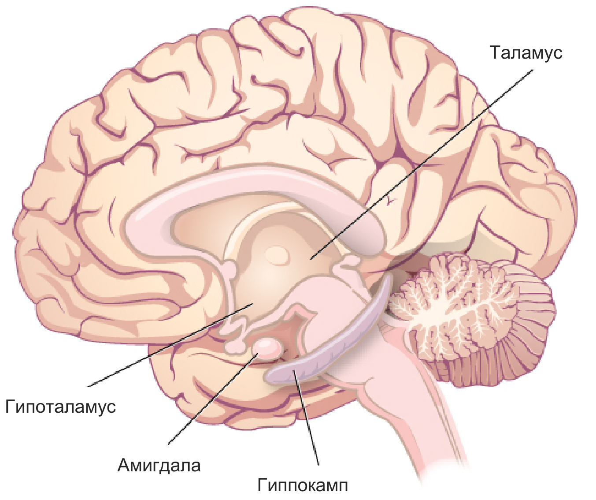
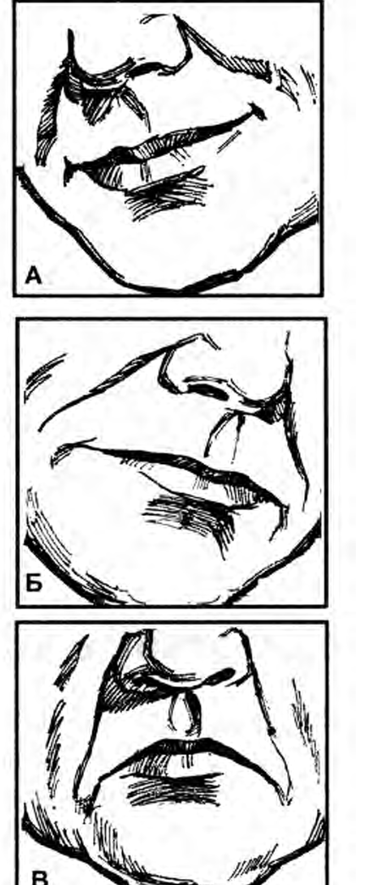

Жалпы психология · Эмоциялық процестер · 11-дәріс
Эмоция және сезімжан дүниенің тілі
Емтихан парағын алғанда жүрегіңіз дүрсілдейді. Айтыста ақын тапқыр сөз айтса, бүкіл зал бір сәтте ду қол соғады. Жақын досыңызға деген сенім жылдар бойы сақталады. Үшеуі де — эмоциялық өмірдің көрінісі, бірақ табиғаты әртүрлі. Бұл білім базасы эмоцияның не екенін, қандай қызмет атқаратынын, қандай бөліктерден құралатынын, мида қалай туатынын, ғалымдар оны қалай түсіндіргенін және эмоция мен сезімнің айырмасын бір әңгімеге біріктіреді. Терминдер Бабаевтың қазақша оқулығы бойынша берілген, ал тапсырмалар мен тәжірибелерді өзіңіз орындап көресіз.
Құрметті студенттер!
Күнделікті өмірде «көңілім түсіп тұр», «жүрегім орнына түсті», «ашуым келді» деп жиі айтамыз. Эмоцияны бәріміз білеміз, бірақ оның не екенін түсіндіріп көріңізші: сөз жетпей қалады. Бабаев та осыны айтады: сезімді сөзбен суреттеу қиын, қолданған сөзіміз көңіл-күйімізді толық жеткізбейді. Психология осы құбылысты ғасырдан астам уақыт зерттеп келеді.
Білім базасы бес бөлімнен тұрады. Алдымен эмоцияның анықтамасын, белгілерін, қызметтерін қарастырып, эмоция мен сезімді ажыратамыз. Екінші бөлімде эмоцияның құрылымдық компоненттеріне, ми мен денедегі негізіне және сыртқы көрінісіне тоқталамыз. Үшінші бөлім — эмоция теориялары: Дарвин, Джемс пен Ланге, Кеннон мен Бард, Шехтер, Симонов, Анохин эмоцияның тууын әрқалай түсіндірген. Төртінші бөлімде эмоциялық күйлерді (көңіл-күй, аффект, құмарлық, стресс, фрустрация) және жоғары сезімдерді талдаймыз. Соңғы бөлім эмоцияның дамуына, тұлғадағы орнына және зерттеу әдістеріне арналған.
Тараулар бір-бірімен байланысқан: әр тарау алдыңғы тарауда туған сұрақтан басталып, келесі тарауға көпір салып аяқталады. Сондықтан ретімен оқыған дұрыс. Ал керек ұғымды жоғарыдағы іздеу жолағы немесе терминдер сөздігі арқылы таба аласыз.
Әр тараудың соңында негізгі түйіндер, өзін-өзі тексеру сұрақтары және жағдаяттық есептер берілген.
Бастамас бұрын
Бүгін сізде қандай эмоция болды? Біреуін еске түсіріп, үш сұраққа жауап беріп көріңіз: оны не тудырды, денеңізде не өзгерді, сырттай қалай білінді? Осы үш сұрақтың жауабы — эмоцияның үш қыры. Олар туралы 1 және 4-тарауларда толық айтамыз. Бастау үшін 1-тарауға өтіңіз.
Мазмұны
I БӨЛІМЭмоция деген не?Анықтамасы, белгілері, қызметтері және эмоция мен сезімнің айырмашылығы
- 01Эмоция деген не?Деканат тақтасына хабарландыру ілінді: ертеңгі емтихан бір аптаға шегерілді. Дайындалып үлгермеген Аружан қуанып кетті, …
- 02Эмоцияның қызметтеріКөшеден өтіп бара жатырсыз. Бұрылыстан кенет көлік шықты. Ойланып үлгермей-ақ қадамыңызды жылдамдатып, тротуарға шығып к…
- 03Эмоция мен сезімнің айырмашылығыАйгерім мен Данияр үш жылдан бері бір-бірін жақсы көреді. Дүйсенбі күні Данияр оны кафеде күтіп отыр екен — Айгерім қуан…
II БӨЛІМЭмоцияның құрылымы мен негізіҚұрылымдық компоненттері, физиологиялық негізі және сыртқы көрінісі
- 04Эмоцияның құрылымдық компоненттеріЕмтихан басталуына бес минут қалды. Жүрегіңіз дүрсілдеп, алақаныңыз суып кетті. Басыңызда «бәрін ұмытып қалдым ғой» деге…
- 05Эмоцияның физиологиялық негізі«Жүрегім орнына түсті», «зәрем ұшты», «қаным қайнады», «тұла бойым мұздап кетті». Қазақ тілінде эмоцияны денемен айтатын…
- 06Эмоцияның сыртқы көрінісіАуылдан келген анаңыз вокзалда сізді көргенде бір ауыз сөз айтпаса да, оның қуанышын бірден түсінесіз. Емтиханнан шыққан…
III БӨЛІМЭмоция теорияларыЭволюциялық, перифериялық, таламустық, когнитивтік және ақпараттық теориялар
- 07Эмоцияның алғашқы теорияларыЕмтихан бөлмесіне кіріп, билет алдыңыз. Үш сұрағының бірін де білмейсіз. Алақаныңыз терлеп, жүрегіңіз су ете қалады. Сон…
- 08Таламустық, активациялық және когнитивтік теорияларДжемс пен Ланге «алдымен дене, сосын эмоция» деді. Ғалымдар бұл ойды тәжірибеде тексергенде, оған қайшы деректер көбейді…
- 09Ақпараттық және биологиялық теориялар. Теорияларға жалпы бағаАлдыңғы теориялар көбіне бір сұрақ төңірегінде айналды: эмоцияда не бірінші — дене ме, ми ма, ой ма? Симонов басқа сұрақ…
IV БӨЛІМЭмоция мен сезім түрлеріЭмоциялық күйлер мен жоғары сезімдер
V БӨЛІМЭмоция және тұлғаЭмоцияның дамуы, тұлғадағы орны және зерттеу әдістері
Дереккөздер
- Бабаев С. Б.Жалпы психология (жантану негіздері). 17-дәрісбаян «Сезім», 200–214-беттер. Қазақша терминдер осы кітап бойынша берілді.
- Немов Р. С., Романова Е. С.Общая психология. II бөлім, 24-тарау «Эмоции и чувства».
- Маклаков А. Г.Общая психология. 16-тарау «Эмоции», 392–415-беттер.
- Крысько В. Г.Общая психология в схемах и комментариях. 3.1–3.4 «Сущность эмоций и чувств», «Возникновение эмоции (по Кеннону–Барду)», «Классификация эмоций и чувств», «Особенности настроений и аффектов».
- OpenStax. Psychology 2e10.4 «Emotion», 14.1–14.2 «Stress», 14.5 «The Pursuit of Happiness». Лимбикалық жүйенің суреті мен жеті бет-әлпеттің суреті осы кітаптан алынды (CC BY 4.0).
I бөлім · Эмоция деген не?
Эмоция деген не?
Деканат тақтасына хабарландыру ілінді: ертеңгі емтихан бір аптаға шегерілді. Дайындалып үлгермеген Аружан қуанып кетті, ал бәрін оқып, әзір отырған Ерланның көңілі түсті. Хабар біреу, ал толғаныс екі түрлі. Демек эмоция оқиғаның өзін емес, оның біз үшін қандай маңызы барын көрсетеді. Осы ойды тарау бойы тарқатамыз.
- Бабаев, 17-дәрісбаян, 1–2-бөлім
- Немов, 24.1
- Маклаков, 16.1–16.2
- Крысько, 3.1
- OpenStax, 10.4
Күн бойы кезіккен нәрсенің бәріне біздің әйтеуір бір қатынасымыз болады. Біреуі ұнайды, біреуі ұнамайды. Біреуі қызықтырады, біреуіне қарамай өте шығамыз. Заттың жеке қасиеттерінің өзі де бізге бәрібір емес: бір түс көзге жағады, бір дауыс құлаққа жайсыз естіледі, бір тағамның дәмі татымсыз көрінеді (Бабаев, Маклаков). Ал өмірдегі оқиғалар бұдан әлдеқайда күрделі толғанысорыс. переживание туғызады: қуаныш пен қайғы, мақтаныш пен ұят, қорқыныш пен ашу. Толғаныс деп эмоцияны іштей бастан кешіруді айтамыз. Мұндай толғаныстардың түрі сан алуан. Бабаев өкініш пен қанағатты, қуаныш пен қорқынышты, таңдану мен жиіркенуді атап шығады да, бұл тізімді шексіз жалғастыруға болатынын айтады.
Эмоциясыз өмірді елестетіп көріңізші. Жақсы баға алсаңыз да, досыңыз ренжісе де, туған күніңізде құттықтау келсе де — бәрібір. Бабаев мұндай өмірді «өшкен өмір» дейді және Әлішер Науаидің «Сезімсіз адам — кесек» деген сөзін келтіреді. Адам эмоцияға өзі ұмтылады. Күнделікті өмірде әсер аз болса, оның орнын толтыру үшін ән-күй тыңдайды, әсерлі фильм көреді, оқиғасы шиеленіскен кітап оқиды (Бабаев).
Ертеде эмоцияны «аффект» деп атаған
Психикалық құбылыстарды зерттей бастағанда-ақ ежелгі философтар оларды екі үлкен топқа бөлген: ойлау және толғаныс (Немов). Ойлау деп танымдық процестерді айтқан, ал толғаныс деп бүгін біз эмоция деп атайтын құбылысты айтқан. Ұзақ уақыт бойы толғаныстың бәрін аффекторыс. аффект деп атап келген. Бұл сөз ғылымда әлі де бар, бірақ XX ғасырдан бастап аффект деп эмоцияның бір ғана түрін, яғни қысқа әрі өте күшті толғанысты атайды. Ол туралы 10-тарауда айтамыз.
«Эмоция» сөзі латынның emoveo сөзінен шыққан: «толқытамын», «тебірентемін». Француз тіліндегі түбірлес сөз «қозғау», «қоздыру», «итермелеу» деген мағына береді (Немов). Демек сөздің өзінде-ақ маңызды бір ой жатыр: эмоция адамды қозғайды, әрекетке итермелейді. Ол денедегі өзгерістермен де, өмірге қажет нәрсенің табылу-табылмауымен де тығыз байланысты.
Қазақ тілінде бұл саланы бірнеше сөзбен атайды. Бабаевтың оқулығында тарау «Сезім» деп аталады: ол «сезім» сөзін кең мағынада, эмоциялық өмірдің бәрін қамтитын ұғым ретінде алады. Біз бұл сайтта кең ұғымды эмоция немесе эмоциялық сала деп атаймыз, ал сезім сөзін тар мағынада, орыстың «чувство» сөзінің баламасы ретінде қолданамыз. Бұл екеуінің айырмасы — 3-тараудың тақырыбы. Ал «толғаныс» сөзін Бабаевтан алдық: ол эмоцияның іштей бастан кешірілетін жағын дәл атайды.
Анықтамалар: эмоция нені бейнелейді?
Енді ғылыми анықтамаларға келейік. Ғалымдар эмоцияның анықтамасына әлі бір ауыздан келіспеген (Немов). Сондықтан бес дереккөздің анықтамасын қатар қойып, олардың ортақ өзегін іздейміз.
Эмоция
Сыртқы және ішкі жағдайлардың адам өміріне қандай жеке маңызы барын және адамның оларға берген бағасын толғаныс түрінде бейнелейтін психикалық процесс (Маклаков).
Бұл анықтамадағы өзекті сөз — «жеке маңызы». Жаңбыр жауып тұр делік. Бұл — сыртқы жағдай. Егін салған шаруа үшін ол — қуаныш, ал далада той жасамақ болған отбасы үшін — алаңдау. Маклаков осыдан маңызды қорытынды шығарады: эмоцияның ең басты белгісі — оның субъективтілігіорыс. субъективность. Бір жағдай әр адамда өзінше толғаныс туғызады, өйткені әркімнің оған қатынасы әртүрлі.
Эмоция
Жағымды не жағымсыз реңкі бар, өмірлік маңызды қажеттіліктердің қанағаттануымен байланысты толғаныс. Онда қажеттіліктің өзі, оның күші, қанағаттану жағдайы мен барысы, адамның оқиғалар мен заттарға қатынасы көрінеді (Немов; ең жиі кездесетін анықтама).
Бұл — Немовтың өз анықтамасы емес: психологияда эмоцияны көбіне осылай түсінеді. Анықтамада екі нәрсе алға шығады. Біріншісі — таңбасы: эмоция әрқашан не жағымды, не жағымсыз болады (Бабаевта: ұнамды не ұнамсыз). Екіншісі — қажеттілік: эмоция бізге не керек екенімен және сол қажеттіліктің қалай қанағаттанып жатқанымен тікелей байланысты. Бұл байланысқа төменде жеке тоқталамыз.
Сезім және эмоция
Сезім — адамның өзі танып-білетін, істейтін нәрсеге және айналасындағының бәріне қатынасын іштей бастан кешуі. Эмоция — сезімнің тікелей көріну түрі (Крысько).
Бұл анықтама «сезім» сөзінен басталады, ал эмоция сезімнің сыртқа шыққан, тікелей көрінісі ретінде беріледі. Бір қарағанда, Крысько басқа авторларға қарағанда ұғымдардың орнын ауыстырып жібергендей көрінеді. Шын мәнінде әр автор «эмоция» сөзін әртүрлі кеңдікте алады. Бұл түйінді 3-тарауда шешеміз.
Сезім (Бабаевта кең мағынада)
Адамның қоршаған болмыстағы заттармен және құбылыстармен қатынасынан туатын, сан алуан түрде көрінетін толғаныстары (Бабаев).
Ағылшын тіліндегі OpenStax оқулығы эмоцияны қысқа анықтайды.
Эмоция
Адамның субъективтік күйі; күнделікті тілде біз оны «сезімім» деп атаймыз (OpenStax).
Бұл анықтамада да субъективтілік алда тұр. Бірақ OpenStax сол жерде тағы бір маңызды жайды ескертеді: эмоция бір ғана толғаныстан тұрмайды, ол бірнеше бөліктің бірігуінен туады. Оларды тараудың соңында атап өтеміз.
Бес анықтаманы салыстырсақ, бәрінде дерлік қайталанатын үш сөз бар: қатынас, маңыз (немесе қажеттілік) және толғаныс. Осыдан эмоцияның қысқа әрі жинақы анықтамасын шығаруға болады.
эмоция = дүниеге және өзімізге қатынасымыздың толғаныс түріндегі бейнесі
Эмоция (кең мағынада)
Адамның қоршаған дүниеге және өзіне қатынасын толғаныс түрінде бейнелейтін психикалық процесс. Бұл қатынас қажеттілікке байланысты: адамға не керек болса, соған қатысты нәрсе оны қуантады не алаңдатады.
| Дереккөз | Анықтаманың өзегі | Нені баса айтады? |
|---|---|---|
| Маклаков | Жағдайдың адам үшін жеке маңызын толғаныс түрінде бейнелейтін процесс. | Субъективтілікті: бір жағдай әр адамда әртүрлі эмоция туғызады. |
| Немов | Жағымды не жағымсыз реңкі бар, қажеттілікпен байланысты толғаныс (Немов келтірген ең жиі анықтама). | Таңбасын және қажеттілікпен байланысын. |
| Крысько | Сезім — өз қатынасын бастан кешу; эмоция — сезімнің тікелей көрінісі. | Сезім мен эмоцияның байланысын. |
| Бабаев | Заттар мен құбылыстарға қатынастан туатын, сан алуан түрде көрінетін толғаныстар. | Қатынасты және көріну түрлерінің көптігін. |
| OpenStax | Адамның субъективтік күйі, күнделікті тілде «сезім» деп аталады. | Субъективтілікті және эмоцияның бірнеше компоненттен құралатынын. |
Анықтамалардың ортақ өзегін төмендегі схемадан қараңыз. Әр блокты басып, түсініктемесін оқыңыз.
Затты емес, затқа қатынасты бейнелейді
Эмоцияны танымдық процестермен салыстырсақ, оның ерекшелігі айқын көрінеді. Үстелде алма жатыр делік. Қабылдау арқылы оның түсін, көлемін, пішінін білеміз: қызыл, дөңгелек, жұдырықтай. Бұл — алманың өз қасиеттері. Ал эмоция «алма қандай?» деген сұраққа емес, «алма маған қандай?» деген сұраққа жауап береді. Аш адамның тәбетін ашады, тоқ адамға бәрібір, ал аллергиясы бар адам одан сескенеді. Алма өзгерген жоқ, өзгерген — адамның оған қатынасы. Бабаевтың мысалы да осы: аш адам мен тоқ адам бір тағамға әртүрлі қарайды.
Бұл айырма түйсікорыс. ощущение пен эмоцияны салыстырғанда тіпті айқын көрінеді (Немов). Екеуі санамызда жиі араласып кетеді. Тіліміз де оларды көп ажырата бермейді: жылы суға түскендегі рахатты да, досымызбен кездескендегі қуанышты да «жағымды сезім» дей саламыз. Соған қарамастан, ғалымдар олардың арасынан бірнеше айырма табады. Негізгілерін кестеге жинадық.
| Белгі | Түйсік | Эмоция |
|---|---|---|
| Не туралы хабар береді? | Заттың немесе ағзаның күйі туралы объективтік мәлімет береді: түсі, дәмі, қызуы. | Заттың қасиетін тікелей бейнелемейді. Ағзаның сол сәттегі күйін, қажеттілігі мен оның қаншалықты қанағаттанғанын және ағза мен орта арасындағы қатынасты көрсетеді. |
| Неден туады? | Белгілі бір түйсік мүшесінің жұмысынан: көздің, құлақтың, тілдің. | Ешбір түйсік мүшесіне (көзге, құлаққа, тілге) тікелей байланбайды. Орталық жүйке жүйесіндегі не ағзаның ішкі ортасындағы өзгерістерден туады. |
| Сапасы мен реңкі | Өз модальдігі, яғни түрі бар (көру, есту, иіс түйсігі), бірақ өздігінен жағымды да, жағымсыз да болмайды. | Модальдігі жоқ, бірақ әрқашан жағымды не жағымсыз реңкі бар. |
| Қайда сезіледі? | Заттың қасиеті болып сезіледі: «қант тәтті». | Белгілі бір затқа тікелей телінбейді. Адамның өзінде, ішінде сезіледі: «мен қуаныштымын». |
| Қажеттілікпен байланысы | Қажеттілікке тәуелсіз: зат әсер етсе болғаны, түйсік пайда болады. | Қажеттілік оянғанда туады, күші мен барысы да соған байланысты. |
| Өмірдегі міндеті | Дүниені тануға және онда бағдар табуға көмектеседі. | Қажеттіліктердің жай-күйі мен қанағаттану барысын көрсетеді. |
| Тұлғамен байланысы | Тұлғаны сипаттамайды, танымдық процеске жатады. | Тұлғамен тікелей байланысты, әсіресе аффект, сезім және құмарлық. |
| Полярлығы | Жоқ. | Бар: рахат — жайсыздық, көңілділік — жабырқау, қуаныш — мұң, бақыт — қасірет (Немов, С. Л. Рубинштейнге сүйеніп). |
Кестенің мағынасын өзіңіз тексеріп көріңіз. Төменде бір нәрсені және оны көріп тұрған адамды таңдаңыз. Қабылдау бағанында не өзгеретінін, эмоция бағанында не өзгеретінін бақылаңыз.
Эмоция қайдан туады?
Эмоция қажеттілікпен байланысты дедік. Бабаев бұл байланысты нақты тұжырымдайды: сезім екі себептен туады. Біріншісі — қажеттілікорыс. потребность: адамның затқа қатынасын сол анықтайды. Екіншісі — адамның сол заттың қасиетін түсініп, санасында бейнелей алуы. Екеуі де керек.
Бір мысал. Университеттің сайтында грант иегерлерінің тізімі жарияланды. Мектеп бітірген Динара тізімнен өз атын тауып, қуанғаннан жылап жіберді. Ал қасында отырған бес жасар інісі сол тізімге қарап, ештеңе сезбеді. Динараның оқуға деген қажеттілігі бар және ол тізімнің не екенін түсінеді. Інісінде мұндай қажеттілік те, түсінік те жоқ. Сондықтан бір ғана тізім біреуін жылатып, екіншісін бейжай қалдырды.
Бұл ойды нақтылай түсейік. Эмоция туу үшін ең аз дегенде бір шарт керек: адам айналасындағы бір нәрсенің өзінің оянған қажеттілігіне қатысы барын аңғаруы тиіс (Немов). Ал эмоцияның жағымды не жағымсыз болуы адамның мақсатқа жету мүмкіндігін қалай бағалайтынына байланысты. Мүмкіндік зор көрінсе, жағымды эмоция туады, аз болса — жағымсыз. Мүмкіндік мүлде жоқ болса, эмоция да әлсірейді. Мұндайда парасатты адам «қолдан келер ештеңе жоқ болса, уайымдаудың да қажеті жоқ» деп ойлайды. Қажеттілік пен ақпараттың эмоцияға әсерін бір формулаға салған теория да бар. Ол формуламен 9-тарауда өзіңіз есептеп көресіз.
Бұл байланыстың екінші жағы да бар: эмоция арқылы адам өз қажеттілігін және ол неге бағытталғанын аңғарады (Маклаков). Жағымды эмоция көбіне қалаған нәтижеге жеткенді, ал жағымсыз эмоция сәтсіздікті білдіреді. Сондықтан эмоция әрекетімізді реттеп отырады: «дұрыс келе жатырсың» не «бір нәрсе дұрыс болмай тұр» деп белгі береді. Бұл белгінің қалай жұмыс істейтінін 2-тарауда толық қарастырамыз.
Эмоцияларды қажеттілікпен байланысына қарай екі үлкен топқа бөлуге болады (Бабаев, В. К. Вилюнасқа сүйеніп). Бірінші топтағы эмоциялар қажетті затқа ерекше мән береді де, оны әрекеттің түрткісіне айналдырады. Ұзақ іздеген кітабының кітапханаға келгенін естіген студент қуанып, сабақтан кейін бірден кітапханаға жүгіреді. Мұндай эмоцияларды Вилюнас жетекші ниеттер деп атаған. Екінші топтағы эмоциялар әрекет басталған соң, соның барысында туады. Олар адамның әрекетке көмектескен не кедергі болған жағдайға (үміт, ыза), қол жеткен нәтижеге (қуаныш, өкініш) немесе болуы мүмкін жағдайға (қауіптену, сенімділік) қатынасын көрсетеді.
Эмоциялық құбылыстардың ерекшеліктері
Эмоциялық құбылыстардың бірнеше ерекшелігі бар. Олар эмоцияны басқа психикалық процестерден ажыратып тұрады. Төмендегі тізім Бабаевтың «Сезім ерекшеліктері» бөліміне сүйенеді.
- Даралығы. Эмоция — әр адамның өзіне тән қасиеті. Бір жағдайда әркім затқа өзінше баға беріп, басқаға ұқсамайтын күйге түседі. Еске түскен нәрсеге қатынасымыз да әртүрлі: қуанышты сәтте кездескен адамды, затты, оқиғаны кейін жылы сезіммен еске аламыз. Бабаев бойынша, әрбір сезім адамның тұлғасын сипаттайды.
- Ақпарат көзі болуы. Эмоция дүниеге қатынасымызды білдіріп қана қоймайды, сол дүние туралы хабар да береді. Нысанның бейнесі — эмоцияның танымдық жағы, ал сол сәттегі адамның күйі — оның субъективтік жағы (Бабаев).
- Қарама-қарсы сипаты. Эмоциялар жұп болып келеді. Бұл қарапайым әсерге де (рахаттану — қысылу), күрделі толғанысқа да (ұнату — жек көру, қуаныш — мұң, көңілділік — қайғы) тән (Бабаев). Ғылымда бұл белгіні полярлықорыс. полярность деп атайды. Бір нысан бір мезгілде қарама-қарсы екі эмоция туғызса, мұны амбивалентті сезіморыс. амбивалентные чувства дейміз (Бабаевта: екі ұдай). Ол туралы 11-тарауда айтамыз.
- Бірігімді (интегралды) сипаты. Бабаев бұл белгіні тек сезімге тән, аса маңызды белгі деп атайды. Эмоция бүкіл денені билеп алады. Ол дененің барлық қызметін бір сәтте біріктіреді де, ағзаға пайдалы не зиянды әсер туралы хабар береді. Әсердің қайдан келгені, дене оған қалай жауап беретіні әлі белгісіз болса да, бұл хабар санаға жетіп үлгеруі мүмкін. Түнде жатақхананың қараңғы дәлізінде бірдеңе сықыр етті делік. Не екенін білмей тұрып-ақ бүкіл денеңіз селт етіп, жүрегіңіз дүрс ете қалады.
- Денемен байланысы. Эмоцияның әсерінен ішкі мүшелердің жұмысы өзгереді: қан айналымы, тыныс алу, ас қорыту, ішкі және сыртқы секреция бездері. Шектен тыс ұзақ әрі күшті толғаныс ағзаны ауруға шалдықтыруы мүмкін (Бабаев, М. И. Аствацатуровқа сүйеніп). Бұл туралы 5-тарауда толық айтамыз.
- Тарихи-әлеуметтік негізі. Эмоцияның мағынасы да, көріну түрі де әр халықта, әр дәуірде өзгеріп отырады. Қоғам дамыған сайын сезімдер де өзгереді. Әр дәуірде өмір сүрген адамдардың бір затқа қатынасы бірін-бірі қайталамайды (Бабаев). Маклаков та сезімді білдіру тәсілдері тарихи дәуірге қарай өзгеріп отырғанын айтады.
Эмоциялар сан алуан әрі күрделі болғандықтан, оларды толық танып, мүлтіксіз басқару мүмкін емес (Бабаев). Адам эмоциясын біршама реттей алады (бұл туралы төменде айтамыз), бірақ оны толық бағындыра алмайды. Эмоцияның күрделілігін өз сезімімізді сөзбен жеткізгіміз келгенде аңғарамыз: айтқан сөзіміз бұлыңғыр шығып, көңіліміздегі күйге дәл келмейді. «Не сезгеніңді айтшы» деген сұраққа көбіміз «білмеймін, бір түрлі...» деп жауап береміз.
Ерекшеліктерді нақты мысалдармен сәйкестендіріп көріңіз.
Вундттың үш өлшемі
Эмоциялар сансыз көп болса, оларды қалай салыстыруға болады? Неміс психологы В. Вундт бұған өзінше жауап берген: эмоцияның бәрін үш өлшеммен сипаттауға болады, ал әр өлшемнің бір-біріне қарама-қарсы екі ұшы бар (Маклаков). Маклаков бұл жүйені координаттар сызбасы түрінде береді (16.1-сурет).
- Рахат — жайсыздық (орыс. удовольствие — неудовольствие; Бабаевта: сүйсіну — жеркену). Бұл — эмоцияның таңбасы.
- Қозу — тынышталу (орыс. возбуждение — успокоение; Бабаевта: қозу — тыншу). Қозған күй белсенді болады, ол әрекетке не оған дайындыққа байланысты. Шамадан тыс қозу әрекетті бейберекет етіп жібереді. Тынышталу белсенділікті азайтады, бірақ әрекетті ойластырып істеуге негіз болады (Маклаков).
- Ширығу — жеңілдеу (орыс. напряжение — разрешение). Жауапты сәтте, шешім қабылдарда, қиындықты жеңерде біз ширығамыз. Көбіне бұл белсенді күй: зейін өткірленеді, ойға да, денеге де күш бітеді, бір іс істегің келеді. Ал әрекетін әлі жөнді меңгермеген адам ширыққанда қимылы құрысып, айналасындағы көп нәрсені аңғармай қалады (Маклаков). Іс біткенде жеңілдеп қаламыз.
Әр эмоцияны осы үш өлшемдегі орнымен сипаттауға болады. Мысалы, қаһар — жайсыз, қатты қозған әрі ширыққан күй, ал қанағат — жағымды әрі тыныш күй. Бабаевтың мысалы да осыған саяды: әр эмоцияның өзіне тән қозу дәрежесі бар. Қаһар дүлей қызбалық болып көрінеді, ал қанағаттанған адам сабырлы, байсалды болады.
Төмендегі тәжірибеде үш жүгірткіні жылжытып, бір эмоцияны Вундт кеңістігіне орналастырыңыз. Дайын мысалдарды да басып көріңіз.
Жануардың эмоциясы мен адамның эмоциясы
XIX ғасырдың екінші жартысына дейін эмоция тек адамға тән деп саналған (Немов). Қазір эмоцияның жануарларда да бар екені дәлелденген. Тіршілік иесі неғұрлым күрделі болса, оның дүниемен байланысы неғұрлым көп қырлы болса, эмоциялық өмірі де соғұрлым бай болады. Бұл жағынан адам барлық жануардан озып кеткен (Немов).
Ч. Дарвин адам мен жануардың эмоцияны білдіру тәсілдерін салыстырған. Ол адамтектес маймылдардың және туа соқыр балалардың бет-әлпеті мен дене қимылдарынан үлкен ұқсастық тапқан (Маклаков). Соқыр туған бала басқа адамның бет-әлпетін ешқашан көрген емес, демек ол бұл қимылдарды біреуден үйренбеген. Дарвиннің ойынша, эмоция тіршілік иесінің ортаға бейімделуіне көмектесетін құрал ретінде эволюцияда қалыптасқан. Бұл теорияны 7-тарауда толық талдаймыз.
Ең қарапайым эмоциялар, яғни қажеттілік қанағаттанғандағы рахат пен қанағаттанбағандағы жайсыздық, туа бітеді және адам мен жануарға ортақ (Немов). Аптап ыстықта сусыз қалған қой да, көкпардан кейін шөлдеп шыққан шабандоз да шөлдің жайсыздығын бастан кешеді. Немовтың айтуынша, мұндай эмоциялардың жалпы заңдары адам мен жануарда шамамен бірдей. Бірақ айырмасы да осы жерден басталады.
- Адам эмоциясын реттей алады. Ол биологиялық эмоциясын ақылмен, санамен, ерікпен басқарады (Немов). Ораза ұстаған адам күні бойы аштық пен шөлдің жайсыздығын сезеді, бірақ кешке дейін шыдайды.
- Адамда эмоция нақты нысанға бағытталады. Маклаковтың болжамынша, эмоциялар жануарлар әлемінің эволюциясында қалыптасып, адамда ең жоғары сатыға жеткен, өйткені адамда олар сезім түрінде нақты нысанға бағытталады (Маклаков). Махаббат нысансыз болмайды: адам біреуді, бір нәрсені — досын, туған жерін, ісін жақсы көреді. Бұл 1.2-кестеге қайшы емес. Онда эмоция түйсікпен салыстырылған, ал мұнда әңгіме эмоцияның жоғары түрі — сезім туралы. Немов та сезім әрқашан нақты нысанға бағытталады дейді.
- Адам эмоциясын сөзбен танып, басқаға жеткізеді. Мұның негізі — екінші сигналдық жүйе, яғни сөз. Соның арқасында адам өз эмоциясын аңғарады, эмоциялық тәжірибесін басқаға береді және эмоциясын мақсатты түрде басқара алады (Крысько). Айтыста ақын бір шумақпен бүкіл залды күлдіреді, ал кітап оқыған адам ешқашан көрмеген кейіпкермен бірге қайғырады.
- Сезімдер тек адамға тән. Немов бойынша, күрделі сезімдер туа бітпейді, өмір бойы қалыптасады және тек адамда болады. Адамгершілік, ақыл-ой, эстетикалық сезімдер туралы 11-тарауда айтамыз.
Кейбір тіл мамандарының айтуынша, эмоцияны білдіретін сөздер тілде ең алғаш пайда болған сөздердің қатарында, әрі олардың мағынасы өте нәзік ажыратылған (Немов). Бір ғана «ашу» төңірегінде қазақ тілінде қаншама сөз бар: ыза, кейіс, реніш, қаһар, долылық, күйіну. Бұл адамның эмоциялық өмірінің қаншалықты бай екенін көрсетеді.
Эмоция қалай білінеді?
Эмоцияны тек іштегі толғаныс деп түсінсек, ол туралы адамның өз сөзінен ғана білер едік. Бірақ Маклаков көрсеткендей, эмоциялық күйлердің көбі мінез-құлықта білінеді. Сондықтан оларды адамның өз сөзі арқылы да, объективтік әдістермен де зерттеуге болады. Адамның қызаруы не бозаруы, қандағы адреналин мөлшерінің өзгеруі оның эмоциялық күйін көрсетеді (Маклаков).
Емтихан парағын алған сәтті еске түсірейік. Іштей «қорқып кеттім» деп сезесіз — бұл толғаныс. Жүрегіңіз дүрсілдеп, алақаныңыз терлейді — бұл денедегі өзгерістер. Бетіңіз бозарып, дауысыңыз дірілдейді, оны оқытушы да байқап қалады — бұл сыртқы көрініс, яғни экспрессия. Бір эмоцияның осы үш қыры қатар көрінеді. Бірақ эмоцияның құрылымы бұдан да толық. OpenStax оқулығы эмоцияны төрт компоненттің бірігуі деп сипаттайды: субъективтік толғаныс, экспрессия (сыртқы көрініс), когнитивтік бағалау және физиологиялық өзгерістер. Бұл компоненттердің қай ретпен келетіні әлі анық емес, кейбірі бір мезгілде болуы мүмкін (OpenStax). Құрылымдық компоненттер 4-тарауда, физиологиялық негізі 5-тарауда, сыртқы көрінісі 6-тарауда қарастырылады.
Негізгі түйіндер
- Ертеде психикалық құбылыстарды ойлау және толғаныс деп екіге бөлген, толғаныстың бәрін аффект деп атаған. «Эмоция» сөзі «толқыту», «қозғау» деген мағынадан шыққан.
- Маклаков бойынша, эмоция — жағдайдың адам үшін жеке маңызын толғаныс түрінде бейнелейтін психикалық процесс; оның басты белгісі — субъективтілігі. Немов келтірген ең жиі анықтама бойынша — жағымды не жағымсыз реңкі бар, қажеттілікпен байланысты толғаныс.
- Жинақтап айтсақ, эмоция — адамның дүниеге және өзіне қатынасын толғаныс түрінде бейнелеуі.
- Түйсік пен қабылдау заттың қасиетін бейнелейді, ал эмоция затқа қатынасымызды бейнелейді. Эмоцияның модальдігі жоқ, бірақ әрқашан таңбасы бар; ол қажеттілік оянғанда туады.
- Бабаев бойынша, сезім екі себептен туады: қажеттіліктен және нысанның қасиетін түсінуден.
- Эмоциялық құбылыстардың ерекшеліктері: даралығы, ақпарат көзі болуы, қарама-қарсы сипаты (полярлығы), бірігімді (интегралды) сипаты, денемен байланысы, тарихи-әлеуметтік негізі.
- Вундт эмоцияны үш өлшеммен сипаттаған: рахат — жайсыздық, қозу — тынышталу, ширығу — жеңілдеу. Бұл жүйеде эмоцияның ұзақтығы ескерілмейді.
- Қарапайым эмоциялар адам мен жануарға ортақ. Адам эмоциясын реттей алады, оны сөз арқылы ұғынады, ал эмоция нақты нысанға бағытталған сезімге айналады.
Өзін-өзі тексеру
Неге бір хабар екі адамда екі түрлі эмоция туғызады?
Себебі эмоция оқиғаның өзін емес, оның адам үшін маңызын бейнелейді. Маңыз адамның қажеттілігіне байланысты. Емтиханның шегерілгені дайын емес студентке уақыт береді, сондықтан ол қуанады. Ал дайын тұрған студенттің жоспары бұзылады, сондықтан оның көңілі түседі. Маклаков бұл белгіні эмоцияның субъективтілігі дейді.
Түйсік пен эмоцияның негізгі айырмасы неде?
Түйсік заттың объективтік қасиетін бейнелейді, белгілі бір түйсік мүшесінің жұмысымен байланысты, өз модальдігі бар және қажеттілікке тәуелсіз. Эмоция заттың қасиетін емес, ағзаның күйін және қажеттіліктің қалай қанағаттанып жатқанын көрсетеді. Оның модальдігі жоқ, бірақ әрқашан жағымды не жағымсыз реңкі және полярлығы бар. Эмоция белгілі бір затқа телінбейді, адамның өз ішінде сезіледі. Ол тұлғамен тікелей байланысты.
Бабаев бойынша сезім қандай екі себептен туады? Мысал келтіріңіз.
Біріншісі — адамның затқа қатынасын анықтайтын қажеттілік. Екіншісі — адамның сол заттың қасиетін түсініп, санасында бейнелей алуы. Грант тізіміндегі өз атын тапқан талапкер қуанады: оның оқуға қажеттілігі бар және ол тізімнің мәнін түсінеді. Сол тізімге қарап тұрған кішкентай інісі ештеңе сезбейді, өйткені оның не қажеттілігі, не түсінігі жоқ.
Эмоцияның бірігімді (интегралды) сипаты дегеніміз не?
Эмоция бүкіл денені билеп, оның барлық қызметін бір сәтте біріктіреді. Сол арқылы ағзаға пайдалы не зиянды әсер туралы хабар береді. Әсердің қайдан келгені әлі белгісіз болса да, бұл хабар санаға жетіп үлгеруі мүмкін. Мысалы, қараңғыда кенет шыққан дыбыстан не екенін білмей тұрып-ақ бүкіл дене селт етеді.
Вундттың үш өлшемін атап, біреуін мысалмен түсіндіріңіз.
Рахат — жайсыздық, қозу — тынышталу, ширығу — жеңілдеу. Мысалы, емтихан алдындағы күй — жайсыз, қозған әрі ширыққан. Емтиханнан сәтті шыққан соң адам рахаттанып, тынышталады, ширығу жеңілдеуге ауысады. Маклаков бұл жүйеде эмоцияның ұзақтығы ескерілмейтінін сын ретінде айтады.
Адамның эмоциясы жануардың эмоциясынан немен ерекшеленеді?
Қарапайым биологиялық эмоциялар екеуіне де ортақ және туа бітеді. Бірақ адам эмоциясын ақылмен, санамен, ерікпен реттей алады. Сөздің арқасында адам эмоциясын аңғарады, басқаға жеткізеді және мақсатты түрде басқарады. Адамда эмоция нақты нысанға бағытталған сезім түрінде көрінеді, ал күрделі сезімдер тек адамға тән.
Неге эмоцияны сөзбен дәл сипаттау қиын?
Бабаев бойынша, эмоциялар сан алуан әрі күрделі, сондықтан оларды толық танып, мүлтіксіз басқару мүмкін емес. Сезімімізді айтқымыз келгенде, қолданған сөздеріміз бұлыңғыр шығып, көңілдегі күйге дәл келмейді. Бұған тағы бір себеп қосуға болады: эмоция бүкіл денені қамтитын бірігімді құбылыс, ал сөз оның бір қырын ғана атайды.
Сонымен эмоция — дүниеге қатынасымыздың толғаныс түріндегі бейнесі. Ол қажеттіліктен туады және денені де, мінез-құлықты да қамтиды. Бірақ ол бізге не үшін керек? Жолдан өтіп бара жатқанда кенет шыққан көліктен шошу бізге не береді? Ал сәбидің жылауы ше? Эмоцияның қандай қызметтері бар екенін 2-тарауда қарастырамыз.
I бөлім · Эмоция деген не?
Эмоцияның қызметтері
Көшеден өтіп бара жатырсыз. Бұрылыстан кенет көлік шықты. Ойланып үлгермей-ақ қадамыңызды жылдамдатып, тротуарға шығып кеттіңіз. Сосын ғана жүрегіңіздің дүрсілдеп тұрғанын байқадыңыз. Осы бір-екі секундта эмоция бірнеше жұмыс атқарды: қауіпті бағалады, сізді әрекетке итермеледі, бүкіл денені іске қосты. Бұл тарау — эмоцияның осындай қызметтері туралы.
- Маклаков, 16.1, 16.3
- Бабаев, 17-дәрісбаян, 3-бөлім
- Немов, 24.1
- Крысько, 3.2–3.3
Ақыл мен эмоция: жау ма, дос па?
Ғасырлар бойы ғалымдар эмоцияға күдікпен қарап келді. Ертедегі ойшылдардың көбі ойлау мен аффектіні (бұрын эмоциялық толғаныстың бәрін осылай, кейде құмарлық деп те атаған) бір-біріне жау, бірге жүре алмайтын құбылыстар деп санаған (Немов). Ежелгі грек философтары — стоиктер, кейін орта ғасырдағы діни ілімдер былай үйреткен: парасатты адам аффектіге берілмеуі керек, ойы бұрмаланбай, бейтарап болуы үшін ол кез келген құмарлықтан арылуы тиіс. Бұл пікірге Р. Декарт пен Б. Спиноза сияқты бірен-саран ойшыл ғана қосылмаған.
Ч. Дарвиннің эволюциялық теориясы бұл көзқарасты өзгертті. Енді ойлау мен эмоцияны бір-бірін толықтыратын екі қабілет деп қарай бастады. Эмоцияның пайдалы қызметтері туралы әңгіме осыдан басталды. Вольтердің мына сөзі де осы туралы: эмоция мен сезім — кеменің желкенін керетін жел; жел кейде кемені батырып жібереді, бірақ онсыз кеме жүзе алмайды (Крысько келтіреді).
Халық даналығы да бұл мәселені айналып өтпеген: «Ашу — дұшпан, ақыл — дос, ақылыңа ақыл қос» (Бабаев). Мақал ашуды мүлде жоқ қылуды емес, оны ақылға бағындыруды үйретеді.
Эмоция неге керек? Эволюция барысында ол тіршілікті қалыпты шекте ұстап тұратын тетікке айналды: бір нәрсе ағзаға зиян келтіретін болса, эмоция ол туралы алдын ала ескертеді (Маклаков). Сондықтан эмоция ағзаның күйін де, адамның әрекетін де реттеп отырады. Осы ұзақ даму жолында эмоция бірнеше өзіндік қызмет атқаратын болды.
Эмоция ең алдымен ағзаның күйін реттейді. Жағымсыз эмоциялық күй ауруға жол ашуы мүмкін, ал жағымды күйде адам кейде тезірек айығады. «Сөз де емдейді» деп бекер айтпайды: психотерапевт науқасқа сөзбен әсер етіп, оның эмоциялық күйін өзгертеді. Мұны эмоцияның реттеу қызметіорыс. регуляторная функция дейді (Маклаков). Бұл байланыстың физиологиясын 5-тарауда қарастырамыз. Ал бұл тарауда эмоцияның адамның мінез-құлқын қалай реттейтініне тоқталамыз. Негізге алты қызметті аламыз: Маклаков пен Бабаевтың тізімдері бір-біріне сай келеді.
Бағалау және белгі беру
Бейнелеу-бағалау қызметі (Бабаевта: бейнелеу)
Эмоцияның оқиғаларға жалпылама баға беруі. Эмоция бүкіл ағзаны қамтитындықтан, біз әсердің пайдалы не зиянды екенін оның зардабы денеге білінбей тұрып-ақ аңғарып, жауап не қорғаныс әрекетіне көшеміз (Маклаков, Бабаев).
Жолдан өтіп бара жатқан адамды елестетіңіз. Көшедегі көлік қозғалысына қарай ол әртүрлі дәрежеде қорқыныш сезеді. Көліктің жылдамдығын есептемейді, қашықтығын метрмен өлшемейді. Эмоция оған жағдайдың жалпы бағасын бірден береді: «қауіпсіз», «абайла» не «қауіпті».
Мұндай баға тек өз тәжірибемізден тумайды. Біз басқа адамдармен араласқанда, олардың толғанысына ортақтасамыз. Өнер туындылары, кино, теледидар, әлеуметтік желі арқылы да басқалардың бағасын қабылдаймыз (Маклаков, Бабаев). Бірінші курс студенті бір оқытушының сабағына әлі бір рет те кірмеген. Бірақ жоғары курстағылардың әңгімесін естіп, оның емтиханынан қазірден сескеніп жүр. Оның бұл қорқынышы өз басынан өткеннен емес, өзгелердің әңгімесінен туған.
Эмоция дүниеде бағдар табуға көмектеседі: заттар мен құбылыстарды өзімізге керек пе, жоқ па — соған қарай бағалаймыз. Толғаныс — қажеттілігіміз туралы хабар. Ол қажеттілігіміздің қалай қанағаттанып жатқанын, жолымызда қандай кедергі барын, ең алдымен неге назар аудару керегін көрсетеді. Жағымды толғаныс «бәрі дұрыс жүріп жатыр» десе, жағымсыз толғаныс «бір нәрсе дұрыс емес» дейді. Мұны эмоцияның белгі беру қызметіорыс. предынформационная, сигнальная функция дейді (Маклаков, Немов; Бабаевта: ақпарат алу не хабар жеткізу).
Күнделікті мысал. Курстық жұмысты тапсыруға екі күн қалды. Студент кешке досымен кафеде отыр, бірақ көңілі бір түрлі алаң. Бұл алаңдау — белгі: жұмысты уақытында тапсыру керек, ал уақыт тығыз. Эмоция оған қазір ең алдымен неге көңіл бөлу керегін еске салады.
Итермелеу және қуаттау
Ынталандыру қызметі (Бабаевта: ниеттеу немесе ынталандыру)
Эмоцияның адамды затқа ұмтылуға не одан аулақ болуға итермелеуі. Бағалау қызметімен тікелей байланысты: эмоция бағалап қана қоймай, сол бағаға сай әрекетке бағыт береді (Маклаков, Бабаев).
Жолаушы мысалына қайта оралайық. Жақындап келе жатқан көлікті көріп қорыққан адам қадамын жылдамдатады. Мұнда эмоция жағдайды бағалап қана қойған жоқ, адамды әрекетке итермеледі. Бұл байланысты С. Л. Рубинштейн былай түсіндірген: эмоцияның өзінде затқа ұмтылу не одан аулақ болу тілегі бар. Сондықтан эмоция қажеттілікті қанағаттандыру үшін нені, қай бағытта іздеу керегін, мәселені қалай шешуге болатынын көрсетеді (Маклаков).
Бұл қалай жүреді? Толғаныстың ішінде қажеттілікті қанағаттандыратын заттың бейнесі пайда болады. Сол затқа қызығушылық оянады. Ал қызығушылық адамды әрекет етуге ынталандырады (Бабаев). Мектеп оқушысы Абайдың бір өлеңін оқып, қатты тебіренді делік. Ертесі ол кітапханадан Абайдың жинағын алып, басқа өлеңдерін іздей бастады. Тебіреніс оны әрекетке итермеледі.
Қуаттау қызметі
Эмоцияның оқуға тікелей қатысуы: күшті эмоция туғызған оқиға тез әрі ұзақ есте қалады, ал табыс пен сәтсіздіктің эмоциялары адамның іске ынтасын арттырады не өшіреді (Маклаков; Бабаевта: қуаттау, қолдау).
Бұл қызмет тек адамға тән (Маклаков). Ол әсіресе оқуда байқалады: оқушы қатты әсер еткен нәрсені оңай қабылдап, ұзақ есте ұстайды.
Табыс пен сәтсіздіктің эмоциясы адамның белгілі бір іске деген сүйіспеншілігін оятуы да, оны біржола сөндіріп тастауы да мүмкін. Домбыра үйірмесіне жаңа келген бала алғашқы концертте жұрттың қол соққанына қуанып, келесі күні үйірмеге асыға барады. Ал тақтаға шығып, есепті шеше алмай, сыныптастарының күлкісіне қалған оқушы кейде «мен математиканы түсінбеймін» деген ойға бекіп қалады. Бір сәттік эмоция адамның ынтасына жылдар бойы әсер етуі мүмкін.
Бұл қызметті өзіңізде тексеріп көріңіз. Экранда он екі сөз бір-бірлеп шығады. Олардың жартысы эмоция оятатын сөздер, жартысы бейтарап. Сөздер біткен соң, есіңізде қалғанын жазыңыз.
Таңдау және бейімделу
Ауыстыру қызметі (Бабаевта: ауысу)
Бірнеше түрткі таласқа түскенде эмоцияның адам әрекетін бір қажеттіліктен екіншісіне бұруы. Нәтижесінде қай қажеттіліктің басым екені анықталады (Маклаков, Бабаев).
Кейде адамның ішінде екі қажеттілік қатар оянып, бір-біріне қайшы келеді. Мысалы, өзін-өзі сақтау инстинкті (Бабаевта: жан сақтау ниеті) адамды бір жаққа тартады, ал қоғамдағы әдептің талабы екінші жаққа тартады. Бір нәрсені істейін десе, өз басына қауіп. Істемесе, ұят болады, жұрттың сынына ұшырайды. Бұл — қорқыныш пен борыштың, қорқыныш пен ұяттың тайталасы. Мұндайда адам әр эмоцияның мәнін таразылап, өз талабына қайсысы сай келетінін шешеді де, әрекетін сол сәтте қажет арнаға бұрады (Бабаев).
Жатақханада түнде өрт шықты делік. Қорқыныш «тезірек сыртқа қаш» дейді. Ал бөлмелесінің әлі ұйықтап жатқанын білетін студенттің ұяты мен борышы «оны оятпай кетуге болмайды» дейді. Қай эмоция басым түссе, әрекет сол жаққа бұрылады. Қайсысы басым түсетіні түрткінің қаншалықты тартымды екеніне және адамның өз ұстанымына қаншалықты жақын екеніне байланысты (Маклаков).
Бейімделу қызметі (Бабаевта: икемдесу)
Эмоцияның тіршілік иесінің ортаға бейімделуіне көмектесуі. Ч. Дарвиннің пікірінше, эмоция тіршілік иесі өз қажеттілігі үшін жағдайдың маңызын анықтайтын құрал ретінде пайда болған (Маклаков, Бабаев).
Дер кезінде туған эмоция ағзаның ортаға тиімді бейімделуіне көмектеседі (Маклаков). П. К. Анохин де осыған жақын пікір айтқан: эмоция ағзаның барлық қызметін бір сәтте біріктіреді, сондықтан ол пайдалы не зиянды әсердің ең сенімді белгісі бола алады (Немов мен Крысько келтіреді). Көбіне бұл белгі әсер дененің қай жеріне түскені, ағза оған қалай жауап беретіні әлі белгісіз кезде-ақ пайда болады. Демек, эмоцияның арқасында ағза қауіп жетпей тұрып-ақ жауап бере алады (Немов). Анохиннің биологиялық теориясын 9-тарауда толық қарастырамыз.
Далада жүріп, аяғыңыздың астынан жыланға ұқсас бірдеңе көрдіңіз делік. Не екенін ойлап үлгермей-ақ артқа секіресіз. Кейін ғана оның кәдімгі арқан екенін байқайсыз. Эмоция ақылдан бұрын жауап берді. Бұл жолы ол қателесті, бірақ шын жылан болса, сізді құтқарар еді.
Бейімделуге жақын тағы екі қызмет бар. Біріншісі — қорғаныс қызметіорыс. защитная функция. Қауіп төнгенде эмоция бір сәтте туып, ағзаны сол қауіпті тойтаруға дайындайды (Немов). Қорқыныш пен мазасыздық қауіп туралы белгі беріп, одан қашуға не оны жеңуге көмектеседі (Е. П. Ильин, Немов келтіреді). Екіншісі тек Ильиннің тізімінде бар — жұмылдыру қызметіорыс. мобилизующая функция. Мақсатқа жету жолында кедергі кездескенде эмоция ағзаның қорын іске қосады: мысалы, қанға адреналин кенет бөлінеді.
Эмоция — қарым-қатынас тілі
Коммуникативтік қызмет (ақпарат алмасу)
Эмоцияның адамдар арасында хабар жеткізуі: бет-әлпет, дене қимылы, дауыс ырғағы арқылы адам өз толғанысын, заттар мен құбылыстарға қатынасын басқаларға білдіреді (Маклаков, Бабаев, Немов).
Ым-ишара, қас-қабақ қимылы, дене қалпы, үн ырғағы, тіпті күрсіну — бәрі сезімнің «тілі» (Бабаев, Маклаков). Бұл тіл адамның ойынан гөрі сезімін анығырақ жеткізеді. Курстасыңыз «бәрі жақсы» десе де, оның салбыраған иығы мен күңгірт даусы басқаны айтып тұрады.
Бірақ бұл тілді әрдайым дұрыс оқи бермейміз. Зерттеу көрсеткендей, барлық эмоция бірдей оңай танылмайды (Маклаков, Бабаев).
Ең оңай танылатыны — үрей, яғни қатты қорқыныш: зерттелушілердің 57%-ы таныған. Одан кейін жиіркену (48%) мен таңдану (34%) келеді. Дереккөздерде зерттеудің авторы мен әдісі көрсетілмеген.
Коммуникативтік қызметтің ішінен тағы бір қырды бөліп алуға болады: эмоция арқылы басқаларға әсер ету. Әлі есейе қоймаған бала жылап, тыпыршып, ата-анасын өз айтқанына көндіретінін тез түсінеді. Содан кейін бұл тәсілді жиі қолданып, қалағанына жетуді әдетке айналдырады (Бабаев). Ауырып тұрғандағы жылауы мен қыңқылы үлкендерге қатты әсер ететінін де бала ерте түсінеді. Маклаков бес жасар баланың «тілегімді орындамасаңдар, жылай беремін» деп әдейі айтатынын мысалға келтіреді. Бет-әлпеттің тілі туралы 6-тарауда толық айтамыз.
Басқа авторлардың тізімі
Эмоцияның қызметтерін әр автор әртүрлі атайды және әртүрлі санайды. Немовтың тізімінде бес пайдалы қызмет бар: мотивациялық-реттеу, коммуникативтік, белгі беру, қорғаныс және бағдарлау-танымдық қызметтер. Е. П. Ильиннің тізімінде (оны да Немов келтіреді) жеті қызмет бар: бейнелеу-бағалау, басқару, қорғаныс, жұмылдыру, орнын толтыру, белгі беру және бұзушы қызмет.
Бұл тізімдегі екі қызмет туралы әлі айтпадық. Орнын толтыру қызметіорыс. компенсаторная функция — нақты әрекеттің орнын соған байланысты эмоциялық толғаныстың басуы. Көкпарға шыға алмайтын адам теледидардан көкпар көріп, шабандозбен бірге шабады, бірге жеңеді. Ол атқа мінген жоқ, бірақ толғанысы шын. Бұзушы қызметорыс. дезорганизующая функция — күшті эмоцияның мақсатты, ақылға сай, реттелген мінез-құлықты бұзуы. Философтарды ақыл мен эмоцияны қарсы қоюға итермелеген де осы қызмет.
Немовтың тізіміндегі бағдарлау-танымдық қызметорыс. ориентировочно-познавательная функция эмоцияның дүниені тануға қатысуын білдіреді. Немов бойынша, адам дүниені екі жолмен таниды: ақылмен және эмоция арқылы. Қатаң логика мен дәлелге сүйенген ақылға эмоция, негізінен, керек емес. Тіпті ол назарды толғанысқа аударып, адамды адастыруы да мүмкін. Бірақ ақылмен ойлау баяу жүреді және әрдайым көмектесе бермейді. Ал эмоцияға негізделген интуитивтік ойлау құбылыстың мәнін тез аңғарып, логика ашпаған қырларға бойлай алады. Тәжірибелі шопан аспанға бір қарап, ауа райының бұзыларын іштей сезеді, бірақ неге олай ойлайтынын әрдайым түсіндіре бермейді. Немов мұндай білімнің бір кемшілігін де атайды: адам ақылмен түсіндіре алмаған нәрсені, шын мәнінде, біле бермейді.
| Осы сайтта | Бабаев | Маклаков | Немов | Ильин (Немов бойынша) |
|---|---|---|---|---|
| Бейнелеу-бағалау | бейнелеу | отражательная (оценочная), сигнальная | сигнальная, ориентировочно-познавательная | отражательно-оценочная, сигнальная |
| Ынталандыру | ниеттеу немесе ынталандыру | побудительная (стимулирующая) | мотивационно-регулирующая | управляющая |
| Қуаттау | қуаттау, қолдау | подкрепляющая | — | — |
| Ауыстыру | ауысу | переключательная | — | — |
| Бейімделу | икемдесу | приспособительная | защитная | защитная, мобилизующая |
| Коммуникативтік | коммуникативтік (ақпарат алмасу) | коммуникативная | коммуникативная | — |
| Орнын толтыру | — | — | — | компенсаторная |
| Бұзушы | — | — | отрицательная (дезорганизующая) | дезорганизующая |
Сәйкестік шамамен алынған: мысалы, Немовтың бағдарлау-танымдық қызметі (интуитивтік таным) мен қорғаныс қызметі Маклаковтың қызметтерімен толық сай келмейді. Маклаков бұлардан бөлек ағзаның күйін реттеу қызметін де атайды (регуляторная), ол кестеге енбеді.
Эмоция әрекетке қалай әсер етеді?
Мотивациялық-реттеу қызметінің тағы бір қыры бар: эмоция адамның әрекетін жалпы алғанда күшейтеді не тежейді (Немов). Әрекетті күшейтетін эмоцияларды стеникалықорыс. стенические, ал тежейтін эмоцияларды астеникалықорыс. астенические деп атайды. Атаулары грекше sthenos («күш») сөзінен шыққан: стеникалық эмоция күш қосады, астеникалық эмоция күшті алады.
Стеникалық эмоция қуат беріп, адамды әрекетке ынталандырады: мұндайда адам «тау қопаруға» дайын тұрады. Астеникалық эмоцияда, керісінше, адамның аяқ-қолы байланып, енжарлық басады (Маклаков, Бабаев). Бір эмоцияның өзі екі түрлі әсер ете алады. Қорыққан адамның бұлшықет күші артып, ол қауіпке қарсы ұмтылуы мүмкін. Ал басқа біреуді сол қорқыныш мүлде әлсіретіп, «тізесін қалтыратып» жіберуі де мүмкін. Қорқынышын саналы түрде аңғарған адам өзін жинақтап, қатерге қарсы шыға алады (Бабаев).
Сонда стеникалық эмоция жақсы, астеникалық эмоция жаман ба? Жоқ: екеуінің де маңызы бірдей, оларды дұрыс бағалау жағдайға байланысты (Крысько). Мысалы, ауыр қайғыдан кейін адамның бірнеше күн еш нәрсеге қолы бармауы — табиғи жауап, оны бірден кемшілік деуге болмайды. Ал өрт сөндірушіге қауіп алдында стеникалық ширығу керек. Бірақ қозудың да шегі бар: шамадан тыс қозу мақсатты әрекетті бейберекет, ретсіз етіп жіберуі мүмкін (Маклаков). Күшті аффектінің мінез-құлықты қалай бұзатынын 10-тарауда көреміз.
Эмоцияның әрекетке тағы екі пайдасы бар (Немов). Біріншіден, қиын жағдайда, ақылға салып тез жауап табуға мүмкіндік болмағанда, эмоция адамға қалай әрекет ету керегін іштей сездіреді (интуиция арқылы). Сол сәтте туған сезімге ерген адам жиі дұрыс жауап табады. Екіншіден, Б. И. Додоновтың пікірінше, эмоция жетелеген әрекет, әдетте, адам өзін зорлап немесе «салқын ақылдың» дәлелімен істеген әрекеттен әлдеқайда сәтті жүреді. Сүйіп істеген жұмыстың көбіне сәтті шығатыны да сондықтан болса керек.
Енді осының бәрін бір көріністе байқап көріңіз. Жүгірткімен көлікті жақындатыңыз. Адамның қорқынышы, денесі мен әрекеті қалай өзгеретінін, қай қызметтер іске қосылатынын бақылаңыз. Сосын екінші адамды таңдап, жолды қайта өтіңіз.
Бір оқиға — бірнеше қызмет
Қызметтерді бөліп қарастырдық, бірақ өмірде олар бірге жүреді. Эмоцияның қызметтері адам өмірінің барлық саласын қамтиды: ақыл-ой әрекетінде де, практикалық әрекетте де олардың маңызы зор (Немов). Бір емтихан оқиғасын басынан аяғына дейін бақылап көрейік.
- Сессия кестесі ілінді. Мөлдір анатомия емтиханының күнін көріп, жүрегі су ете қалды. Эмоция жағдайдың маңызын бірден бағалады: бейнелеу-бағалау.
- Алаңдау оны кітапханаға жүгіртті, күнделікті жоспар құрғызды: ынталандыру.
- Өткен сессияда осы пәннен «өте жақсы» алғандағы қуанышы есіне түсті. Ол Мөлдірге «қолымнан келеді» деген сенім берді: қуаттау.
- Емтиханның алдындағы кеште құрбысының туған күні болды. Барғысы-ақ келді, бірақ алаңдау мен намыс басым түсті: ауыстыру.
- Емтихан күні жүрегі жиі соғып, зейіні өткірленді, бүкіл денесі сергек тартты: бейімделу.
- Оқытушы оның бозарған жүзін көріп, «асықпаңыз, ойланып алыңыз» деді: коммуникативтік қызмет.
Сонымен бір оқиғаның өзінде эмоция бірнеше қызметті қатар атқарады. Төмендегі схемада алты қызметтің әрқайсысы қысқаша сипатталған. Біз оларды не істейтініне қарай үш топқа бөлдік. Бұл топтарды оқуға ыңғайлы болсын деп өзіміз құрдық, дереккөздерде олар жоқ.
Енді жағдаяттарды қызметтерге сұрыптап көріңіз. Әр жағдаятта бірнеше қызмет қатар жүруі мүмкін, сондықтан ең айқынын таңдаңыз.
Негізгі түйіндер
- Ертеде ойлау мен эмоцияны бір-біріне жау деп санаған. Дарвиннің теориясынан кейін оларды бір-бірін толықтыратын қабілеттер деп қарай бастады.
- Эволюция барысында эмоция тіршілікті қалыпты шекте ұстайтын тетікке айналды. Ол ағзаның күйін де (реттеу қызметі), мінез-құлықты да реттейді.
- Негізгі алты қызмет (Маклаков, Бабаев): бейнелеу-бағалау (Бабаевта: бейнелеу), ынталандыру (Бабаевта: ниеттеу), қуаттау, ауыстыру (Бабаевта: ауысу), бейімделу (Бабаевта: икемдесу), коммуникативтік (ақпарат алмасу).
- Бейнелеу-бағалау қызметі белгі беру қызметімен тығыз байланысты: эмоция қажеттіліктің қалай қанағаттанып жатқанын хабарлайды.
- Күшті эмоция туғызған оқиға тез әрі ұзақ есте қалады; табыс пен сәтсіздіктің эмоциясы іске деген ынтаны арттырады не өшіреді.
- Эмоциялар бірдей оңай танылмайды: үрейді зерттелушілердің 57%-ы, жиіркенуді 48%-ы, таңдануды 34%-ы таныған.
- Немов пен Ильиннің тізімдерінде белгі беру, қорғаныс, жұмылдыру, орнын толтыру және бұзушы қызметтер де бар.
- Стеникалық эмоциялар әрекетті күшейтеді, астеникалық эмоциялар тежейді. Бір эмоция жағдайға және адамға қарай екі түрлі әсер ете алады.
Өзін-өзі тексеру
Неге ертедегі философтар ақыл мен эмоцияны қарсы қойған? Бұл көзқарас қашан өзгерді?
Олар күшті эмоцияның мінез-құлықты бұза алатынын көрген: аффектіге берілген адам ақылға сай әрекет ете алмай қалады. Сондықтан стоиктер мен орта ғасырдағы діни ілімдер парасатты адам аффектіден арылуы керек деп үйреткен. Дарвиннің эволюциялық теориясынан кейін ойлау мен эмоцияны бір-бірін толықтыратын қабілеттер деп қарай бастады, эмоцияның пайдалы қызметтері зерттелді.
Бейнелеу-бағалау қызметін жолдан өту мысалымен түсіндіріңіз.
Жолдан өтіп бара жатқан адам көліктің жылдамдығын есептемейді, бірақ көлік қозғалысына қарай әртүрлі дәрежеде қорқыныш сезеді. Эмоция жағдайға жалпылама баға береді. Ол бүкіл ағзаны қамтитындықтан, адам әсердің пайдалы не зиянды екенін оның зардабы денеге білінбей тұрып-ақ аңғарады.
Бейнелеу-бағалау мен ынталандыру қызметтері қалай байланысқан?
Эмоция алдымен жағдайды бағалайды, сосын сол бағаға сай әрекетке итермелейді. Көлікті көріп қорыққан адам қадамын жылдамдатады. Рубинштейн бойынша, эмоцияның өзінде затқа ұмтылу не одан аулақ болу тілегі бар. Сондықтан эмоция адамға нені, қай бағытта іздеу керегін, мәселені қалай шешуге болатынын көрсетеді.
Қуаттау қызметі оқу процесінде қалай көрінеді?
Күшті эмоция туғызған оқиға тез әрі ұзақ есте қалады. Табыс эмоциясы іске деген ынтаны арттырады, ал сәтсіздік эмоциясы оны кейде мүлде өшіріп жібереді. Сондықтан мұғалімнің мақтауы мен оқушының алғашқы жетістігі оның пәнге деген көзқарасын ұзақ уақытқа анықтауы мүмкін.
Ауыстыру қызметі қандай жағдайда іске қосылады? Мысал келтіріңіз.
Бірнеше түрткі таласқа түсіп, қай қажеттіліктің басым екені шешілетін кезде. Мысалы, адамның өзін-өзі сақтау инстинкті мен қоғамдағы әдептің талабы қайшы келеді: қорқыныш «қаш» дейді, ал ұят пен борыш «көмектес» дейді. Эмоциялардың мәнін таразылап, адам әрекетін бір арнаға бұрады.
Эмоцияны тану туралы қандай дерек бар және ол қай қызметке қатысты?
Коммуникативтік қызметке қатысты. Сыртқы көрінісіне қарап ең оңай танылатыны — үрей (зерттелушілердің 57%-ы), одан кейін жиіркену (48%) және таңдану (34%). Демек эмоцияның «тілі» бар, бірақ оның бәрі бірдей оңай оқылмайды.
Стеникалық және астеникалық эмоциялардың айырмасы неде? Біреуін жақсы, біреуін жаман деуге бола ма?
Стеникалық эмоция әрекетті күшейтіп, қуат береді, ал астеникалық эмоция әрекетті тежеп, енжарлыққа әкеледі. Бір эмоцияның өзі, мысалы қорқыныш, бірде күш береді, бірде тізені қалтыратады. Крысько бойынша, екеуінің маңызы бірдей, оларды бағалау жағдайға байланысты.
Сонымен эмоция жағдайды бағалайды, бізді әрекетке итермелейді, үйретеді, таңдау жасатады, қорғайды және басқа адамдармен байланыстырады. Бірақ дереккөздер бұл қызметтерді бірде «эмоцияның», бірде «сезімнің», бірде «эмоция мен сезімнің» қызметтері деп атайды. Сонда эмоция мен сезім бір нәрсе ме, әлде екі түрлі құбылыс па? Бұл сұраққа 3-тарауда жауап береміз.
I бөлім · Эмоция деген не?
Эмоция мен сезімнің айырмашылығы
Айгерім мен Данияр үш жылдан бері бір-бірін жақсы көреді. Дүйсенбі күні Данияр оны кафеде күтіп отыр екен — Айгерім қуанды. Сейсенбіде Даниярдың басқа қызбен ұзақ сөйлесіп тұрғанын көрді — қызғанды. Сәрсенбіде Данияр ауырып қалды — уайымдады. Қуаныш, қызғаныш, уайым келді де, көп ұзамай басылды. Ал оларды туғызған махаббат сол күйі қалды. Қуаныш, қызғаныш, уайым — эмоция, ал махаббат — сезім. Екеуінің айырмасы неде? Тарау осы сұраққа арналған.
- Немов, 24.1, 24.3
- Маклаков, 16.1
- Крысько, 3.1–3.2
- Бабаев, 17-дәрісбаян
- OpenStax, 10.4
Бұл тақырып — 11-практикалық сабақтың негізгі сұрағы. Алдыңғы екі тарауда «эмоция» мен «сезім» сөздерін жиі қатар қолдандық. Дереккөздер де оларды бірде синоним ретінде, бірде екі бөлек құбылыс ретінде алады. Маклаков сұрақты тура қояды: бұл екі ұғым бір нәрсе ме? Әлде біреуі екіншісінен туа ма? Жауап бермес бұрын, алдымен сөздердің мағынасын анықтап алайық.
Сөз мәселесі: эмоция, сезім, түйсік
Күнделікті қазақ тілінде «сезім» сөзінің мағынасы өте кең. «Суықты сездім» дегенде дененің түйсігін айтамыз. «Ішім сезді» дегенде бір нәрсені алдын ала аңғаруды (интуицияны) айтамыз. «Сезімтал адам» дегенде басқаның көңілін тез аңғаратын адамды айтамыз. «Махаббат сезімі» дегенде адамның біреуге тұрақты қатынасын айтамыз. Ал мектепте бәріміз «бес сезім мүшесі» деген тіркесті жаттадық. Психологияда бұл мағыналарды ажыратпасақ, шатасамыз.
Орыс тілінде де дәл осындай қиындық бар. Немов атап өткендей, тіл түйсік пен эмоцияны жиі бір сөзбен атайды: «приятные ощущения» да, «приятные переживания» да дейді. «Чувство» сөзі де бірде түйсікті («чувство холода»), бірде күрделі қатынасты («чувство долга») білдіреді.
Бабаев «сезім» сөзін ең кең мағынада қолданады. Оның «Сезім» деп аталатын дәрісінде көңіл-күй (Бабаевта: кейіп), аффект, фрустрация, құмарлық, эмпатия — бәрі бар. Ал тар мағынадағы эмоцияны Бабаев сезім шарпуыорыс. эмоция (в узком смысле) деп атайды. Сондықтан Бабаевтың оқулығын оқығанда «сезім» сөзі қай мағынада тұрғанын әр жолы тексеріп отыру керек. Біз бұл сайтта сөздерді төмендегідей бөлдік.
| Осы сайтта | Орысша | Мағынасы | Бабаевта | Мысал |
|---|---|---|---|---|
| эмоция (кең мағынада), эмоциялық сала | эмоции, эмоциональная сфера | Адамның эмоциялық өмірінің бәрі | сезім | «Эмоция және сезім» тақырыбы түгел |
| эмоция (тар мағынада) | эмоция, собственно эмоции | Жағдайға байланысты, әдетте қысқа толғаныс | сезім шарпуы | Айтыстағы тапқыр сөзге ду қол соғу |
| сезім | чувство | Нақты нысанға тұрақты эмоциялық қатынас | сезім | Анаға деген сүйіспеншілік |
| түйсік | ощущение | Заттың жеке қасиетін бейнелейтін танымдық процесс | — | Қанттың тәттілігі, судың суықтығы |
| сезімдік реңк | чувственный тон | Түйсікке ілескен рахат не жайсыздық | көңіл | Гүл иісінің жағымдылығы |
Дереккөздер екеуін қалай ажыратады?
Енді төрт оқулықтың көзқарасын кезекпен қарайық. Олар бір-біріне қайшы сияқты көрінеді, бірақ мұқият оқысақ, ортақ бір сызба шығады.
Маклаков эмоцияны кеңірек ұғым деп санайды, ал сезім — эмоциялық толғаныстың бір түрі. Ол эмоциялық күйлердің бес түрін атайды: аффект, эмоцияның өзі, сезім, көңіл-күй және эмоциялық стресс. Демек «эмоция» сөзі Маклаковта екі мағынада тұр. Кең мағынасында ол бүкіл саланың атауы. Тар мағынасында сол саланың ішіндегі бір түр, яғни «эмоцияның өзі». Маклаков бойынша, тар мағынадағы эмоция аффектіден ұзағырақ. Ол тек қазіргі оқиғаға емес, болуы мүмкін не еске түскен оқиғаға да жауап бола алады.
Немов та эмоцияны үлкен топ деп алады. Оның ішінде көңіл-күйді, қарапайым (биологиялық) эмоцияларды, аффектілерді, сезімдерді, құмарлықты және стресті атайды. Немов бойынша, сезім — көптеген эмоциядан құралған күрделі толғаныс. Оның құрамында жағымды да, жағымсыз да эмоциялар бар және ол белгілі бір оқиғаға, адамға, затқа байланысты. Немов 24.3-бөлімде сезімді адамға ғана тән эмоция деп қарайды.
Сезім
Көптеген жағымды және жағымсыз эмоциялардан құралған, белгілі бір оқиғаға, адамға не затқа байланысты күрделі толғаныс. Сезім затқа бағытталған, тек адамға тән, туа бітпейді, өмір бойы қалыптасады және өзгереді (Немов).
Крыськоның көзқарасы басқаша. Оның анықтамасы бойынша, сезім — адамның өзі танып-білетін, істейтін нәрсеге және айналасына деген қатынасын бастан кешуі. Ал эмоцияны сезімнің тікелей көріну түрі деп атайды. Бұл жерде эмоция сезімнен кең емес, керісінше, сезім арқылы түсіндіріледі.
Бабаев Крыськоның ойына жақын. Оның анықтамасы бойынша, эмоция (сезім шарпуы) — сезімнің тікелей қатынастағы уақытша көрінісі. Бабаев мысалды айтыстан алады. Сахнадағы ақын тапқыр бір ауыз сөз айтқанда, көрермендер бір мезетте ду қол соғып, қошемет айқай салады. Бұл — бір сәттік шарпу, эмоция. Бабаев бұл туралы жазбайды, бірақ мысалды әрі қарай жалғастыруға болады: қол соғудың астында сөз өнеріне, ақынға деген ұзақ құрмет жатыр — бұл сезім.
Осы екі мағынаны төмендегі схема біріктіреді. Ол эмоциялық саланың құрамын көрсетеді: сезім мен тар мағынадағы эмоция — оның екі бөлек түрі. Қалған түрлерін 10-тарауда толық қарастырамыз.
OpenStax оқулығы мәселені басқа қырынан қарайды: эмоцияны сезімнен емес, көңіл-күйден ажыратады. Оның анықтамасы бойынша, эмоция — белгілі бір нәрсеге жауап ретінде туатын, көбіне қарқынды субъективтік күй. Оны адам әдетте анық сезінеді және ол бір нәрсеге бағытталған. Ал көңіл-күй ұзаққа созылады, әлсіз болады және белгілі бір оқиғаға жауап ретінде тумайды. Адам оны көбіне аңғармайды, ол ешнәрсеге бағытталмаған. Сонымен тар мағынадағы эмоцияның екі көршісі бар: бір жағында — сезім, екінші жағында — көңіл-күй. Екеуінен де ажырата білу керек.
Негізгі айырмашылықтар
Енді айырмаларды ретімен талдайық; әрқайсысына мысал келтіреміз.
1. Пайда болу уақыты: филогенез. Қарапайым эмоциялар ежелгі әрі туа біткен, олар адам мен жануарға ортақ (Немов). Ал сезімдер адамзаттың мәдени-тарихи дамуымен бірге қалыптасқан (Маклаков). Немов та сезімді тек адамға тән дейді. Ит иесін көргенде қуанады, бірақ оның бойында Отанға деген сүйіспеншілік не ар-ұят сезімі жоқ.
2. Пайда болу уақыты: онтогенез. Немов адамның жеке өміріндегі даму жолын былай сипаттайды. Оның пайымдауынша, жаңа туған нәресте адамға тән сезімдерді әлі бастан кешпейтін сияқты. Нәрестенің бірінші жылындағы эмоциялары туа біткен, көбіне тамақ, ұйқы сияқты биологиялық қажеттіліктерге байланысты: басты толғаныстары — рахат пен жайсыздық. Кейін бала адамдармен, заттармен араласып, тәжірибе жинайды. Сонда рахат пен жайсыздық нақты адамдармен, заттармен, оқиғалармен байланыса бастайды. Немов оларды енді эмоция емес, элементар сезімдерорыс. элементарные чувства деп атауға болады дейді. Маклаков бұл сөзбен нәрестенің алғашқы қорқынышы мен ашуын да атайды, бірақ біз терминді Немовтың мағынасында аламыз. Нәресте емшек еміп, тамағы тойғанда рахаттанады — бұл эмоция. Бір жасқа таяғанда ол анасын көрген сайын күліп, қолын соза бастайды — бұл анаға деген сезімнің бастауы.
3. Ұзақтығы мен тұрақтылығы. Сезім эмоциядан әлдеқайда ұзаққа созылады, өйткені ол белгілі бір нысанға деген тұрақты қатынасты бейнелейді (Маклаков). Немов эмоциялық құбылыстарды ұзақтығы бойынша реттеп шыққан: оның тізімінде сезім ең ұзағы, ал аффект ең қысқасы. Бабаев бұл айырманы эмоциялық өмірдің екі қабаты ретінде көрсетеді. Бір жағынан, қысқа толғаныстардың бір ізбен жүретін құрылымы бар: пайда болады, өрбиді, шыңына жетеді, сөнеді. Екінші жағынан, әртүрлі толғаныстардың түйдегінен ұзақ мерзімді сезімдер түзіледі.
Немовтың тізімін өзіңіз құрастырып көріңіз. Эмоциялық құбылыстарды алдымен ұзақтығына, сосын күшіне қарай ретке келтіріңіз.
4. Жағдайға байланысты ма, затқа бағытталған ба? Эмоция көбіне бағдарлау реакциясына ұқсайды: ол бір нәрсенің жетпей тұрғаны не артық екені туралы алғашқы мәлімет береді (Маклаков). Сондықтан эмоция жиі бұлыңғыр болады, адам оны толық аңғармайды. Жаңа ұжымға келген күні бір нәрсенің жөнсіз екенін сезесің, бірақ нақты не екенін әлі айта алмайсың. Мұнда толғаныстың себебі бар (жаңа жағдай), тек ол әлі анық ұғынылмаған. Сезім, керісінше, көбіне нақты әрі заттық. Маклаковтың сөзімен айтсақ, адам «жалпы» сезімді бастан кешпейді, сезім әрқашан біреуге не бірдеңеге бағытталады. Жақсы көретін адамы болмаса, махаббат сезімін бастан кешу мүмкін емес. Сол сияқты өшпенділік те нысансыз болмайды. Бұл нысан шын болуы да, ойдан шығарылған болуы да мүмкін: оқырман кітаптағы кейіпкерді жақсы көріп кетеді. Маклаков «бұлыңғыр сезім» деген құбылысты эмоциядан сезімге өту кезеңі деп түсіндіреді.
5. Табиғаты: биологиялық па, әлеуметтік пе? Эмоция көбіне биологиялық процестермен, ал сезім әлеуметтік өмірмен байланысты (Маклаков). Сезімді білдіру тәсілдері тарихи дәуірге қарай өзгеріп отырған. Бабаев та осыны айтады: сезімнің тарихи-әлеуметтік негізі бар, сондықтан әр халықта, әр кезеңде оның мәні де, көріну түрі де өзгеріп отырған; қоғам дамыған сайын сезім де өзгереді. Маклаковтың айтуынша, сезім әр адамда өзінше болады, өйткені оны адамның құндылықтары анықтайды: біреуге ұнаған нәрсе екіншісінде жағымсыз сезім туғызуы мүмкін. Абайдың ғылымға құштарлығы, Шоқанның туған халқына деген жанашырлығы — тәрбие мен мәдениеттің, өмір тәжірибесінің жемісі. Бұл сезімдердің ешқайсысы туа бітпеген.
6. Саналылығы және реттелуі. Эмоция көбіне бейсаналы салаға жақын, ал сезім санада барынша айқын көрінеді (Маклаков). Немов сезімнің тағы бір белгісін атайды: адам оны саналы түрде реттей алады. Сондықтан сезімнің әсерімен жасалған іс үшін адам жауап береді. Ал дәл сондай істі қатты аффект кезінде жасаған адамды жиі өз әрекетіне есеп бермеген деп санайды. Бірақ Маклаков ескерткендей, ең күшті аффектіде де адам не болып жатқанын азды-көпті аңғарады; біреу өзін ұстай алады, біреу ұстай алмайды. Аффект туралы 10-тарауда толық айтамыз.
7. Құрамы: бір сезім — көп эмоция. Сезімнің құрамында көптеген эмоция бар, олар жағымды да, жағымсыз да болуы мүмкін (Немов). Махаббат бірде қуаныш, бірде сағыныш, бірде уайым, бірде қызғаныш болып көрінеді. Немов голланд философы Спинозаның ойларын келтіреді: махаббат пен қызғаныш қатар жүреді, ал махаббат пен өшпенділік бірінен біріне ауыса алады. Мұндай күйді амбивалентті сезім дейді (Бабаевта: екі ұдай). Мысалы, бір адамға деген махаббат пен қызғаныштан туған өшпенділік бірге жүреді. Бабаевтың түсіндіруінше, амбивалентті күй адамның тұрақты сезімі мен нақты оқиғадан туған толғанысы бір-біріне қайшы келгенде пайда болады. Бұл — эмоция мен сезім екі бөлек қабат екенінің тағы бір дәлелі. Демек сезім — көп эмоцияның артында тұрған тұрақты негіз. Эмоциялар — судың бетіндегі толқын сияқты: көтеріледі, басылады, ал су сол күйі қала береді.
Төмендегі тәжірибеде бір сезімнің бір аптасын бақылаңыз. Әр күнді басып, сол күні қандай эмоция болғанын көріңіз.
8. Әрекетке итермелейтін күші. Сезім тек ішкі толғаныс емес: ол адамды белгілі бір іске, әрекетке итермелейді. Сондықтан сезімді кейде мінез-құлықтың мотиві деп те қарайды (Немов). Немовтың пайымдауынша, ең қарапайым эмоциялар адамды әрекетке онша итермелей қоймайды, ал көңіл-күй, сезім, құмарлық мінез-құлықты бағыттап, демеп отырады. Маклаков та осыған жақын: сезім адамның неге ұмтылатынын қалыптастырады, адам өзіне ұнайтын, жағымды сезім туғызатын іспен айналысуға тырысады. Домбыраны жақсы көретін бала ешкім мәжбүрлемесе де күнде күй тартады. Ал жаңа күйді алғаш дұрыс тартқандағы бір сәттік қуаныш ертеңіне ұмытылып кетуі мүмкін. Бұл 2-тараудағы ынталандыру қызметіне қайшы емес: онда эмоцияны кең мағынада алдық, ал мұнда бір сәттік қарапайым эмоция мен тұрақты сезімді салыстырып отырмыз.
| Белгі | Эмоция | Сезім | Дереккөз |
|---|---|---|---|
| Филогенезде пайда болуы | Ежелгі; қарапайым түрлері адам мен жануарға ортақ | Тек адамда; адамзаттың мәдени-тарихи дамуында қалыптасқан | Немов, Маклаков |
| Онтогенезде пайда болуы | Туа бітеді; нәрестеде алғашқы айлардан бар | Туа бітпейді; тәжірибе арқылы қалыптасады, өмір бойы өзгереді | Немов |
| Ұзақтығы мен тұрақтылығы | Біршама қысқа; пайда болады, шыңына жетеді, сөнеді | Ұзақ, тұрақты; эмоциядан әлдеқайда ұзақ (Немовтың тізімінде — ең ұзағы) | Маклаков, Немов, Бабаев |
| Неге байланысты? | Жағдайға; бағдарлау реакциясы сияқты, жиі бұлыңғыр | Нақты нысанға (шын не ойдағы); әрқашан біреуге не бірдеңеге бағытталған | Маклаков, Немов |
| Табиғаты | Көбіне биологиялық процестермен байланысты | Көбіне әлеуметтік; тарихи дәуірге, құндылыққа, тәрбиеге байланысты | Маклаков, Бабаев |
| Саналылығы | Көбіне бейсаналы салаға жақын | Санада айқын; адам оны саналы түрде реттей алады | Маклаков, Немов |
| Құрамы | Бір толғаныс | Көп эмоциядан құралады; бір сезім әртүрлі эмоция арқылы көрінеді | Немов, Бабаев |
| Әрекетке итермелеуі | Қарапайым түрлерінің итермелейтін күші шамалы | Мінез-құлықты бағыттап, демеп отырады; кейде мотив ретінде қаралады | Немов, Маклаков |
| Арақатынасы | Сезімнің тікелей, уақытша көрінісі | Эмоциялардың артындағы тұрақты қатынас | Крысько, Бабаев |
Ұқсастықтары: бір тамырдың екі бұтағы
Айырмасы көп болғанмен, эмоция мен сезім бір саланың құбылыстары. Крысько оларды бір сызбаға біріктіріп, ортақ белгілерін атайды. Оның пайымдауынша, екеуі де субъективті, рахат не жайсыздық туғызады, адамның қоршаған ортамен және басқа адамдармен өзара әрекетін бейнелейді, сан алуан болады, адамды не тыныштандырады, не қоздырады.
Екеуінің физиологиялық негізі де ортақ. Крысько бұл негізге мыналарды жатқызады: лимбикалық жүйенің және ретикулярлық формацияның жұмысы, қанға адреналиннің бөлінуі, ми қыртысының маңдай бөліктерінің жұмысы және екінші сигналдық жүйе, яғни сөз бен тілге сүйенетін жүйе. Крыськоның айтуынша, осы жүйенің арқасында адам өз эмоциясын ұғынып, оны басқара алады. Бұл туралы 5-тарауда айтамыз. Тағы бір ұқсастық: эмоция да, сезім де адамның қажеттілігіне байланысты және екеуі де дүниенің өзін емес, оған қатынасымызды бейнелейді (1-тарау).
Ең маңыздысы — екеуі бірін-бірі туғызып отырады. Сезім эмоциялар арқылы өмір сүреді: махаббатты біз қуаныш, сағыныш, уайым арқылы бастан кешеміз. Ал қайталанған эмоциялардан сезім туады. Крысько психолог Вилюнастың мына ойын келтіреді: эмоциялық оқиға түрлі нәрселерге жаңа эмоциялық қатынас туғызуы мүмкін. Адам рахат не жайсыздықтың себебі деп таныған нәрсенің бәрі махаббаттың не өшпенділіктің нысанына айналады. Немов та сезімнің осылай пайда болатынын айтады. Бала белгілі бір адаммен, затпен кездескен сайын жағымды толғаныс бастан кешсе, ол адамға не затқа деген жағымды сезімі қалыптасады. Ал кездесу үнемі жағымсыз толғаныспен қатар жүрсе, сезім де жағымсыз болуы мүмкін. Немовтың айтуынша, бұл механизм, шамасы, үйренудің заңдарына негізделген.
Мысал. Бірінші курста Нұрсұлтан анатомия сабағынан қатты қорқатын. Әр сабақта оқытушы оны сабырмен тыңдап, қателескенде көмектесті, ал дұрыс жауабын мақтады. Сабақ сайын қорқыныштың орнын бірте-бірте қызығушылық пен қуаныш басты. Үшінші курсқа келгенде Нұрсұлтанда сол пәнге және сол ұстазға деген тұрақты құрмет пен сүйіспеншілік қалыптасты. Жеке-жеке эмоциялар жиналып, сезімге айналды.
Практикада қалай ажыратамыз?
Құбылыстың атына қарап қана шешуге болмайды. Бір ғана «ұят» сөзі екі түрлі құбылысты атауы мүмкін. Сабаққа кешігіп кірген студенттің қызарып кетуі — бір сәттік эмоция. Ал ар-ұят — адамның өмір бойы өзімен бірге жүретін адамгершілік сезімі. Немов ұятты да, ұжданды да адамгершілік сезімдердің қатарына жатқызады. Сол сияқты «қуаныш» бір сәттік эмоция болуы да, Отанның жетістігіне қуанған адамның отансүйгіштік сезімінің көрінісі болуы да мүмкін. Сондықтан нақты жағдайды мына сұрақтармен тексерген дұрыс.
- Нақты нысаны бар ма? Толғаныс белгілі бір адамға, затқа, идеяға тұрақты бағытталса, бұл сезімге жақын. Жалпы жағдайға жауап болса, эмоцияға жақын.
- Жағдай өткен соң сақтала ма? Себебі кеткенде басылса, эмоция. Айлар мен жылдар бойы сақталса, сезім.
- Жануарда немесе нәрестеде бола ма? Болса, бұл эмоция. Сезім тек адамда, тәжірибе арқылы қалыптасады.
- Ол тәрбие мен мәдениеттен туды ма? Құндылыққа, қоғамның нормасына сүйенсе, бұл сезім.
- Ішінде әртүрлі толғаныс бар ма? Бір қатынастың аясында қуаныш та, ренжу де, уайым да кезектесіп отырса, бұл сезім.
Осы сұрақтарға сүйеніп, төмендегі жағдаяттарды сұрыптап көріңіз. Әр жауаптан кейін қай белгі шешуші болғанын оқыңыз.
Бұл айырма психологқа неге маңызды?
Біріншіден, сезім адамның тұлғасын сипаттайды. Немов белгілі психолог Рубинштейннің ойын келтіреді: адамды не қуантатыны, не қызықтыратыны, не мұңайтатыны, не толғандыратыны, оған не күлкілі көрінетіні оның болмысы мен даралығын бәрінен де жақсы сипаттайды. Немов бойынша, адамның белгілі бір оқиғаларға, адамдарға деген сезімі терең әрі тұрақты өзгерсе, бұл адамның тұлға ретінде өзгергенін білдіреді. Қайсысы бірінші өзгереді деген сұрақты Немов шартты сұрақ дейді, өйткені тұлға мен сезім бір-бірінсіз болмайды. Дегенмен оның пікірінше, сезім тұлғадағы өзгерістің артынан өзгереді.
Екіншіден, эмоцияға қарап сезім туралы асығыс қорытынды жасауға болмайды. Жасөспірім ата-анасына ашуланып, есікті тарс жауып шықты. Бұл — бір сәттік эмоция. Ол ата-анасын жақсы көрмейді деген сөз емес. Психолог отбасымен жұмыс істегенде осы екі қабатты ажыратады: жиі қайталанатын эмоцияларды байқайды, бірақ олардың артындағы тұрақты сезімді бөлек бағалайды.
Үшіншіден, Немов адамның іштей бастан кешкен сезімі мен сыртқа көрсеткен сезімінің сәйкестігін тұлғаның жетілгені мен тұтастығының белгісі деп атайды. Жақсы танитын адамдарының алдында өзіне тән емес сезімді көрсететін адам не шынайы емес, не өзіне жат бір рөлді ойнап тұр.
Төртіншіден, Немов болашақ педагогтарға мынаны ескертеді: адамның сезімдері негізінен балалық шақта қалыптасады. Ал баланың бойына асқақ (ізгі) сезімдерді дарыту әрқашан дұрыс тәрбиенің міндеттерінің бірі болып келген. Жоғары сезімдер туралы 11-тарауда, эмоция мен тұлғаның байланысы туралы 12-тарауда айтамыз.
Негізгі түйіндер
- Күнделікті тілде «сезім» сөзінің мағынасы кең. Психологияда оны түйсіктен (ощущение) ажырату керек: «сезім мүшелері» тіркесіндегі «сезім» сөзі эмоцияны емес, түйсікті білдіреді. Бабаев «сезім» сөзін бүкіл эмоциялық салаға қолданады, тар мағынадағы эмоцияны «сезім шарпуы» дейді.
- «Эмоция» сөзінің екі мағынасы бар. Кең мағынада ол — бүкіл эмоциялық сала, ал сезім оның бір түрі (Маклаков, Немов). Тар мағынада эмоция — сезімнің тікелей, уақытша көрінісі (Крысько, Бабаев).
- Немов бойынша, сезім — көптеген жағымды және жағымсыз эмоциялардан құралған, нақты нысанға бағытталған, тек адамға тән, өмір бойы қалыптасатын күрделі толғаныс.
- Негізгі айырмалары: пайда болу уақыты (филогенез, онтогенез), ұзақтығы мен тұрақтылығы, жағдайға байланыстылығы не затқа бағытталуы, биологиялық не әлеуметтік табиғаты, саналылығы, құрамы, әрекетке итермелейтін күші.
- Бір сезім әртүрлі, тіпті қарама-қарсы эмоциялар арқылы көрінеді: махаббат қуаныш, қызғаныш, уайым болып білінеді.
- OpenStax эмоцияны көңіл-күйден ажыратады: эмоция белгілі бір нәрсеге жауап болып туады, көбіне қарқынды болады, адам оны анық сезінеді; көңіл-күй ұзақ, әлсіз, белгілі бір оқиғаға жауап ретінде тумайды.
- Ұқсастықтары: екеуі де субъективті, рахат не жайсыздық туғызады, қажеттілікке байланысты, физиологиялық негізі ортақ. Қайталанған эмоциялардан сезім туады, ал сезім эмоциялар арқылы өмір сүреді.
- Сезімді адам саналы түрде реттей алады; сезім тұлғаны сипаттайды және тұлғамен бірге өзгереді.
Өзін-өзі тексеру
Неге Маклаков пен Немов сезімді эмоцияның бір түрі десе, Крысько мен Бабаев эмоцияны сезімнің көрінісі дейді? Олардың қайсысы дұрыс?
Екеуі де дұрыс, өйткені «эмоция» сөзін әртүрлі мағынада алады. Маклаков пен Немовта эмоция кең мағынада, бүкіл эмоциялық сала ретінде алынған; сезім оның ішіндегі бір түр. Крысько мен Бабаевта эмоция тар мағынада, жағдайға байланысты қысқа толғаныс ретінде алынған; ол тұрақты сезімнің тікелей, уақытша көрінісі.
Эмоция мен сезімнің пайда болу уақыты бойынша айырмасы неде?
Филогенезде қарапайым эмоциялар ежелгі, олар жануарда да бар, ал сезімдер тек адамда, мәдени-тарихи дамуда қалыптасқан. Онтогенезде эмоциялар туа бітеді: нәрестенің алғашқы толғаныстары — рахат пен жайсыздық. Сезімдер туа бітпейді: тәжірибе жинай келе рахат пен жайсыздық нақты адамдармен, заттармен байланысып, элементар сезімге айналады (Немов).
Неге «сезім әрқашан заттық» дейміз? Мысал келтіріңіз.
Маклаков бойынша, адам «жалпы» сезімді бастан кешпейді: сезім әрқашан біреуге не бірдеңеге бағытталады. Жақсы көретін адамы болмаса, махаббат сезімі де болмайды; өшпенділіктің де нысаны болады. Нысан шын болуы да, ойдан шығарылған болуы да мүмкін: оқырман кітап кейіпкерін жақсы көреді. Ал эмоция көбіне жағдайға жауап береді, сондықтан жиі бұлыңғыр болады.
«Бір сезім әртүрлі эмоция арқылы көрінеді» деген тұжырымды түсіндіріңіз.
Немов бойынша, сезімнің құрамында көптеген эмоция бар, олар жағымды да, жағымсыз да болуы мүмкін. Махаббат бірде қуаныш, бірде уайым, бірде қызғаныш болып білінеді. Эмоциялар келіп-кетеді, ал сезім тұрақты қалады. Тіпті жағымсыз эмоция да жағымды сезімнің көрінісі болуы мүмкін: досын жамандағанға ашулану — достықтың көрінісі.
Эмоция мен сезімнің қандай ұқсастықтары бар?
Крысько бойынша, екеуі де субъективті, рахат не жайсыздық туғызады, ортамен және адамдармен өзара әрекетті бейнелейді, сан алуан, тыныштандыруы не қоздыруы мүмкін. Физиологиялық негізі ортақ. Екеуі де қажеттілікке байланысты және дүниеге қатынасты бейнелейді. Олар бір-біріне ауысады: қайталанған эмоциялардан сезім туады.
OpenStax эмоцияны көңіл-күйден қалай ажыратады? Бұл Маклаковтың пікіріне неге қайшы сияқты көрінеді?
OpenStax бойынша, эмоция бір нәрсеге жауап болып туады, көбіне қарқынды, әдетте анық сезініледі және бір нәрсеге бағытталған. Көңіл-күй ұзақ, әлсіз, белгілі бір оқиғаға жауап емес, адам оны көбіне аңғармайды. Маклаков эмоцияны бұлыңғыр, бейсаналы салаға жақын дейді. Қайшылық салыстыру нысанынан туады: Маклаков эмоцияны сезіммен, OpenStax көңіл-күймен салыстырады.
Неге сезімнің әсерімен жасалған іс үшін адам жауап береді, ал аффект кезінде жиі жауап бермеген деп саналады?
Немов бойынша, сезім — саналы түрде реттелетін толғаныс, сондықтан адам оны басқара алады деп есептеледі. Аффект кенет туып, сананың бақылауын әлсіретеді, сондықтан қатты аффект кезінде жасалған істе адамды жиі өз әрекетіне есеп бермеген деп санайды.
Сонымен эмоция мен сезім — бір саланың екі түрлі құбылысы. Эмоция — бір сәттік, жағдайға байланысты толғаныс, ал сезім — тұрақты қатынас. Бірақ бір сәттік эмоцияның өзі қарапайым емес. Емтихан билетін алғанда іштей қорқамыз, жүрегіміз дүрсілдейді, бетіміз бозарады, ал көбіне бұлардан бұрын миымыз жағдайды «қауіпті» деп бағалап үлгереді. Бағалау әрқашан бірінші келе ме? Бұл туралы ғалымдар әлі дауласады, оны 8-тарауда көреміз. Эмоция қандай бөліктерден құралады? Оны 4-тарауда талдаймыз.
II бөлім · Эмоцияның құрылымы мен негізі
Эмоцияның құрылымдық компоненттері
Емтихан басталуына бес минут қалды. Жүрегіңіз дүрсілдеп, алақаныңыз суып кетті. Басыңызда «бәрін ұмытып қалдым ғой» деген ой айналады, жүзіңіз сұрланған, дәліздің бір басынан екінші басына ары-бері жүресіз. Мұның бәрі — бір ғана эмоцияның, қорқыныштың әр қыры. Бұл тарауда эмоцияны қабаттарға бөліп қараймыз: ішкі толғаныс, дене өзгерістері, сыртқы көрініс, бағалау және мінез-құлық. Сосын эмоцияның сипаттамаларын талдаймыз: таңбасы, қарқындылығы, ұзақтығы, тереңдігі, саналылығы, тұрақтылығы, іс-әрекетке әсері. Тарау 11-практикалық сабақтың бірінші сұрағына арналған, соңында бір эмоцияны өзіңіз компоненттерге бөлесіз.
- Маклаков, 16.1–16.3 және «Адам эмоциясы неден тұрады?» қосымшасы
- Немов, 24.1, 24.4
- Крысько, 3.1–3.4
- Бабаев, 17-дәріс, 1–5-бөлімдер
- OpenStax, Psychology 2e, 10.4
Күнделікті тілде «қорықтым», «қуандым», «ашуым келді» дейміз де, эмоцияны біртұтас, бөлінбейтін бір нәрсе деп ойлаймыз. Шынында да, қорқыныштың ішінде тұрған адам оны бөлшектеп жатпайды: ол жай ғана қорқады. Сырттан мұқият қарасақ, кез келген эмоцияда бір мезгілде бірнеше өзгеріс қатар жүреді. Бірін адамның өзі ғана біледі, бірін құрал тіркейді, бірі бетінен көрінеді, енді бірі ісінен байқалады.
Мұны білу психологқа не үшін керек? Клиент «маған бәрібір» дейді, бірақ қолы дірілдеп отыр. Оқушы күліп тұр, ал сабаққа үш күн қатарынан келмеді. Эмоцияның қабаттары әрдайым бір-біріне сай келе бермейді. Сондықтан эмоцияны бір белгісіне қарап емес, бірнеше қабатына қарап бағалау керек. Ол үшін алдымен қабаттардың өзін білу қажет.
Бір эмоция — бірнеше қабат
Тарау басындағы емтихан мысалына қайта оралайық. Студентте не болып жатыр? Біріншіден, оның ішінде жайсыз, суық бір үрей бар: оны өзі ғана сезеді. Екіншіден, денесі өзгерген: жүрегі жиі соғады, алақаны терлеген, аузы құрғап кеткен. Үшіншіден, мұның бір бөлігі сыртқа шығып тұр: жүзі сұрланған, ернін тістеп, иығын көтеріп алған. Төртіншіден, оның басында ой бар: «бұл сұрақты мүлде оқымадым», «стипендиядан айырылатын шығармын». Бесіншіден, ол бір нәрсе істеп жатыр: конспектіні қайта-қайта ашады, бірақ бір бетін де оқи алмайды.
Дәл осы ойды Маклаков оқулығындағы «Адам эмоциясы неден тұрады?» деген қосымша мәтін айтады: кез келген эмоцияның бірнеше құрамдас бөлігі болады. Ол алтауын атайды.
- Субъективтік толғаныс. Біз оны ішімізден сезінеміз, «маған қорқынышты», «маған жақсы» деп танимыз.
- Ағзаның реакциясы. Мысалы, толқып тұрғанда дауысымыз еркімізден тыс дірілдеп не көтеріліп кетеді.
- Эмоциямен бірге келетін ойлар. Эмоция туғанда ойымызға оған сай пікірлер оралады.
- Беттің ерекше әлпеті. Көңіліміз толмаса, қабағымызды түйеміз.
- Жалпыланған эмоциялық реакция. Жағымсыз эмоция кезінде айналадағы оқиғаларға көзқарасымыз да жағымсызданады, дүние «қараңғыланып» кеткендей болады.
- Осы эмоцияға тән әрекетке бейімділік. Адамдар белгілі бір эмоцияны бастан кешкенде қалай әрекет етсе, біз де солай істегіміз келеді. Мысалы, қаһар адамды шабуылға итермелеуі мүмкін.
Осыдан кейін Маклаков маңызды бір жайды ескертеді: бұл құрамдас бөліктердің ешқайсысы жеке алғанда эмоция емес. Эмоция туғанда олардың бәрі бір мезгілде көрінеді, оның үстіне әрқайсысы қалғандарына әсер етеді. Жүрек соғысы — эмоция емес, ол жүгіргенде де жиілейді. Қабақ түю — эмоция емес, оны күн көзі шағылысқанда да түйеміз. Эмоция — осы қабаттардың бір мезгілде, бір себептен туып, бір-біріне ұласқан тұтас жиынтығы.
Бұл сайтта біз Маклаковтың тізімін бес компонентке жинақтаймыз. Олар — субъективтік толғанысорыс. субъективное переживание, физиологиялық (вегетативтік) өзгерістерорыс. физиологические изменения, экспрессияорыс. экспрессия, яғни мимика, пантомимика және дауыс ырғағы, когнитивтік бағалауорыс. когнитивная оценка және мінез-құлықтағы көрінісіорыс. поведенческое проявление. Маклаковтың бесінші және алтыншы құрамдас бөлігі, яғни жалпыланған реакция мен әрекетке бейімділік, соңғы компонентке шартты түрде кіреді (неге шартты екенін төменде түсіндіреміз). «Эмоциямен бірге келетін ойларды» біз бағалаумен бірге қарастырамыз: эмоцияны тудыратын да, оған ілесіп келетін де — ой.
Оқулықтар компоненттерді қалай көрсетеді?
Компоненттердің дайын тізімі тек Маклаковтың қосымша мәтінінде және ағылшын тіліндегі OpenStax оқулығында бар. Қалған авторлар оларды арнайы санамайды, бірақ анықтамаларына үңілсек, сол қабаттар бәрінде де кездеседі. Әр оқулықты қысқаша қарап шығайық. Практикалық сабақта «дереккөзде бұл қалай берілген?» деген сұраққа дәл жауап беру үшін бұл қажет.
Немов. Ол психологияда ең жиі кездесетін анықтаманы келтіреді: эмоция — жағымды не жағымсыз реңкі бар, өмірлік маңызды қажеттіліктерді қанағаттандырумен байланысты толғаныс. Мұнда толғаныс бірінші орында тұр, ал оның реңкі мен қажеттілікке қатысы бағалауды меңзейді. Аффектінің анықтамасында тағы екі қабат ашық аталады: аффект — сыртқы көрінісі (экспрессиясы) айқын, ағзаның жұмысындағы елеулі өзгерістермен қатар жүретін күшті толғаныс. Бұл өзгерістер жүйке, бұлшықет, эндокриндік, жүрек-қан тамыр, тыныс алу, ас қорыту жүйелерінің кез келгенінде болуы мүмкін. Экспрессияның өзін Немов эмоциялық күйдің сыртқы, қозғалыс арқылы көрінуі деп анықтайды, оның негізгі түрлері — ым-ишара, мимика және пантомимика. Немовтың зерттеу әдістерін де осы қабаттарға сәйкестендіруге болады, оны тараудың соңында көреміз.
Маклаков. Психологияда эмоция деп толғаныс түрінде өтетін психикалық процесті айтады. Ол сыртқы және ішкі жағдайдың адам үшін қаншалықты маңызды екенін, адамның оны қалай бағалайтынын бейнелейді. Демек, анықтаманың өзінде толғаныс та, бағалау да бар. Маклаков эмоцияның ең басты белгісін субъективтілігі дейді. Сонымен бірге ол эмоциялық күйлердің көбі мінез-құлықтан байқалатынын айтады. Сондықтан эмоцияны адамның өз сөзімен ғана емес, объективті әдістермен де зерттеуге болады: адамның қызаруы не бозаруы, қандағы адреналин мөлшерінің өзгеруі оның күйін көрсетеді.
Крысько. Оның 3.1-сызбасында эмоция мен сезімнің ерекшеліктері берілген. Олар субъективті, рахат не жайсыздық тудырады, ағзаның ортамен және басқа адамдармен әрекеттесуін бейнелейді, сан алуан болады, адамды тыныштандырады не қоздырады. Сызбаның екінші жартысында эмоцияның физиологиялық негіздері тұр (оларды 5-тарауда талдаймыз). Крысько бойынша, сезім — адамның білгеніне, істегеніне, айналасына деген қатынасын іштей сезінуі, ал эмоция — сезімнің тікелей көрінетін түрі. Оның 3.2-сызбасы эмоцияның пайда болу жолын көрсетеді: бір тітіркендіргіштен екі нәтиже шығады. Бірі — адамның ішінде толғаныс туады, екіншісі — денеде жүйке-бұлшықет реакциясы пайда болады. Бұл сызбаның теориялық мәнін 8-тарауда талдаймыз.
Бабаев. Ол «сезім» сөзін кең мағынада, бүкіл эмоциялық саланы айту үшін қолданады. Оның анықтамасы бойынша, сезім — адамның айналадағы заттар мен құбылыстарға қатынасынан туып, әр түрлі формада көрінетін толғаныс. «Сезім ерекшеліктері» бөлімінде Бабаев сезім адамның дүниеге қатынасын ғана білдірмейді, ол дүние туралы ақпарат көзі де дейді. Нысанның бейнесі эмоцияның танымдық жағын құрайды, ал сол сәттегі адамның күйі сезімнің субъективтік жағын көрсетеді. Тағы бір ерекшелігі — сезімнің денедегі тіршілік процестерімен тікелей байланысы: сезім әсерінен қан айналымы, тыныс алу, ас қорыту, бездердің жұмысы өзгереді. «Сезім қызметтері» бөлімінде ым-ишара, қас-қабақ қимылы, дене қалпы, үн ырғағы сезімнің «тілі» деп аталады. Ал эмоциялардың түрлері туралы бөлімде ол сезімнің іс-әрекетке әсерін сипаттайды: стеникалық эмоцияда адам «тау қопаруға» дайын, астеникалық эмоцияда «аяқ алысы байланады». Сонымен Бабаевта да бес қабаттың бәрі бар, тек олар әр бөлімге шашырап жатыр.
OpenStax. Ағылшын тіліндегі бұл ашық оқулық компоненттерді тізіп береді. Оның анықтамасы бойынша, эмоция төрт нәрсенің бірігуінен туады: субъективтік толғаныс, экспрессия (сыртқы көрініс), когнитивтік бағалау және физиологиялық өзгерістер. Эмоцияны қозғайтын әсер көбіне сырттан келеді, бірақ міндетті емес: соғысты ешқашан көрмеген адам соғыс туралы ойлап, мұңаюы мүмкін. Экспрессия — адамның эмоциясын көрсету тәсілі, оған сөзбен және сөзсіз көрінетін мінез-құлық кіреді. Бағалауда адам жағдайдың өзіне қалай әсер ететінін анықтауға тырысады. Физиологиялық өзгерістерге жүрек соғысының өзгеруі, тер шығуы т.б. жатады. Компоненттердің қандай ретпен жүретіні анық емес, кейбірі бір мезгілде жүруі мүмкін. Адамның тәжірибесі, өскен ортасы мен мәдениеті де эмоцияға әсер етеді, сондықтан ұқсас жағдайда әр адамның эмоциясы әртүрлі болуы мүмкін (OpenStax).
Субъективтік толғаныс: эмоцияны іштей сезіну
Субъективтік толғаныс
Эмоцияны адамның өзі ішінен сезінуі: «маған жақсы», «маған жайсыз», «қорқып тұрмын». Толғаныс әрдайым жағымды не жағымсыз реңкке боялады. Оны тек сол адамның өзі ғана тікелей біледі, басқалар оған адамның сөзі мен сыртқы белгілері арқылы жанама жетеді. Орысша «переживание» сөзін Бабаев «толғаныс» деп береді. Күнделікті «уайым» сөзінің мағынасы тарлау: ол көбіне алаңдауды білдіреді.
Бұл — эмоцияның өзегі. Жүрек соғысын дәрігер өлшей алады, бет-әлпетті кез келген адам көреді. Ал «мен қазір нені сезіп тұрмын» деген сұрақтың жауабын адамның өзінен басқа ешкім тікелей білмейді. Немов атап өткендей, түйсік заттың қасиетін бейнелейді («лимон қышқыл»), эмоция біздің өз күйімізді білдіреді («көңілім түсіп тұр») (1-тарау).
Толғаныс дара, қайталанбас болады. Бабаев мұны мысалмен түсіндіреді: аш адам мен тоқ адам бір тағамға әртүрлі қарайды. Бір жағдайдың өзі екі адамда екі түрлі толғаныс тудырады. Тіпті еске түскен нәрсенің өзі де біркелкі бағаланбайды: қуанышты сәтте кездескен адам, зат, оқиға кейін жылы сезіммен еске алынады.
Толғанысты сөзге айналдыру оңай емес. Бабаев мұны да атап өтеді: өз сезіміңді суреттеп айтып беруге сөз жетпей қалады, қолданған сөздеріміздің мағынасы бұлыңғыр болып, ішкі күйімізге дәл келмей жатады. Сондықтан «әйтеуір бір түрлі», «жаным жай таппай жүр» дей саламыз. Зерттеуші үшін бұл үлкен қиындық, өйткені толғанысқа адамның өз сөзі арқылы ғана жетеміз. Немовтың тікелей әдістерінің бірі осыған құрылған: адамда белгілі бір эмоция тудырып, сосын оны сөзбен сипаттауды сұрайды. Демек, психолог «не сезіп тұрсыз?» деп сұрағанда, жауаптың толық әрі дәл болмауы мүмкін екенін ескеруі керек.
Физиологиялық (вегетативтік) өзгерістер
Физиологиялық (вегетативтік) өзгерістер
Эмоция кезінде ішкі мүшелер мен бездердің жұмысында болатын өзгерістер: жүрек соғысы, тыныс алу, қан қысымы, тер мен сілекей бөлінуі, ас қорыту, қандағы қант пен адреналин мөлшері. Оларды негізінен вегетативтік жүйке жүйесі басқарады, сондықтан біз оларды еркімізбен тоқтата алмаймыз.
Күшті эмоцияны бастан кешкенде денеміздегі бірқатар өзгерісті өзіміз де байқаймыз: жүрек пен тыныс жиілейді, ауыз бен тамақ құрғайды, тер шығады, дене қалтырайды, іші қуыстанып қалғандай болады (Маклаков). Бұлардың көбін вегетативтік жүйке жүйесінің симпатикалық бөлімі тудырады: ол ағзаны шұғыл әрекетке, яғни төбелесуге не қашуға дайындайды. Эмоция басылғанда парасимпатикалық бөлім ағзаны қалыпты күйіне қайтарады.
Толқығанда қан айналымы өзгереді, жүрек жиі не сирек соғады, қан қысымы көтеріледі не түседі. Нәтижесінде бір толғаныстан адам қызарады, екіншісінен бозарады. Бабаев бойынша, сезімдік өмірдің барлық өзгерісін ең нәзік сезетін мүше — жүрек. Халықтың «жүрегім қатты соғып тұр», «жүрек шыдамайды», «жүрегім орнына түсті» деп жиі айтатыны сондықтан. Крысько да осындай мысалдар келтіреді: кенет тітіркендіргіш әсер еткенде жүрек жиі соғып, тыныс тежеледі, адам үрейден бозарады, ұялғаннан қызарады.
Бұл компоненттің екі маңызды ерекшелігі бар. Біріншіден, ол ерікке бағынбайды. Жүзімізге күлкі үйіріп, сабырлы көрінуге болады, ал жүрекке «баяу соқ» деп бұйыра алмаймыз. Екіншіден, оны құралмен өлшеуге болады. Немов атайтын физиологиялық әдістер осыған негізделген: тыныс ырғағы, жүрек соғысы, бұлшықет жиырылуы, тері-гальваникалық реакция (терінің электр өткізгіштігі) тіркеледі. Тұрмыста «өтірік детекторы» деп аталатын полиграф та осыған сүйенеді, бірақ OpenStax оның дәлдігіне үлкен күмән келтіреді (12-тарау).
Бір сұрақ ашық қалады: дене өзгерістеріне қарап эмоцияның қандай екенін анықтауға бола ма? Кеннон бұған күмәнмен қараған: ашуланғанда да, сүйген адамыңды көргенде де жүрек жиі соғады. Кейінгі зерттеулер айырманың бар екенін көрсетті: ашуда жүрек әлдеқайда жиі соғады, ал тері температурасы ашуда қорқыныштағыдан жоғары болады, яғни ашу «ыстық», қорқыныш «суық». Дегенмен Маклаков бұл дау әлі шешілмеген дейді: деректер тым қайшылықты. Дауды және вегетативтік жүйенің жұмысын 5-тарауда толық талдаймыз.
Экспрессия: эмоцияның сыртқы көрінісі
Экспрессия
Эмоцияның сыртқа, қозғалыс арқылы шығуы (Немов). Оның үш арнасы бар: мимика — бет бұлшықеттерінің қимылы; пантомимика — дене қимылы мен қалпы, ым-ишара; дауыс ырғағы — интонация, күрсіну, дауыстың қаттылығы мен қарқыны. Бабаевта бұлар ым-ишара, қас-қабақ қимылы, дене қалпы, үн ырғағы деп аталады, ол оларды сезімнің «тілі» дейді.
Экспрессия толғаныстан да, дене өзгерістерінен де ерекшеленеді: оны басқа адамдар көреді. Маклаков мимиканы, ым-ишараны, дене қалпын, күрсінуді, интонацияның өзгеруін «адам сезімінің тілі» дейді. Бұл тіл ойды емес, эмоцияны жеткізеді. Апасы «жарайды» деді, бірақ қалай айтты? Дауысының ырғағы, қабағы, қолының қимылы сөзінен гөрі көп нәрсені айтып тұр.
Экспрессияның тағы бір ерекшелігі — оны ішінара басқаруға болады. Ренжіп отырып күлімсіреуге, қорқып тұрып сабырлы сөйлеуге тырысамыз. Бұл басқару толық емес. Маклаков мысалындағы дірілдеген дауыс осыны көрсетеді: дауыс — экспрессияның арнасы, бірақ оның дірілі еркімізден тыс шығады, сондықтан Маклаков оны ағза реакциясының мысалы етіп келтіреді. Яғни экспрессия ерікті бақылау мен еріксіз реакцияның шекарасында тұр.
Сыртқы белгіге толық сенуге де болмайды. Немов бойынша, ым-ишара, мимика, пантомимика эмоцияның ең белгілі әрі салыстырмалы түрде тұрақты сыртқы белгілері болса да, белгілі бір эмоцияға әрдайым дәл сәйкес келе бермейді. Бет қимылында адамдар арасында айырма көп, нәзік сезімдерге ортақ бір «бет үлгісін» табу мүмкін емес. Экспрессияның түрлерін, оны тануды, мәдениеттегі айырмашылықтарды 6-тарауда толық қарастырамыз.
Когнитивтік бағалау: жағдайдың мен үшін қандай мәні бар?
Когнитивтік бағалау
Адамның жағдайды өз қажеттілігі мен мақсатына қатысты бағалауы: «бұл мен үшін маңызды ма?», «маған пайдалы ма, зиянды ма?», «мақсатыма жете аламын ба?». Көптеген теориялар бойынша, бағалау эмоцияны тудырады және оның түрін анықтайды. Эмоцияға ілесіп келетін ойлар да осы компонентке жатады.
Бір мысал. Деканаттан хабарландыру шықты: «Ертеңгі емтихан бір аптаға шегерілді». Дайындалмай жүрген студент қуанады. Түні бойы оқып, ертең құтылуды күтіп отырған студент ренжиді. Жағдай бір, ал эмоция қарама-қарсы. Айырма — бағалауда: біріншісін бұл жаңалық мақсатына жақындатады, екіншісін алыстатады.
Тағы бір мысал: дүкенде сатушы сізді алдап тұр деп ойласаңыз, ашуланасыз (Маклаков). Ашуды сатушының ісі емес, сол істі сіздің қалай бағалағаныңыз тудырды. OpenStax та осындай мысал келтіреді: оқытушы сізге топ алдында эмоция тақырыбына дәріс оқуды тапсырды делік. Көпшілік алдында сөйлегенді ұнататын адам мұны мүмкіндік деп бағалап, қуанады. Оны ұнатпайтын адам жайсыздық сезінеді. Маклаковтың эмоция анықтамасында «бағалау» сөзі бекер тұрған жоқ: эмоция жағдайдың адам үшін маңызын және оның бағасын бейнелейді.
Бағалау қалай жүреді? Немов бойынша, эмоция туу үшін алдымен қажеттілікпен байланысты мақсат болуы керек. Мақсат жоқ болса, эмоция да тумайды. Ең болмағанда адам айналасындағы бір нәрсенің өз қажеттілігіне тікелей қатысы бар екенін аңғаруы керек. Эмоцияның жағымды не жағымсыз болуы мақсатқа жету мүмкіндігін адамның қалай бағалайтынына байланысты. Мүмкіндік мол көрінсе, жағымды эмоция туады, аз көрінсе — жағымсыз. Мүмкіндік нөлге тең не нөлге жақын болса, жағымды да, жағымсыз да эмоция әлсіз болады. Немовтың айтуынша, байыпты адамдар мұндайда: «Қолыңнан ештеңе келмесе, уайымдаудың да қажеті жоқ» деп ойлайды.
Сезім неден туады? Бабаев бойынша, екі себептен: біріншісі — адамның нысанға қатынасын айқындайтын қажеттілік, екіншісі — сол нысанның тиісті қасиетін түсініп, санада бейнелеу қабілеті. Қажеттілік бар болса да, нысанның қасиетін түсінбесек, эмоция тумайды. Бір мысал келтірейік: қараңғыда жыланды арқан деп ойлаған адам қорықпайды, өйткені нысанның қауіпті қасиетін түсінбеді.
Бағалау тек эмоцияның алдында ғана жүрмейді. Эмоция туған соң оған сай ойлар ағыла бастайды: қорыққан студенттің басында «бәрін ұмыттым», «мұғалім маған әдейі қиын сұрақ береді» деген ойлар айналады. Бұл ойлар қорқынышты одан әрі күшейтеді. Эмоцияда ойдың орнын ерекше зерттеген теориялар бар: Шехтердің когнитивтік-физиологиялық теориясы, Фестингердің когнитивтік диссонанс теориясы, Лазарустың когнитивтік-делдалдық теориясы (8-тарау), Симоновтың ақпараттық теориясы (9-тарау). Бірақ бағалау әрдайым эмоцияның алдында жүре ме? Бұған бәрі бірдей келіспейді: Зайонц пен Леду кейбір эмоция ойланып үлгермей тұрып-ақ туады дейді (8-тарау).
Эмоцияның мінез-құлықтағы көрінісі
Эмоцияның мінез-құлықтағы көрінісі
Эмоцияның адамның әрекеті мен қылығынан көрінуі. Оның екі қыры бар: эмоцияға тән әрекетке бейімділік (қорыққан адам қашады не тоқтап қалады, ашуланған адам шабуылдайды) және эмоцияның бүкіл мінез-құлыққа, айналаға көзқарасқа таралуы (Маклаков).
Жатақханадағы бөлмелесіңізбен таңертең ұрсысып қалдыңыз делік. Күні бойы бәрі ұнамайды: лекция қызықсыз, асхананың тамағы дәмсіз, автобус әдейі кешіккендей. Маклаков осыны жалпыланған эмоциялық реакция дейді: жағымсыз эмоция кезінде айналадағы оқиғаға көзқарасымыз да жағымсызданады. Ашумен есікті тарс жауып шығу — әрекетке бейімділіктің көрінісі: қаһар адамды шабуылға, қорқыныш қашуға, қуаныш жақындасуға итермелейді. Әрекетке әсеріне қарай эмоция стеникалық не астеникалық болады (2-тарау), оны сипаттамалар ішінде қайта қараймыз.
Күшті эмоция мінез-құлықты бұзуы да мүмкін. Немов бойынша, аффект таным процестерінің қалыпты жұмысын бұзып, мінез-құлықты ретсіз етеді, адамның жағдайға жауабы орынсыз болып шығады. Емтиханда бәрін білсе де, үрейден бір ауыз сөз айта алмай қалатын студент осыған мысал.
Экспрессия мен мінез-құлықты қалай ажыратамыз? Екеуі де сырттан көрінеді. Айырма — қимылдың мақсатында. Экспрессия күйді білдіреді: жүз сұрланды, иық түсті, дауыс дірілдеді. Мінез-құлық — адамның ісі, ол көбіне жағдайды өзгертуге бағытталған: студент дәлізден шығып кетті, көршінің есігін қақты, ауылға билет алды. Күмән туса, «бұл қимыл не үшін жасалды?» деп сұраңыз. Шекара мұнда да қатаң емес: айтыста ақынға қол соғу әрі қуаныштың белгісі, әрі ақынды қолдау әрекеті. Маклаковтың жалпыланған реакциясы да осындай шекарада тұр. Айналаға көзқарастың қараюы — іштегі өзгеріс, ол бағалауға да жақын. Біз оны мінез-құлыққа жатқызамыз, өйткені ол адамның қылығынан көрінеді: бөлмелесімен ұрсысып қалған студент досының әзіліне де ашуланады.
Компоненттер бір-біріне қалай әсер етеді?
Компоненттер бір мезгілде көрінеді және бір-біріне әсер етеді (Маклаков). Бұл әсердің бірнеше бағытын байқауға болады.
Бағалау эмоцияны іске қосады. Сатушы мысалында ашуды бағалау тудырды. Емтихан мысалында «бұл сұрақты білмеймін» деген ой қорқыныштың барлық қабатын бірден қозғады.
Дене толғаныстың күшіне әсер етеді. Жұлыны зақымданған адамдарда дене сезімдері миға неғұрлым аз жетсе, эмоциясы соғұрлым әлсіреген (Маклаков). Олардың бірі өз күйін «ойдағы ашу» деп атаған: ашуланғандай айқайлайды, бірақ бұрынғы қызу жоқ. Бұл зерттеуді 5-тарауда толық сипаттаймыз.
Компоненттер бір-бірінен ажырап қалуы мүмкін. Маклаков ми қыртысы зақымданған науқастарды сипаттайды: оларда кез келген тітіркендіргіш орынсыз сыртқы реакция тудырады, мысалы, күлкі не жылау қысып келеді. Олар күліп отырып мұңаяды, ал жылап отырып, кейде көңілдері көтеріңкі болады. Яғни толғаныс пен экспрессия екі бөлек жолмен кетті. Сау адам мұндай ажырауды өзі әдейі жасайды: ренжіп тұрып күлімсірейміз, қорқып тұрып сабырлы сөйлейміз.
Осыдан психолог үшін маңызды қорытынды шығады. Эмоцияны бір ғана белгісіне қарап анықтау қателікке ұрындырады. Күліп тұрған адам іштей қуанып тұр деп айта алмаймыз, жүрегі жиі соққан адам қорқып тұр деп те айта алмаймыз. Бірнеше қабатты салыстыру керек: адамның өз сөзі, беті мен дауысы, денесінің белгілері, жағдайды қалай түсінгені, не істегені.
Эмоцияның сипаттамалары
Компоненттер «эмоция неден тұрады?» деген сұраққа жауап береді. Сипаттамалар «ол қандай?» деген сұраққа жауап береді. Екі адам бірдей жағдайда қорқуы мүмкін, екеуінде де бес компоненттің бәрі бар. Бірінің қорқынышы әлсіз әрі қысқа, екіншісінікі күшті әрі ұзақ. Біріншісі қорқып тұрып жұмысын жалғастырады, екіншісі қолын сілтейді. Міне, осы айырмаларды эмоцияның сипаттамалары көрсетеді.
Эмоциялық күйлерді ажырататын белгілер көп. Маклаков қарқындылығын, ұзақтығын, тереңдігін, саналылығын, шығу тегін, пайда болу және жойылу шарттарын, ағзаға әсерін, даму динамикасын, бағытын т.б. атайды. Немов эмоцияның өрбу барысын төрт өлшеммен бағалайды: ұзақтығы, күші, кезеңділігіорыс. периодичность (қаншалықты жиі пайда болып, жоғалатыны және қанша уақытта шыңына жететіні) және бір күйден оған қарама-қарсы не басқа күйге ауысу жылдамдығы. Біз практикалық сабақ үшін ең маңыздыларын алып, бір-бірлеп қарастырамыз.
Таңбасы. Маклаков бойынша, кез келген эмоция жағымды не жағымсыз болады. Жағымды эмоция әрдайым қалаған нәтижеге жетумен, жағымсыз эмоция сәтсіздікпен байланысты. Сондықтан эмоцияның таңбасына қарап адам мақсатына жетті ме, жоқ па, соны біледі. Немов Рубинштейннің пікірін келтіреді: эмоцияның өзіне тән полярлығыорыс. полярность бар, яғни ол қарама-қарсы жұп болып келеді: рахат — жайсыздық, көңілділік — мұң, қуаныш — қайғы. Бабаевта жағымды эмоция ұнамды, жағымсызы ұнамсыз деп аталады, ал полярлықты ол сезімнің қарама-қарсы сипаты дейді. Бұл ережеге бағынбайтын эмоция да бар: Маклаков таңдануды таңбасы айқын емес эмоция дейді. Бір нысанның өзі қарама-қайшы эмоциялар тудыратын амбивалентті сезімдерді 11-тарауда қарастырамыз.
Қарқындылығы (күші). Немов бойынша, эмоцияның күші — толғаныстың қарқындылығы және эмоцияның психика мен мінез-құлыққа ықпалының дәрежесі. Тарау соңындағы терминдер тізімінде Немов эмоцияның күшін физиологиялық, психологиялық және мінез-құлықтағы өзгерістердің айқындығы деп анықтайды. Эмоция неғұрлым күшті болса, адамға соғұрлым қатты әсер етеді. Немов эмоция түрлерін күші кему ретімен былай орналастырады: құмарлық, аффект, стресс, сезім, қарапайым (биологиялық) эмоция, көңіл-күй. Вундттың «қозу — тынышталу» өлшемі де эмоцияның күшімен байланысты (1-тарау).
Ұзақтығы. Немов бойынша, бұл эмоцияның қанша уақыт сақталатыны және психика мен мінез-құлыққа қанша уақыт әсер ететіні. Ұзақтықтың маңызын Маклаков та атап өтеді: ол Вундттың үш өлшемін сынап, онда эмоцияның ұзақтығы жоқ дейді. Немов эмоция түрлерін ұзақтығы кему ретімен былай тізеді: сезім, құмарлық, стресс, көңіл-күй, қарапайым (биологиялық) эмоция, аффект. Қысқа толғаныстың да өз жолы бар: Бабаев бойынша, ол пайда болады, өрбиді, шыңына жетеді, сосын сөнеді.
Тереңдігі. Маклаков адамдардың сезімдері тереңдігі мен тұрақтылығы жағынан қатты ерекшеленетінін айтады. Біреуді сезім түгелдей билеп алып, артында терең із қалдырады. Екіншіде сезім үстірт келеді: жеңіл, білінбей өтеді де, тез әрі мүлде ізсіз жоғалады. Немов та адамдардың эмоциялық саласы ең алдымен сезімдерінің сан алуандығы мен тереңдігі бойынша ажыратылады дейді. Бір студент үшін төмен баға — тез ұмытылатын реніш, енді біреуге — өзіне деген сенімін сындырған ауыр соққы. Тереңдікті ұзақтықпен шатастырмаңыз: мұнда сезімнің қанша уақыт созылғаны емес, адамды қаншалықты билеп, артында қандай із қалдырғаны маңызды.
Саналылығы. Адам өз эмоциясын және оның себебін қаншалықты түсінеді? Маклаков эмоциялар көбіне бейсанаға жақын, ал сезімдер санада анығырақ көрінеді дейді. Көңіл-күйдің себептері адамның өзіне де, айналасына да әрдайым түсінікті бола бермейді: «себепсіз мұң», «себепсіз қуаныш» деп айтатынымыз сондықтан. Дегенмен себеп әрдайым бар, оны азды-көпті түсінуге болады. Крысько бір қызық бақылау келтіреді: адамға көңіл-күйінің себебін түсіндірсе, ол көңіл-күй көбіне тез өтіп кетеді. Аффектіде, Крысько бойынша, адам өз іс-әрекетіне есеп бере алмайды: оның саналы бақылауы әлсірейді.
Тұрақтылығы. Маклаков көңіл-күйдің тұрақтылығы адамның жасына, мінезі мен темпераментінің ерекшелігіне, ерік күшіне, негізгі мотивтерінің дамуына байланысты дейді. Көңіл-күй тұлғаның тұрақты қасиетіне де айналуы мүмкін: адамдарды оптимист және пессимист деп бөлгенде осы ерекшелікті айтамыз.
Іс-әрекетке әсері. Стеникалықорыс. стенические эмоция іс-әрекетті ынталандырып, адамның күш-қуатын арттырады. Астеникалықорыс. астенические эмоция әрекетті тежеп, енжарлық тудырады. Немовтың тарау соңындағы терминдер тізімінде де солай: стеникалық эмоциялар адамның белсенділігін арттырып, жұмысының өнімі мен сапасын көтереді, астеникалық эмоциялар белсенділікті төмендетіп, жұмысты тежейді. Маклаков пен Бабаев айтқандай, бір эмоцияның өзі әртүрлі әсер етуі мүмкін: қорқыныш бір адамға күш беріп, қауіпке қарсы ұмтылдырады, ал екіншісін «тізесі қалтырайтын» дәрежеге жеткізеді. Крысько маңызды бір жайды ескертеді: стеникалық та, астеникалық та сезімдер бірдей маңызды, оларды дұрыс бағалау жағдайға байланысты. Шынында да, қауіп алдында тоқтап қалу кейде адамды құтқарады.
| Сипаттама | Қандай сұраққа жауап береді? | Мысал |
|---|---|---|
| Таңбасы | Жағымды ма, жағымсыз ба? Бабаевта: ұнамды не ұнамсыз. | Грантқа түскен қуаныш пен грантсыз қалған өкініш. |
| Қарқындылығы | Қаншалықты күшті? Адамға қаншалықты қатты әсер етеді? | Айтыста сәл жымию мен орнынан атып тұрып қол соғу. |
| Ұзақтығы | Қанша уақыт сақталады? | Бір сәтте бұрқ етіп басылған ашу мен бірнеше күнге созылған көңілсіздік. |
| Тереңдігі | Адамды қаншалықты түгел билейді, артында із қалдыра ма? | Тез ұмытылатын реніш пен адамның өзіне деген сенімін сындырған қайғы. |
| Саналылығы | Адам эмоциясын және оның себебін түсінеді ме? | «Неге екенін білмеймін, көңілім жоқ». |
| Тұрақтылығы | Жиі өзгере ме, әлде ұзақ уақыт бір қалыпта ма? | Әр нәрсеге көңілі бұзыла беретін адам мен әрдайым сабырлы адам. |
| Іс-әрекетке әсері | Әрекетке қуат бере ме, әлде тежей ме? Стеникалық па, астеникалық па? | Қорқыныштан түні бойы дайындалу мен қорқыныштан кітапты ашпау. |
Енді сипаттамаларды бір-бірінен ажырата аласыз ба? Төмендегі ойында әр мысалда эмоцияның қай сипаттамасы туралы айтылып тұрғанын анықтаңыз.
Компоненттер және эмоцияны зерттеу әдістері
Компоненттерді білудің тағы бір пайдасы бар: олар психологқа эмоцияны зерттеудің жолын көрсетеді. Немов эмоцияны зерттейтін әдістер аз екенін мойындайды (себептерін 12-тарауда көреміз).
Соған қарамастан, әдістер бар. Немов психологиялық әдістерді екі топқа бөледі. Тікелей әдістер эмоциялық күйді тікелей зерттейді: адамға әртүрлі адамдардың бет суретін көрсетіп, қандай эмоция екенін анықтауды сұрайды; адамда белгілі бір эмоцияны тудырып, оны сөзбен сипаттауды сұрайды; сауалнама береді. Жанама әдістер адамның әрекетіне, жауабына, пікіріне, қылығына қарап эмоциясы туралы қорытынды жасайды. Бұлардан бөлек ол физиологиялық әдістерді атайды: тыныс, жүрек соғысы, бұлшықет жиырылуы, тері-гальваникалық реакция сияқты процестер құралмен тіркеледі.
Бір ескерту: тарау соңындағы терминдер тізімінде Немов бөліністі басқаша береді. Онда тікелей әдіс — адамның өз эмоциясын сөзбен толық сипаттауы ғана, ал ым-ишара, мимика, пантомимика, физиологиялық процестер арқылы зерттеу жанама әдістерге жатады. Демек, «тікелей — жанама» шекарасы оқулықтың өзінде де қатаң емес.
Байқадыңыз ба? Әр әдіс эмоцияның бір қабатына «терезе» ашады. Ешбір әдіс бәрін бірден көрсетпейді. Сондықтан психолог бірнеше әдісті қатар қолданып, нәтижелерін салыстырады. Әдістердің артықшылығы мен кемшілігін 12-тарауда толық қарастырамыз. Әзірге әр әдістің қай компонентті көрсететінін сәйкестендіріңіз.
Практикалық тапсырма: бір эмоцияны компоненттерге бөлу
11-практикалық сабақтың бірінші сұрағы — эмоцияның құрылымдық компоненттерін сипаттау. Оны жаттап алған тізіммен емес, нақты мысалды талдау арқылы меңгеру керек. Талдау мына қадамдармен жүреді.
- Жағдайды таңдаңыз. Өмірде болған немесе болуы мүмкін нақты бір оқиғаны алыңыз: емтихан, той, жатақханадағы дау, ауылдан келген хабар.
- Эмоцияны атаңыз. Қуаныш па, қорқыныш па, қаһар ма, ұят па? Бір жағдайда бірнеше эмоция болса, бірін ғана алыңыз.
- Бес қабатты сипаттаңыз. Адам іштей не сезді? Денесінде не өзгерді? Бетінен, қимылынан, дауысынан не көрінді? Ол жағдайды қалай бағалады, басында қандай ой болды? Не істеді?
- Сипаттамаларын беріңіз. Таңбасы, қарқындылығы, ұзақтығы, тереңдігі, саналылығы қандай? Эмоция әрекетке қуат берді ме, әлде тежеді ме?
- Тексеріңіз. Әр компонент жеке алғанда эмоция емес екенін, олардың бір-біріне қалай әсер еткенін көрсетіңіз.
Төмендегі интерактивте алдымен дайын жағдайлармен жаттығасыз: әр сөйлемнің қай компонентке жататынын анықтайсыз. Соңында эмоцияның толық «анатомиясы» шығады. Сосын өз мысалыңызды талдайсыз, ол сіздің құрылғыңызда сақталады.
Негізгі түйіндер
- Эмоция тұтас болып көрінгенімен, оның бірнеше қабаты бар. Маклаков алты құрамдас бөлікті атайды, біз оларды бес компонентке жинақтадық: субъективтік толғаныс, физиологиялық (вегетативтік) өзгерістер, экспрессия, когнитивтік бағалау, мінез-құлықтағы көрінісі.
- Компоненттердің ешқайсысы жеке алғанда эмоция емес. Олар бір мезгілде көрінеді және бір-біріне әсер етеді: бағалау көбіне эмоцияны іске қосады, дене толғаныстың күшіне әсер етеді.
- Субъективтік толғаныс — эмоцияның өзегі, оны тек адамның өзі тікелей біледі. Физиологиялық өзгерістер ерікке бағынбайды, оларды құралмен өлшеуге болады, бірақ олар эмоцияның түрін әрдайым көрсете бермейді.
- Экспрессия — эмоцияның «тілі»: мимика, пантомимика, дауыс ырғағы (Бабаевта: ым-ишара, қас-қабақ қимылы, дене қалпы, үн ырғағы), оны ішінара басқаруға болады. Мінез-құлықта эмоция әрекетке бейімділік және жалпыланған реакция ретінде көрінеді.
- Когнитивтік бағалау жағдайдың адам үшін қандай мәні барын анықтайды. Сезім қажеттіліктен және нысанның қасиетін түсінуден туады (Бабаев).
- Эмоцияның сипаттамалары: таңбасы, қарқындылығы, ұзақтығы, тереңдігі, саналылығы, тұрақтылығы, іс-әрекетке әсері (стеникалық не астеникалық). Немов психологиялық зерттеу әдістерін тікелей және жанама деп бөледі, бұлардан бөлек физиологиялық әдістерді атайды. Әр әдіс эмоцияның бір қабатын көрсетеді.
Өзін-өзі тексеру
Немов келтіретін анықтамаларда эмоцияның қай қабаттары көрінеді?
Эмоцияның анықтамасында — толғаныс пен бағалау: эмоция — жағымды не жағымсыз реңкі бар, өмірлік маңызды қажеттіліктерді қанағаттандырумен байланысты толғаныс. Аффектінің анықтамасында тағы екі қабат бар: айқын сыртқы көрініс (экспрессия) және ағзаның жұмысындағы елеулі өзгерістер. Экспрессияны Немов эмоциялық күйдің қозғалыс арқылы сыртқа шығуы, негізінен ым-ишара, мимика және пантомимика деп анықтайды.
Бабаев бойынша сезім қандай екі себептен туады? Бұл қай компонентпен байланысты?
Біріншісі — адамның нысанға қатынасын айқындайтын қажеттілік. Екіншісі — нысанның тиісті қасиетін түсініп, санада бейнелеу қабілеті. Бұл — когнитивтік бағалаудың негізі: жағдай адамның қажеттілігіне қатысты бағаланғанда ғана эмоция туады. Бабаев тағы бір жерде нысанның бейнесі эмоцияның танымдық жағын, ал адамның сол сәттегі күйі субъективтік жағын құрайды дейді.
Экспрессия мен мінез-құлықтағы көріністі қалай ажыратамыз?
Екеуі де сырттан көрінеді, айырма — қимылдың мақсатында. Экспрессия күйді білдіреді: жүз сұрланады, иық түседі, дауыс дірілдейді. Мінез-құлық — адамның ісі, ол көбіне жағдайды өзгертуге бағытталған: адам қашады, есікті қағады, көмекке барады. Шекара қатаң емес: айтыста ақынға қол соғу әрі қуаныштың белгісі, әрі қолдау әрекеті. Маклаковтың жалпыланған реакциясы да шекарада тұр: айналаға көзқарастың қараюы іштегі өзгеріс, бірақ ол адамның қылығынан көрінеді.
Компоненттердің бір-біріне әсерін көрсететін екі дерек келтіріңіз.
Бірінші — жұлыны зақымданған адамдарды зерттеу (Маклаков): дене сезімдері миға неғұрлым аз жетсе, эмоция соғұрлым әлсірейді, бір науқас өз күйін «ойдағы ашу» дейді. Демек, дене толғаныстың күшіне әсер етеді. Екінші — сатушы мысалы: сатушы алдап тұр деп бағаласақ, ашуланамыз. Демек, бағалау эмоцияны іске қосады. Ми қыртысы зақымданған науқастар күліп отырып мұңаяды: бұл компоненттердің ажырап қалуы мүмкін екенін көрсетеді.
Эмоцияның компоненті мен сипаттамасының айырмасы неде? Мысалмен түсіндіріңіз.
Компоненттер эмоцияның неден тұратынын көрсетеді: толғаныс, дене өзгерістері, экспрессия, бағалау, мінез-құлық. Сипаттамалар эмоцияның қандай екенін көрсетеді: таңбасы, қарқындылығы, ұзақтығы, тереңдігі, саналылығы, тұрақтылығы, іс-әрекетке әсері. Екі студент емтиханнан қорықты делік. Екеуінде де бес компоненттің бәрі бар. Бірінің қорқынышы әлсіз әрі қысқа, ол қорқып тұрып дайындалады (стеникалық). Екіншісінікі күшті әрі ұзақ, ол қолын сілтейді (астеникалық). Компоненттер бірдей, сипаттамалары әртүрлі.
Сонымен, эмоцияның бес қабаты бар және олар бір-біріне әсер етеді. Солардың ішінде денеге ең тығыз байланыстысы — физиологиялық қабат. Қорыққанда жүрек неге дүрсілдейді? Ашуланғанда бетіміз неге қызарады? Мидың қай бөліктері эмоцияға жауап береді? «Жүрегім орнына түсті» деген тіркестің артында қандай физиология жатыр? Бұл — 5-тараудың тақырыбы.
II бөлім · Эмоцияның құрылымы мен негізі
Эмоцияның физиологиялық негізі
«Жүрегім орнына түсті», «зәрем ұшты», «қаным қайнады», «тұла бойым мұздап кетті». Қазақ тілінде эмоцияны денемен айтатын тіркес өте көп: халық эмоция мен дененің байланысын ежелден байқаған. Бұл тарауда сол байланыстың физиологиясын қарастырамыз. Эмоция кезінде ағзада не өзгереді? Вегетативтік жүйке жүйесінің симпатикалық және парасимпатикалық бөлімдері қалай жұмыс істейді? Мидың қай құрылымдары эмоцияға қатысады? Ұзаққа созылған эмоция денсаулыққа қалай әсер етеді? Эмоция теорияларын тек атап өтеміз, оларды 7–9-тараулар толық талдайды.
- Маклаков, 16.2 және «Эмоция неден тұрады?» қосымшасы, 16.3
- Немов, 24.1–24.2
- Крысько, 3.1–3.2
- Бабаев, 17-дәріс, 2, 4-бөлімдер
- OpenStax, Psychology 2e, 10.4
Алдыңғы тарауда эмоцияның бес қабатын бөліп қарадық. Солардың ішінде физиологиялық қабат ерекше: оны біз еркімізбен толық басқара алмаймыз, бірақ құралмен өлшей аламыз. Ғалымдар ғасырлар бойы бір сұраққа жауап іздеп келеді: эмоция мен дененің арасында қандай байланыс бар, қайсысы бірінші туады? Осы сұраққа берілген әртүрлі жауаптан эмоция теориялары туды. Сондықтан оқулықтарда физиология мен эмоция теориялары көбіне қатар беріледі. Біз бұл тарауда фактілердің өзіне тоқталамыз: денеде, мида не болады.
Халық тіліндегі физиология: жүрек
Эмоция ағзадағы ерекше процестермен байланысты. Олар көбіне сыртқы дүниедегі өзгерістен басталады, бірақ бүкіл денеге әсер етеді (Бабаев). Толқыған сәтте қан айналымы өзгереді: жүрек жиірек не сирек соғады, қан қысымы көтеріледі не түседі, қан тамырлары тарылады не кеңейеді. Сондықтан бір толғаныстан адам қызарады, екіншісінен бозарады.
Мұндай өзгерістің бәрін ең нәзік сезетін мүше — жүрек. Халық тілі соның куәсі: «жүрегім қатты соғып тұр», «жүрек шыдамайды», «жүрегім орнына түсті». Ас қорытуда, тыныс алуда не бездерде болған болмашы өзгеріс те жүрекке әсер етпей қоймайды. Жүрек көңілдің әр құбылысына сезімтал болғандықтан, халық оны ежелден жанның мекені, сезімнің ұясы деп санаған. Бірақ шын мәнінде өзгерістер бір мезгілде тыныс алу, ас қорыту және сөл бөлу жүйелерінде де жүреді (Маклаков).
Бұл — жалпы заңдылық: кез келген эмоциялық күй кезінде ағзаның физиологиялық белсенділігі өзгереді. Керісінше де солай: ағзадағы процестердің барлығы дерлік эмоцияда бейнеленеді (Немов). Мысалы, ұйқысы қанбаған адам болмашы нәрсеге ренжіп қалады.
Эмоция — рефлекстік процесс
Эмоцияның физиологиясын түсіну үшін алдымен оның жолын көз алдымызға елестетейік. Басқа психикалық процестер сияқты эмоцияның да табиғаты рефлекстік: ол қандай да бір тітіркендіргіштің әсерінен туады (Крысько). Тітіркендіргіш сырттан да келуі мүмкін, ағзаның ішінен де шығуы мүмкін. Мысалы, аш адамның ашушаң болуы ішкі тітіркендіргіштен туады.
- Рецептор тітіркенеді. Сыртқы не ішкі рецептор әсерді қабылдайды: көз көлікті көреді, құлақ айқайды естиді, асқазан аштықты білдіреді.
- Сигнал миға барады. Қозу орталыққа тартқыш (сезімтал) жүйкелер арқылы орталық жүйке жүйесіне, мидың қыртыс асты және қыртыс бөлімдеріне жетеді.
- Сигнал мүшелерге қайтады. Мидан қозу импульстері орталықтан тепкіш (қозғалтқыш) жүйкелер арқылы дененің әртүрлі мүшелеріне барады.
- Қозу вегетативтік орталықтарға тарайды. Эмоция кезінде қозу не тежелу вегетативтік орталықтарға жетеді. Осыдан ағзада сан алуан өзгеріс туады: кенет тітіркендіргіштен жүрек жиі соғады не тыныс тоқтап қалады, адам үрейден бозарады, ұялғаннан қызарады.
Демек, эмоцияның физиологиясында үш буын бар: мидың құрылымдары, оларды мүшелермен байланыстыратын вегетативтік жүйке жүйесі және мүшелердің өзі. Төменнен жоғары қарай жүріп, оларды бір-бірлеп қарастырайық.
Вегетативтік жүйке жүйесі: дабыл мен тыныштық
Вегетативтік жүйке жүйесі
Шеткі жүйке жүйесінің бездер мен бірыңғай салалы бұлшықеттердің жұмысын реттейтін бөлігі. Ол реттейтін мүшелердің қатарында жүрек бұлшықеті, қан тамырлары, асқазан бұлшықеттері бар. Маклаковта ол автономды жүйке жүйесі деп аталады. Оның екі бөлімі бар: симпатикалық бөліморыс. симпатический отдел ағзаны шұғыл әрекетке дайындайды, парасимпатикалық бөліморыс. парасимпатический отдел ағзаны қалыпты күйіне қайтарады.
Күшті эмоцияны бастан кешкенде денеміздегі бірқатар өзгерісті өзіміз де сеземіз: жүрек пен тыныс жиілейді, ауыз бен тамақ құрғайды, тер шығады, дене қалтырайды, асқазан тұсы әлсіреп қалғандай болады. Бұл өзгерістердің көбін симпатикалық бөлім тудырады. Ол іске қосылғанда мынадай өзгерістер болады (Маклаков):
- қан қысымы көтеріліп, жүрек жиі соғады;
- тыныс жиілейді;
- көздің қарашығы кеңейеді;
- тер көп бөлінеді, ал сілекей азаяды, сондықтан ауыз құрғайды;
- қандағы қант мөлшері артады;
- қан тезірек ұйиды;
- терідегі түктер тікірейеді: «денем түршігіп кетті» деп осыны айтамыз.
Яғни симпатикалық бөлім ағзаны көп қуат жұмсауға бейімдейді. Қаһар мен қорқыныш кезінде дене қатты қозады, өйткені ағза төбелесуге не қашуға дайындалады.
Бұл дайындыққа адреналинорыс. адреналин де қатысады. Симпатикалық жүйке жүйесі қозғанда қанға адреналин бөлінеді. Бабаев оны «бүйректен» бөлінеді деп жазады, ал дәлірек айтсақ, адреналинді бүйрек үсті безіорыс. надпочечники бөледі. Адреналин мүшелердің жұмысын өзгертіп, оларды шектен тыс күш жұмсауға дайындайды. Қауіп төнгенде бұлшықеттерге қан көбірек барады, ас қорыту мүшелерінің жұмысы бәсеңдейді, қан ішкі мүшелерден сыртқа қарай ығысады. Бұлшықет қарқынды жұмыс істеуі үшін оған қант көп жеткізіледі, өйткені қант — бұлшықет қуатының негізі (Бабаев).
Ал эмоция басылғанда не болады? Бұл кезде парасимпатикалық бөлімнің қуат үнемдейтін қызметі басым бола бастайды: ол ағзаны қалыпты күйіне қайтарады. Жолдан аман өтіп, «уһ» деп демімізді алғанда жүрегіміздің «орнына түсуі» — осы бөлімнің жұмысы.
Төмендегі интерактивте ағзаны үш күйде салыстырыңыз: тыныштық, қауіп және қауіптің артынан келетін тыныштану.
Мидағы эмоция құрылымдары
Вегетативтік жүйке жүйесі өздігінен іске қосылмайды. Оған бұйрықты ми береді. Бұл жүйенің жұмысын мидың белгілі бір аймақтары, соның ішінде гипоталамусорыс. гипоталамус пен лимбикалық жүйеніңорыс. лимбическая система бөліктері іске қосады. Лимбикалық жүйе — мидың терең бөлігіндегі, эмоция мен есте сақтауға қатысты құрылымдар тобы (толығырақ төменде). Гипоталамус пен лимбикалық жүйеден сигнал ми бағанының ядроларына беріледі, ал ол ядролар вегетативтік жүйке жүйесін басқарады. Вегетативтік жүйке жүйесі бұлшықеттер мен ішкі мүшелерге тікелей әсер етеді, ал кейбір өзгерістерді адреналин арқылы жанама тудырады (Маклаков).
Енді мидың эмоцияға қатысы бар құрылымдарын бір-бірлеп қарайық. Әр құрылым туралы тек дереккөздерде айтылғанды береміз.
Таламус. Ол — мидың терең бөлігіндегі құрылым. Американ физиологы Кеннон таламусты эмоцияның көзі деп санады: таламус бір мезгілде ми қыртысын да, симпатикалық жүйке жүйесін де қоздырады, сондықтан толғаныс пен дене өзгерісі қатар туады (Крысько). Бұл жолдың егжей-тегжейі мынадай. Тітіркендіргіш туралы ақпарат рецепторлардан таламусқа келеді. Таламус оны өңдеп, ішкі мүшелердің күйі туралы ақпаратпен салыстырады да, бір мезгілде ми қыртысына және ішкі мүшелерге жібереді. Толғанысты қыртыс тудырады, ал мүшелер қыртысқа тәуелсіз өзгереді (Немов). Бұл — Кеннон–Бардтың таламустық теориясыорыс. таламическая теория. Оны 8-тарауда толық талдаймыз.
Гипоталамус және лимбикалық жүйе. Кеннонның ойын Бард әрі қарай дамытты. Ол дене өзгерістері мен толғаныстың бір мезгілде дерлік туатынын көрсетті. Сонымен бірге мидың барлық құрылымының ішінде эмоциямен ең тығыз байланыстысы таламустың өзі емес, гипоталамус пен лимбикалық жүйенің орталық бөліктері екенін анықтады. Кейінірек Дельгадо жануарларға тәжірибе жасап, осы құрылымдарға электрмен әсер ету арқылы қаһар мен қорқынышты белгілі бір дәрежеде басқаруға болатынын көрсетті (Маклаков, Крысько).
«Ләззат орталықтары». XX ғасырдың ортасында мидың электрлік белсенділігін зерттеу жаңа деректер берді. Жануарлар мен адамның миынан «ләззат орталықтары» және «жайсыздық орталықтары» деп аталатын аймақтар табылды. Біріншісін электрмен тітіркендіргенде ләззат сияқты жағымды толғаныс туды. Екіншісін тітіркендіргенде жайсыздық, қорқыныш, қаһар сияқты жағымсыз толғаныстар пайда болды (Немов).
Лимбикалық жүйенің құрамы. Оған гипоталамус, таламус, амигдала (бадамша дене)орыс. миндалина; ағылш. amygdala және гиппокампорыс. гиппокамп; ағылш. hippocampus кіреді. Әрқайсысының өз міндеті бар. Гипоталамус симпатикалық жүйке жүйесін іске қосуға қатысады, ал бұл жүйе кез келген эмоциялық реакцияның бір бөлігі. Таламус рецепторлардан келген сигналдарды әрі қарай жіберетін орталық: оның нейрондары амигдалаға да, ми қыртысының жоғары бөлімдеріне де барады. Амигдала эмоциялық ақпаратты өңдеп, оны әрі қарай жібереді. Гиппокамп эмоциялық тәжірибені танымдық процестермен ұштастырады (OpenStax).

Зерттеушілер амигдалаға ерекше назар аударады, әсіресе қорқыныш пен мазасыздықты түсіну үшін. Бір тәжірибеде зерттеушілер егеуқұйрықтың жас балаларына бір иісті сезгізіп, сол сәтте электр тоғымен әсер еткен. Енесі жоқ кезде балалардың амигдаласы белсенді болып, олар ол иістен қорқуды үйренген. Ал енесі қасында болғанда амигдаланың белсенділігі артпаған, балалар тіпті ол иісті ұнатып кеткен. Яғни амигдаланың жұмысына жағдай әсер етеді. Адамдарды зерттеу де амигдаланың құрылымы мен жұмысындағы өзгерістер көңіл-күй және мазасыздық бұзылыстарымен байланысты екенін көрсетеді (OpenStax).
Қорқыныштың екі жолы. Кейбір эмоциялар ойсыз-ақ, жағдайды түсіндірмей-ақ туады. Леду зерттеулері қорқыныштағы басты құрылым амигдала екенін көрсетті. Қорқынышты тітіркендіргіш туралы сигнал мида екі жолдың бірімен жүреді. Бірінші жолда ол таламустан тікелей амигдалаға барады. Екінші жолда таламустан алдымен ми қыртысына, сосын амигдалаға барады. Бірінші жол жылдам, ал екіншісі баяулау, бірақ тітіркендіргішті егжей-тегжейлі талдайды (OpenStax). Қараңғы аулада жерде жатқан ирелең бір нәрсені көріп, селк ете түсесіз: бұл — жылдам жол. Бір сәттен кейін оның жылан емес, арқан екенін түсініп, тынышталасыз: бұл — қыртыс арқылы өтетін баяу жол.
Ретикулярлық формация. Ми бағанының төменгі бөлігіндегі тор тәрізді құрылым. Эмоциялық реакцияны «оятатын» құрылымның бірі — осы. Көп зерттеуге қарағанда, ол ми қыртысына тонус береді: мінез-құлқымызды реттейтін қыртыстың жұмысын белсендіреді не басады (Крысько). Линдсли мен Хеббтің активациялық теориясы бойынша, ретикулярлық формация ағзаның қаншалықты белсенді болатынын басқарады. Сондықтан эмоцияның күші, ұзақтығы, құбылмалылығы да соған байланысты. Бұл теорияны да 8-тарауда қарастырамыз.
Ми қыртысы. Эмоцияның физиологиялық негіздерінің бірі ретінде ми қыртысының маңдай бөліктерінің жұмысы да аталады (Крысько), бірақ дереккөздер бұл туралы толығырақ ештеңе айтпайды. Ал тұтас қыртыс туралы дерек көп. Тәжірибелер көрсеткендей, эмоцияны ең алдымен үлкен ми сынарларының қыртысыорыс. кора больших полушарий реттейді (Маклаков). Павлов мұны былай көрсеткен: эмоцияның қалай өтетінін және сыртқа қалай шығатынын қыртыс реттейді. Ол денеде болып жатқанның бәрін бақылап отырады, қыртыс асты орталықтарын тежеп, тізгіндейді. Егер қыртыс шамадан тыс қозса (қатты шаршағанда, мас болғанда), одан төмен жатқан орталықтар да шектен тыс қозады. Сонда адамның әдеттегі ұстамдылығы жоғалады. Ал керісінше, тежелу кең таралса, адам енжарланады, қимылы баяулап, әлсіреп не сіресіп қалады, жүрек пен тыныстың жұмысы бәсеңдейді.
Аффектіні де осымен түсіндіруге болады: аффект кезінде қозу қыртыс асты орталықтарын қамтиды, ал олар сол сәтте қыртыстың тежеуші, бақылаушы әсерінен босап қалады. Сондықтан эмоция сыртқа бұрқ етіп шығады (Крысько). Ми қыртысының маңызын клиникалық жағдайлар да дәлелдейді. Қыртысы зақымданған науқастарда кез келген тітіркендіргіш орынсыз күлкі не жылау тудырады. Бірақ олар күліп отырып мұңаяды, ал жылап отырып кейде көңілденеді (4-тарау).
Төмендегі сызбада осы құрылымдардың орнын көріп, әрқайсысын басып оқыңыз. Сосын «Жолда кенет көлік шықты» деген жағдайда сигналдың қалай жүретінін қадамдап қараңыз.
Ми қыртысындағы тетіктер: стереотип және сөз
Ми қыртысы эмоцияны тек тежеп қана қоймайды, оны тудыра да алады. Мұның екі тетігі бар (Крысько).
Динамикалық стереотип. Қыртыста эмоция тууына динамикалық стереотипорыс. динамический стереотип қатысады. Бұл — әрекеттер мен әсерлердің әдетке айналған тұрақты тізбегі: ол қалыптасады, бұзылады, қайта құрылады. Стереотип оңай қалыптасса, жағымды эмоция туады: ләззат, жайлылық, еркіндік сезіледі. Ал ол қиын қалыптасса, бұзылып, қайта құрылса, жағымсыз эмоция туады: іш пысу, сағыныш, шарасыздық. Мұны әр бірінші курс студенті біледі. Ауылдан қалаға келіп, жатақханаға орналасқан алғашқы аптада бәрі жат: тұру уақыты, тамақ, жол, көршілер. Үйдегі әдет бұзылды, жаңасы әлі қалыптаспады. Сағыныштың бір себебі осында. Ал бір айдан кейін жаңа тәртіп орнығып, көңіл жайланады.
Екінші сигнал жүйесі. Адамда эмоцияның тууы мен өтуіне екінші сигнал жүйесіорыс. вторая сигнальная система, яғни сөз ерекше әсер етеді. Толғаныс сыртқы ортаның тікелей әсерінен ғана емес, сөзден, ойдан да туады: оқылған әңгіме адамда соған сай эмоциялық күй тудырады (Маклаков). Телефонға «Құттықтаймыз, сіз грантқа түстіңіз!» деген хабар келді. Экранда бірнеше әріп қана тұр, бірақ жүрек алып-ұшады. Қазіргі түсінік бойынша, екінші сигнал жүйесі адамның жоғары сезімдерінің, яғни ақыл-ой, адамгершілік, эстетикалық сезімдердің физиологиялық негізі (11-тарау). Ол — эмоциялық толғаныстың ең жоғары қыртыстық реттеушісі. Сөздің арқасында толғаныс күрделене түседі: адам өз эмоциялық күйін түсініп, эмоциялық тәжірибесін басқаларға жеткізіп, эмоциясын мақсатты түрде басқара алады (Крысько).
Әр эмоцияның өз «физиологиясы» бар ма?
Қорқыныш пен қуаныш толғаныс ретінде мүлде бөлек. Ал денеде де олар әртүрлі көріне ме? Бұл сұрақ эмоция психологиясындағы ең ұзақ даулардың бірі. Төмендегі деректердің көбі Маклаков оқулығындағы «Эмоция неден тұрады?» деген қосымша мәтіннен алынған.
Джемс–Ланге теориясы бойынша, эмоцияны бастан кешу дегеніміз — дене өзгерістерін сезіну. Ал әр эмоция әртүрлі сезілетіндіктен, әр эмоцияның өз вегетативтік көзі, өз дене өзгерістерінің жиынтығы болуы керек. XX ғасырдың 20-жылдары бұл теорияны физиолог Уолтер Кеннон қатты сынап, үш негізгі қарсы дәлел айтты. Біріншіден, ішкі мүшелер онша сезімтал емес, олар баяу өзгереді, сондықтан эмоцияның көзі бола алмайды. Екіншіден, эмоцияға тән дене өзгерістерін жасанды түрде тудырса, мысалы, адреналин егсе, адам шынайы эмоцияны сезінбейді. Үшіншіден, вегетативтік қозу әртүрлі эмоцияда онша ерекшеленбейді: ашуланғанда да, сүйген адамыңды көргенде де жүрек жиі соғады. Теорияның сыншылары тәжірибеде тағы бір дерек алған: адамға дәрі не химиялық зат беріп тудырған эмоция өмірдегі эмоцияға ұқсамай, жасанды болып шыққан (Немов). Бұл сынның толық мазмұнын 7-тарауда және 8-тарауда қарастырамыз.
Психологтар Кеннонның үшінші пікірін теріске шығаруға тырысып, вегетативтік қозуды барған сайын дәл өлшей бастады. 1950-жылдары бірнеше зерттеуші әртүрлі эмоциялардың физиологиялық бейнесі бөлек екенін тапқанын хабарлады, бірақ 1980-жылдарға дейін зерттеушілердің көбі мұны растай алмады. Соңғы зерттеулер әртүрлі эмоцияның өз вегетативтік бейнесі бар екенін көрсетеді.
Солардың бірінде қатысушылардан алты эмоцияны бейнелеуді сұрады: таңдану, жиіркену, мұң, қаһар, қорқыныш және бақыт. Олар нұсқаулық бойынша беттің қай бұлшықетін жиыру керек екенін біліп, сол әлпетті 10 секунд ұстап тұрды. Осы уақытта олардың жүрек соғысы, терісінің температурасы және вегетативтік қозудың басқа көрсеткіштері өлшенді. Нәтиже: жүрек қаһар, қорқыныш және мұң кезінде бақыт, таңдану және жиіркену кезіндегіден жиірек соқты. Ал осы үшеуінің ішінде қаһар кезінде тері температурасы қорқыныш пен мұң кезіндегіден жоғары болды. Сонымен, ашуланғанда да, сүйген адамды көргенде де жүрек жиі соғады, бірақ ашуда әлдеқайда жиі соғады. Ал қаһар мен қорқыныштың ортақ белгісі көп болса да, қаһар — «ыстық», қорқыныш — «суық».
Қазақ тілі мұны бұрыннан біледі: ашуланған адам туралы «қаны қайнады», «беті ду етті» дейміз, ал қорыққан адам туралы «тұла бойы мұздап кетті» дейміз. Төмендегі интерактивте зерттеу нәтижесін алдымен өзіңіз болжап көріңіз.
Дене мен толғаныстың байланысын тағы бір зерттеу көрсетті. Жұлыны зақымданған соғыс ардагерлері зерттелді. Жұлын зақымданса, зақым түскен жерден төменгі дененің түйсіктері (сигналдары) миға жетпейді. Ардагерлер зақымның орнына қарай бес топқа бөлінді. Бір шетінде мойынға жақын зақымданғандар болды, оларда симпатикалық жүйке жүйесімен байланыс толық үзілген. Екінші шетінде жұлыны сегізкөз тұсында, яғни белдің төменгі жағында зақымданғандар болды, оларда бұл байланыс ішінара сақталған. Қалған үш топ осы екеуінің аралығында еді. Жұлын неғұрлым жоғары зақымданса, яғни вегетативтік жүйеден кері байланыс неғұрлым аз болса, жарақаттан кейін адамның эмоциялылығы соғұрлым төмендеген. Ең жоғары зақымы бар науқастар қозу тудыратын жағдайда сырттай эмоциялы әрекет еткен, бірақ эмоцияны шын сезінбеген. Біреуі: «Бұл — бір түрлі суық ашу. Әділетсіздікті көрсем, ашуланғандай әрекет етемін, айқайлаймын, бірақ бұрынғы қызу жоқ. Бұл — ойдағы ашу» деген. Екіншісі: «Қорқып тұрмын деймін, бірақ шын мәнінде қорықпаймын: мектепте қиын емтихан тапсырғандағыдай ширығу да, қалтырау да, іштің босап қалғандай сезілуі де жоқ» деген.
Бұған ұқсас заңдылық тәжірибеде де расталған: эмоциямен байланысты дене өзгерістерінің көзі орталық жүйке жүйесіне неғұрлым жақын болса және онда сезімтал жүйке ұштары неғұрлым аз болса, толғаныс соғұрлым әлсіз болады. Ағзаның сезімталдығын жасанды түрде төмендету де эмоцияны әлсіретеді. Немов бұл заңдылықты қарапайым (биологиялық) эмоцияларға қатысты айтады.
Ұзаққа созылған эмоция және денсаулық
Эмоция кезіндегі дене өзгерістері пайдалы: олар ағзаны әрекетке дайындайды. Бірақ бұл дайындық қысқа уақытқа арналған. Толғаныс шамадан тыс ұзақ әрі қарқынды болса, ағзаның жұмысы бұзылып, адам ауруға шалдығуы мүмкін (Бабаев).
Аствацатуровтың пікірін Бабаев та, Маклаков та келтіреді: қорқыныш жүрек ауруына соқтырады, ашу бауырды, ал жабырқау мен мұң асқазанды бұзады (Бабаев). Маклаковта соңғы жұп сәл басқаша: асқазанды апатия мен жабырқаңқы күй зақымдайды. Халық тілінде де эмоцияны ішкі мүшемен байланыстыратын тіркестер бар: «зәре-құты қалмады», «іші удай ашыды».
Жағымсыз эмоциялық күй түрлі ауруға жол ашуы мүмкін. Стресспен байланысты ауруларды қазіргі медицина шынында бар аурулар деп таниды және оларды функционалдық, психогендік немесе стрессогендік аурулар деп атайды (Немов). Стресс туралы 10-тарауда толығырақ айтамыз.
Бірақ бұл байланыс екі жақты. Көңіл-күй жақсарып, сауығу тездеген мысалдар да көп. «Сөз де емдейді» деген пікір бекер айтылмаған. Мұнда ең алдымен психотерапевт дәрігердің сөзі меңзеледі: дәрігер сөзбен науқастың эмоциялық күйін өзгертеді. Бұл — эмоция мен сезімнің ағзаның күйін реттеу қызметі (Маклаков). Қазақтың «Жақсы сөз — жарым ырыс» деген мәтелі де осы ойға жақын.
Физиология және эмоция теориялары
Тараудың басында физиология мен теориялардың бір-бірімен тығыз байланысты екенін айттық. Енді осы байланысқа қысқаша тоқталайық. Эмоция теорияларының көбі бір сұраққа жауап іздейді: дене мен толғаныстың қайсысы бірінші? Төмендегі тізім тек бағдар үшін берілген. Әр теорияны 7–9-тараулар толық талдайды.
- Интеллектуалистік теория (Гербарт): алдымен психикалық құбылыс туады, ал органикалық өзгерістер оның салдары ғана (7-тарау).
- Дарвиннің эволюциялық теориясы: дене өзгерістері мен экспрессия — бұрын пайдалы болған бейімделу қимылдарының қалдығы (7-тарау).
- Джемс–Ланге перифериялық (органикалық) теориясы: алдымен дене өзгереді, эмоция — сол өзгерістерді сезіну (7-тарау).
- Кеннон–Бард таламустық теориясы: дене өзгерісі мен толғаныс бір мезгілде, бір орталықтан туады (8-тарау).
- Линдсли–Хеббтің активациялық теориясы: эмоцияның күші мен динамикасын ретикулярлық формация анықтайды (8-тарау).
- Шехтердің когнитивтік-физиологиялық теориясы: физиологиялық қозу мен оны адамның қалай түсіндіруі бірігіп, эмоцияны туғызады (8-тарау).
- Симоновтың ақпараттық теориясы және Анохиннің биологиялық теориясы (9-тарау).
Бұл ұзақ ізденістің қорытындысы мынадай: эмоцияның табиғаты туралы бірыңғай көзқарас әлі жоқ. Бірақ жиналған материал эмоцияның екі жақты табиғатын көрсетеді. Бір жағынан, оны субъективтік себептер анықтайды: танымдық процестер, адамның құндылықтар жүйесі. Екінші жағынан, оны адамның физиологиялық ерекшеліктері анықтайды. Эмоция белгілі бір тітіркендіргіштің әсерінен туады, ол адамның бейімделуі мен мінез-құлқын реттеудің тетігі. Эмоция жануарлар әлемінің эволюциясында қалыптасып, адамда ең жоғары дамуына жеткен деп болжауға болады: адамда ол нақты нысанға бағытталған сезім түрінде көрінеді (Маклаков).
Негізгі түйіндер
- Кез келген эмоциялық күй кезінде ағзаның физиологиялық белсенділігі өзгереді. Эмоцияның табиғаты рефлекстік: рецептор — орталық жүйке жүйесі — вегетативтік орталықтар — мүшелер.
- Вегетативтік жүйке жүйесінің симпатикалық бөлімі ағзаны шұғыл әрекетке дайындайды: жүрек пен тыныс жиілейді, қан қысымы көтеріледі, қарашық кеңейеді, тер көбейеді, сілекей азаяды, қанда қант көбейеді. Парасимпатикалық бөлім ағзаны қалыпты күйге қайтарады.
- Симпатикалық жүйке жүйесі қозғанда адреналин бөлінеді: бұлшықетке қан мен қант көп барады, ас қорыту бәсеңдейді.
- Вегетативтік жүйені гипоталамус пен лимбикалық жүйе ми бағанының ядролары арқылы іске қосады. Бард бойынша, эмоциямен ең тығыз байланысты құрылымдар — гипоталамус пен лимбикалық жүйенің орталық бөліктері.
- Лимбикалық жүйеге гипоталамус, таламус, амигдала, гиппокамп кіреді (OpenStax). Амигдала — қорқыныштағы басты құрылым. Қорқыныш сигналы таламустан амигдалаға жылдам жолмен тікелей, баяу жолмен қыртыс арқылы жетеді (Леду).
- Ретикулярлық формация қыртысқа тонус береді және эмоцияның күші мен ұзақтығын анықтайды. Ми қыртысы қыртыс асты орталықтарын тежеп, эмоцияның өтуі мен сыртқа шығуын реттейді (Павлов).
- Динамикалық стереотиптің оңай қалыптасуы жағымды, бұзылуы жағымсыз эмоция тудырады. Екінші сигнал жүйесі сөз арқылы эмоция тудырады және жоғары сезімдердің негізі.
- Әр эмоцияның өз физиологиясы бар ма деген сұраққа бір мәнді жауап жоқ. Кейбір деректер айырманы көрсетеді: қаһар — «ыстық», қорқыныш — «суық». Денеден миға келетін түйсіктер азайса, эмоция әлсірейді.
- Ұзаққа созылған қарқынды эмоция ауру тудыруы мүмкін (Аствацатуров). Ал эмоциялық күйдің жақсаруы сауығуды тездетеді: «сөз де емдейді».
Өзін-өзі тексеру
Эмоцияның рефлекстік табиғаты неде? Оның жолын қадамдап айтыңыз.
Эмоция сыртқы не ішкі тітіркендіргіштің әсерінен туады. Рецептордың тітіркенуі орталыққа тартқыш (сезімтал) жүйкелер арқылы орталық жүйке жүйесіне, мидың қыртыс асты және қыртыс бөлімдеріне жетеді. Ол жақтан қозу импульстері орталықтан тепкіш (қозғалтқыш) жүйкелер арқылы мүшелерге барады. Эмоция кезінде қозу не тежелу вегетативтік орталықтарға тарайды: жүрек жиі соғады, тыныс тоқтап қалады, адам үрейден бозарады, ұялғаннан қызарады (Крысько).
Симпатикалық және парасимпатикалық бөлімдердің айырмасы неде?
Симпатикалық бөлім ағзаны шұғыл әрекетке, қуат жұмсауға дайындайды: қан қысымы көтеріліп, жүрек пен тыныс жиілейді, қарашық кеңейеді, тер көбейеді, сілекей азаяды, қандағы қант артады, қан тез ұйиды, түктер тікірейеді. Бұл әсіресе қаһар мен қорқынышқа тән. Эмоция басылғанда парасимпатикалық бөлімнің қуат үнемдейтін қызметі басым болып, ағзаны қалыпты күйге қайтарады.
Адреналин ағзаға қалай әсер етеді?
Симпатикалық жүйке жүйесі қозғанда бүйрек үсті безі қанға адреналин бөледі. Ол мүшелерді шектен тыс күш жұмсауға дайындайды: бұлшықетке қан көбірек барады, ас қорыту мүшелерінің жұмысы бәсеңдейді, қан ішкі мүшелерден сыртқа ығысады. Бұлшықетке көп мөлшерде қант жеткізіледі, өйткені қант — бұлшықет қуатының негізі (Бабаев).
Мидың қай құрылымдары эмоциямен байланысты және әрқайсысы не істейді?
Таламус: Кеннон оны эмоцияның көзі деп санады, ол ақпаратты бір мезгілде қыртысқа және мүшелерге жібереді. Гипоталамус пен лимбикалық жүйенің орталық бөліктері: Бард бойынша, эмоциямен ең тығыз байланысты құрылымдар, олар вегетативтік жүйені ми бағаны арқылы іске қосады. Ретикулярлық формация: қыртысқа тонус береді, эмоцияның күші мен ұзақтығын анықтайды. Ми қыртысы: қыртыс асты орталықтарын тежеп, эмоцияның өтуі мен сыртқа шығуын реттейді. Амигдала эмоциялық ақпаратты өңдейді және қорқыныштағы басты құрылым, ал гиппокамп эмоциялық тәжірибені танымдық процестермен ұштастырады (OpenStax).
Павлов бойынша, ми қыртысы шамадан тыс қозса не болады? Ал тежелу кең таралса ше?
Қыртыс шамадан тыс қозса (қатты шаршағанда, мас болғанда), одан төменгі орталықтар да шектен тыс қозады, адамның әдеттегі ұстамдылығы жоғалады. Тежелу кең таралса, адам енжарланады, қимылы баяулап, әлсіреп не сіресіп қалады, жүрек пен тыныстың жұмысы бәсеңдейді.
Кеннон Джемс–Ланге теориясына қандай үш сын айтты? Кейінгі зерттеулер қандай нәтиже берді?
Біріншіден, ішкі мүшелер онша сезімтал емес әрі баяу өзгереді, сондықтан эмоцияның көзі бола алмайды. Екіншіден, адреналин егу сияқты жасанды дене өзгерістері шынайы эмоция тудырмайды. Үшіншіден, вегетативтік қозу әртүрлі эмоцияда онша ерекшеленбейді. Кейінгі зерттеулерде қаһар, қорқыныш және мұң кезінде жүрек бақыт, таңдану және жиіркену кезіндегіден жиірек соққан, ал қаһар кезінде тері температурасы жоғары болған. Бірақ деректер әлі де қайшылықты.
Аствацатуров эмоция мен ауру арасында қандай байланыс көрген?
Шектен тыс ұзақ әрі қарқынды толғаныс ағзаны ауруға шалдықтырады: қорқыныш жүрекке, ашу бауырға, ал жабырқау мен мұң (Маклаковта: апатия мен жабырқаңқы күй) асқазанға әсер етеді. Бірақ байланыс екі жақты: эмоциялық күй жақсарса, сауығу тездейді, «сөз де емдейді».
Сонымен, эмоцияның физиологиялық қабатын біз еркімізбен басқара алмаймыз, оның көп бөлігін тек құрал дәл тіркей алады. Ал басқа адамдар біздің эмоциямызды неден біледі? Олар бетімізге, қимылымызға, дауысымызға қарайды. Дарвин де өз теориясын адам мен жануарлардың эмоцияны сыртқа қалай білдіретінін бақылаудан шығарған. Эмоцияның «тілі» қандай, оны қаншалықты дұрыс оқимыз, оны жасыруға бола ма? Бұл — 6-тараудың тақырыбы.
II бөлім · Эмоцияның құрылымы мен негізі
Эмоцияның сыртқы көрінісі
Ауылдан келген анаңыз вокзалда сізді көргенде бір ауыз сөз айтпаса да, оның қуанышын бірден түсінесіз. Емтиханнан шыққан досыңыздың жүрісінен-ақ нәтижесін болжайсыз. Эмоцияның өз «тілі» бар: бет қимылы, дене қалпы, дауыс ырғағы. Бұл тарауда сол тілді талдаймыз: экспрессияның үш арнасы, Дарвин мен Экманның әмбебап бет-әлпеттері, эмоцияны тану, мәдениет пен тәрбиенің әсері, эмоцияны жасыру мен бақылау. Бет-әлпетті өзіңіз құрастырып, суреттегі адамдардың эмоциясын танып, мысалдарды экспрессияның үш арнасына бөлесіз.
- Маклаков, 16.1–16.3 (16.4-сурет)
- Немов, 24.1–24.4
- Бабаев, 17-дәріс, 1–3-бөлімдер
- Крысько, 3.4
- OpenStax, Psychology 2e, 10.4
4-тарауда эмоцияның бес қабатын бөліп қарадық. Солардың ішінде басқа адамдарға тікелей көрінетіні — экспрессия. Толғанысты тек адамның өзі сезеді, жүрек соғысын құрал өлшейді, бағалау адамның ойында өтеді. Ал бет, дене және дауыс эмоцияны сыртқа шығарады. Біз күн сайын бір-біріміздің эмоциямызды осы белгілер арқылы оқимыз, көбіне оны байқамаймыз да.
Психолог үшін бұл тақырыптың маңызы ерекше. Клиент өз сезімін сөзбен жеткізе алмауы мүмкін, бала оны атай алмайды, ал кейде адам эмоциясын әдейі жасырады. Сондықтан психолог сөзбен қатар беттің, дененің, дауыстың тілін де оқи білуі керек. Бірақ бұл тілде «сөздік» жоқ: бір белгі әртүрлі эмоцияны білдіруі мүмкін, ал мәдениет пен тәрбие оны өзгертеді. Тарауда осы екеуін де қарастырамыз: бұл тілді қалай оқимыз және оқығанда қайда қателесеміз.
Экспрессия және оның үш арнасы
Экспрессия
Эмоциялық күйдің сыртқа, қозғалыс арқылы шығуы, негізінен ым-ишара, мимика және пантомимика арқылы (Немов). Маклаков мимиканы, ым-ишараны, дене қалпын, күрсінуді, интонацияның өзгеруін «адам сезімінің тілі» дейді: бұл тіл ойдан гөрі эмоцияны жеткізеді. Бабаевта: ым-ишара, қас-қабақ қимылы, дене қалпы, үн ырғағы — сезімнің «тілі».
Экспрессияны үш арнаға бөлуге болады.
- Мимикаорыс. мимика — бет бұлшықеттерінің қимылы. Көңіліміз толмаса, қабағымызды түйеміз. Қуансақ, жүзіміз жайнайды.
- Пантомимикаорыс. пантомимика — дененің қимылы мен қалпы, ым-ишара (қол мен бастың қимылы). OpenStax-та мұның аты — «дене тілі», яғни эмоцияның дене қалпы мен қимылы арқылы көрінуі. Мұңайған адамның иығы түседі, басы төмен салбырайды. Қуанған адам қолын сермеп, ырғып тұрады.
- Дауыс ырғағыорыс. интонация — дауыстың биіктігі, қаттылығы, қарқыны, үзілістері, күрсіну. Толқып тұрғанда дауысымыз еркімізден тыс дірілдеп не көтеріліп кетеді.
Эмоциямызды бетпен, денемен, дауыспен ғана емес, түрлі әрекетімізбен де білдіреміз. Дене қимылындағы эмоцияны біз өте сезімтал аңғарамыз, кейде аңғарғанымызды өзіміз білмей де қаламыз (OpenStax).
Неге «тіл» дейміз? Себебі бұл белгілер ақпарат тасиды. Эмоцияның коммуникативтік қызметін 2-тарауда қарастырдық: мимика мен пантомимика арқылы адам өз толғанысын басқаларға жеткізеді, айналадағы заттар мен құбылыстарға қатынасын білдіреді. Апаңыз телефонда «бәрі жақсы, балам» деді, бірақ даусы басқа нәрсе айтып тұр. Сіз оның сөзіне емес, дауысына сенесіз.
Дарвин: экспрессия қайдан шыққан?
Эмоцияның сыртқы көрінісіне ғылымның көзқарасын Чарльз Дарвин өзгертті. 1872 жылы ол «Адам мен жануарлардағы эмоцияның көрінісі» атты кітап шығарды. Бұл кітап эмоцияның биологиялық және психологиялық жағын байланыстыруда бетбұрыс болды. Дарвин адам мен жануардың мінез-құлқында ортақ нәрсе көп екенін дәлелдеуге тырысты. Ол үшін әртүрлі эмоциялық күйдің жануарлар мен адамдарда сыртқа қалай шығатынын бақылады. Мысалы, адамтектес маймылдар мен соқыр болып туған балалардың эмоция кезіндегі дене қимылдары бір-біріне қатты ұқсас болып шықты. Соқыр туған бала басқа адамның бетін ешқашан көрмеген. Демек, ол бұл қимылдарды көріп үйренбеген.
Дарвиннің бақылауларынан үш қорытынды шықты (Немов). Біріншіден, эмоция тек адамда ғана емес, жануарларда да бар. Екіншіден, эмоцияның сыртқы көрінісі адамда да, жануарда да шамамен бірдей. Үшіншіден, тіршілік иесі эволюция сатысында неғұрлым жоғары тұрса, оның эмоциясы мен эмоцияны сыртқа білдіру түрлері соғұрлым бай болады.
Дарвин экспрессияның шығу тегін де түсіндірді. Оның ойынша, эмоция кезіндегі дене қимылдары — ертеде пайдалы болған бейімделу қимылдарының қалдығы (рудименті). Уақыт өте келе ол кең, толық қимылдар қысқарып, бізде ым-ишара, мимика және пантомимика түрінде ғана қалған. Ал ағзаның ішіндегі өзгерістер толық сақталып, тіпті жылдамдай түскен (Немов). Бабаев мынадай мысал келтіреді: қорыққанда алақанымыз терлейді. Бір кездері бұл реакция маймылтектес ата-бабаларымызға қауіп төнгенде ағаш бұтағын берік ұстауға көмектескен. Дарвиннің эволюциялық теориясын 7-тарауда толық қарастырамыз.
Мимика: бет — эмоцияның айнасы
Эмоцияның ең бай арнасы — бет: қас, қабақ, көз, мұрын, ерін бірге қимылдап, сан алуан әлпет жасайды. Тіпті беттің бір ғана бөлігі эмоция туралы көп нәрсе айтады. Төмендегі суретте тек ерін мен иек маңы салынған, бірақ үш түрлі эмоция бірден танылады.

Суреттің ортасындағы Б нұсқасына назар аударыңыз. Ұстамдылық та — экспрессия. Адам эмоциясын жасырғанда беті «бос» болмайды: оның ерні жымқырылып, бұлшықеттері керіліп тұрады. Яғни эмоцияны ұстау да сыртқа шығады.
Мимика өте ерте пайда болады. Маклаков мынадай мысал келтіреді: екі айлық сәби әкесі әдейі тыржитып көрсеткен бетті көріп қорыққан, ал оны мазақтай бастағанда маңдайына ашулы әжімдер түскен. Бұл алғашқы көріністер әлі саналы емес. Сонымен бірге бала басқа адамның бетін де өте ерте «оқи» бастайды: туа біткен реакцияларына сүйеніп, ол айналасындағы адамдардың эмоциясын қабылдауды үйренеді.
Мимиканы көріп тану бір бөлек, оны өзіңіз жасап көру бір бөлек. Төмендегі интерактивте бет-әлпетті өзіңіз құрастырасыз: қасты, көзді, мұрынды, ауызды өзгертіп, қандай эмоция шыққанын қараңыз. Сосын «Тапсырма» режимінде берілген эмоцияны құрастырып көріңіз.
Экман: жеті әмбебап бет-әлпет
Эмоцияның бет-әлпетін психолог Пол Экман ұзақ жылдар бойы зерттеді. Оның бір зерттеуі Жаңа Гвинеяда өткен: Экман сол жердегі бір адаммен жұмыс істеді. Ол адам жазу білмейтін, әлі тас құрал қолданатын оқшау тайпада өскен, сырттан келген адамды бұрын көрмеген еді. Экман одан мына жағдайларда бетінің қандай болатынын көрсетуді сұрады: досы қонаққа келсе; баласы жаңа ғана қайтыс болса; ол біреумен төбелескелі тұрса; ол сасып жатқан өлі шошқаны басып кетсе. Мұндай адам эмоцияның әлпетін басқа халықтардан көріп үйрене алмас еді. Сондықтан оның бетіне қарап, эмоцияның әлпеті туа бітеді ме, әлде көріп үйренеміз бе деген сұраққа жауап табуға болатын еді. OpenStax бұл тәжірибенің нәтижесін егжей-тегжейлі айтпайды, тек Экманның кейінгі зерттеулерінің қорытындысын береді.
Экман бет-әлпетті одан кейін де қырық жылдан астам зерттеді. Осындай зерттеулерден мынадай қорытынды шығады: мәдениеттердің эмоцияны көрсету ережелері әртүрлі болса да, эмоцияның бет-әлпетін жасау және тану қабілетіміз әмбебап сияқты (OpenStax). Туа соқыр адамдар басқалардың бетін ешқашан көрмеген, бірақ эмоцияның дәл сондай бет-әлпетін жасайды. Бұл Дарвиннің ойына дәл келеді. Жеті әмбебап бет-әлпетағылш. universal facial expressions бар екенін растайтын дерек көп: қуаныш, таңдану, мұң, қорқыныш, жиіркену, жек көру және қаһар.
Енді өзіңізді тексеріңіз. Төмендегі суреттерде жеті әмбебап эмоция бейнеленген. Әр суретке қарап, оның қай эмоция екенін анықтаңыз.
Байқадыңыз ба, эмоцияның бәрі бірдей оңай танылмайды. Мұны зерттеу де көрсетеді: ең оңай танылатыны — үрей, яғни қатты қорқыныш (зерттелушілердің 57%-ы), одан кейін жиіркену (48%), сосын таңдану (34%).
| Эмоция | Дұрыс таныған зерттелушілер |
|---|---|
| Үрей (қатты қорқыныш) | 57% |
| Жиіркену | 48% |
| Таңдану | 34% |
Бұл сандарға мұқият қарау керек. Тіпті ең оңай танылатын үрейді де зерттелушілердің жартысынан сәл ғана көбі таныды. Демек, бет-әлпеттен эмоцияны тану — біз ойлағандай оңай іс емес. Дереккөздер зерттеудің шарттарын, кімдер қатысқанын, оларға не көрсетілгенін айтпайды, сондықтан бұл сандарды интерактивтегі өз нәтижеңізбен тікелей салыстыруға болмайды. Бірақ олардан бір қорытынды шығады: бір белгіге қарап асығыс тұжырым жасамау керек.
Пантомимика: дене қалпы мен қимыл
Эмоция беттен ғана емес, бүкіл денеден көрінеді. Эмоцияның іс-әрекетке әсері де денеден байқалады. Стеникалық эмоция адамға қуат береді, ол «тау қопаруға» дайын тұрады. Астеникалық эмоцияда, керісінше, «аяқ алысы байланады», енжарлық басады (Бабаев). Мұндай кезде дененің қалпы да өзгереді: бірінде адам тік, ширақ жүреді, екіншісінде иығы түсіп, қимылы баяулайды. Қорыққан адамның «тізесі қалтырайды». Халықтың бұл тіркестері — пантомимиканың дайын сипаттамасы.
Күшті эмоцияда пантомимика ерекше айқын болады. Аффект кезінде адам көп әрі берекесіз қимылдайды. Бірақ кейде керісінше болады: адам сіресіп қалады, қимылы мен әрекеті мүлде тоқтайды, тіпті тілден қалғандай болады (Маклаков). Аффект кезінде толғаныс сыртқа бұрқ етіп шығады: адам айналасындағыларды байқамауы, өз іс-әрекетіне есеп бермеуі мүмкін (Крысько). Аффект туралы 10-тарауда толық айтамыз.
Тағы бір жайтқа назар аударыңыз. Кейде бет сабырлы болғанымен, дене толқуды байқатып қояды: жиналыста байсалды отырған адамның аяғы үстел астында тынымсыз қимылдап отыруы мүмкін. Сондықтан психолог клиенттің бетімен қатар, оның отырысына, қолына, аяғына да назар аударады.
Дауыс ырғағы
Бір ғана «жарайды» сөзін ойлаңызшы. Оны қуанып та, ренжіп те, ашуланып та, мұңайып та айтуға болады. Сөз бір, ал мағынасы — төрт түрлі. Айырманы дауыс ырғағы жасайды: дауыстың биіктігі мен қаттылығы, сөйлеу қарқыны, үзілістер, күрсіну. Интонацияның өзгеруі мен «мәнерлі күрсіну» де сезімнің «тіліне» жатады.
Дауыс — еркімізге толық бағынбайтын арна. Толқыған адамның даусы өзінен-өзі дірілдеп не көтеріліп кетеді, сондықтан 4-тарауда біз оны ағза реакциясының мысалы ретінде қарадық. Демек, дауыс ырғағы экспрессия мен физиологияның шекарасында тұр: оның бір бөлігін біз әдейі басқарамыз (дауысты көтеру, баяу сөйлеу), ал бір бөлігі ерікке бағынбайды (діріл, кідіріс).
Енді үш арнаны бір-бірінен ажыратып көріңіз. Төмендегі ойында әр мысалдағы белгінің қай арнаға жататынын анықтаңыз.
Эмоция адамнан адамға қалай беріледі?
Біз басқа адамның эмоциясын тек «оқып» қана қоймаймыз, сол эмоция бізге әсер де етеді. Біздің эмоциямыздың түрі де, күші де қасымыздағы адамдардың эмоциясына байланысты. Яғни эмоция адамнан адамға қарым-қатынас арқылы тікелей беріледі (Немов). Той-думанда көңіліміз неге көтеріледі? Айтыста ақынның тапқыр сөзіне бүкіл зал неге бір мезетте дүр етіп қол соғады? Біреу күлсе, екіншісі де жымиып, қуаныш залға тарайды.
Экспрессия басқаларға ықпал етудің құралы да бола алады. Бала ауырғанда жыласа, айналасындағылардың бәрі әбігерге түсетінін өте тез байқайды (Маклаков). Әлі есейе қоймаған сәби жылау арқылы ата-анасын өз дегеніне көндіретінін сезе қояды да, кейін бұл әдісті жиі қолданып, мүддесіне жетуді әдетке айналдырады (Бабаев). Бес жасар бала тіпті «айтқанымды істемесеңдер, жылай беремін» деп ашық айтады (Маклаков).
Кейбір адамдарға эмоцияны тану қиынға соғады. Мысалы, аутизм спектрінің бұзылысы бар балалар басқалардың эмоциясын жиі түсінбей қалады. Зерттеулерге қарағанда, бұл олардың әртүрлі бет-әлпетті бір-бірінен ажырата алмауынан болуы мүмкін. Олар өз эмоциясын дауыспен және бетпен білдіруде де қиналуы мүмкін (OpenStax). Демек, қарым-қатынас үшін эмоцияны тани білу де, көрсете білу де өте маңызды.
Мәдениет және эмоцияны көрсету ережелері
Негізгі эмоциялардың бет-әлпеті әмбебап болса да, эмоцияны қашан, кімнің алдында, қаншалықты көрсету керек деген сұраққа әр мәдениет өзінше жауап береді. Бұл құбылыстың арнайы аты бар: эмоцияны көрсетудің мәдени ережелеріағылш. cultural display rules. Бұл — әр мәдениетте эмоцияның қай түрін, қаншалықты жиі көрсетуге болатынын белгілейтін ережелер. Мысалы, бір зерттеуде америкалықтар қорқыныш, қаһар, жиіркену сияқты жағымсыз эмоцияны жалғыз қалғанда да, басқалардың алдында да білдірген, ал жапондар оларды тек жалғыз қалғанда ғана көрсеткен. Қоғамның ынтымағын жоғары қоятын мәдениетте адамдар эмоциялық реакциясын жиі тежейді: алдымен осы жағдайда қандай жауап орынды екенін бағалайды (OpenStax).
Қазіргі мәдениеттердің көбінде жек көру, менсінбеу, өшпенділік, ашу сияқты жағымсыз сезімді жұрт алдында ашық көрсету әдепке жатпайды, ал жағымды сезімді білдіре беруге болады (Немов). Қазақ мәдениетінде де мұндай ережелер көп. Үлкеннің алдында дауыс көтермейміз, қонақтың көзінше үйдегі ренішті білдірмейміз, көңіл айтуға барғанда күлмейміз. Ал тойда көңілді болу, ән салу, бата беру — орынды.
Мәдениет ым-ишараның мағынасын да өзгертеді. Бірақ мұнда әңгіме эмоция туралы емес, шартты белгі туралы. Мысалы, қазақ келіскенде басын изейді, ал болгар басын шайқайды. Бір қимыл екі халықта қарама-қарсы мағына береді. Сезімнің өзі де, оның көріну формасы да тарихпен бірге өзгереді: әр халықта, әр кезеңде сезімнің мәні мен оны білдіру тәсілі әртүрлі болған (Бабаев; Маклаков).
Эмоцияны жасыру және бақылау
Экспрессияны басқаруға бола ма? Ішінара — иә. 4-тарауда айтқандай, экспрессияның бір бөлігі ғана еркімізге бағынады. Әдейі жымиып, дауысымызды сабырлы ұстай аламыз. Бірақ бұл бақылаудың шегі бар.
Бақылау жаспен дамиды. Ерте жастағы баланың эмоциясы аффект сияқты: кенет туады, бұрқ етіп өтеді, тез басылады. Эмоциясын едәуір ұстай білу балада тек мектепке дейінгі жастың соңына қарай пайда болады. Кіші мектеп жасындағы бала ашуын мектепке дейінгі баладай тікелей көрсетпейді: ол өзін ұстай біледі (Маклаков).
Күшті эмоцияда бақылау әлсірейді. Аффект кезінде адамға өзін ұстау қиынға соғады. Дегенмен дені сау адам аффектіні ауыздықтап, ерік күшіне бағындыра алады (Бабаев). Халық даналығы да соған шақырады: «Ашу — дұшпан, ақыл — дос, ақылыңа ақыл қос».
Бетперде сыр береді. Кейде жағдайға қарай «молдамыз шығып» (молдадай салмақты кейіп танытып), сіресіп отырамыз, бірақ соңына дейін шыдай алмай, күліп жібереміз. Бабаев бұл мысал арқылы әдейі жасалған жасанды қимыл қажетті көңіл-күйді тудыра алмайтынын көрсетеді. Эмоцияны реттеу жолдарын 12-тарауда қарастырамыз.
Ішкі сезім мен сыртқы көрініс сәйкес келе ме? Мұның тұлғаға қатысы бар. Адамның ішінде бастан кешкен және сыртқа көрсеткен сезімі сәйкес келсе, бұл — тұлғаның жетілгені мен психологиялық тұтастығының белгісі. Ал адам өзіне тән емес сезімді оны жақсы білетін адамдардың алдында көрсетсе, ол не шынайы емес, не сол жағдайда өзіне жат рөлді ойнап тұр (Немов). Сезімді көрсету мәнері де әртүрлі: біреулер сезімін «іште сақтайды», екіншілері сезгенінің бәрін бірден сыртқа шығарады. Бұл да тұлғаның жетілуін, тәрбиесі мен мәдениетін сипаттайды.
Бет толғанысқа әсер ете ме? Күлгендіктен қуанамыз ба, әлде қуанғандықтан күлеміз бе? Бұл сұраққа бет-әлпеттің кері байланысы туралы болжамағылш. facial feedback hypothesis жауап іздейді. Оның айтуынша, бет-әлпетіміз эмоцияны қалай толғанатынымызға әсер ете алады. Адам бет-әлпетін басып ұстаса, кейбір эмоцияны әлсіз сезінеді. Бір зерттеуде депрессиясы бар адамдарға ботокс егіп, қабақ түйетін бұлшықеттерін уақытша қимылсыз қалдырған. Сонда олар депрессиясының азайғанын айтқан. Тағы бір зерттеу бет-әлпет неғұрлым айқын болса, эмоция да соғұрлым күшті болатынын көрсетті. Яғни болмашы бір нәрсеге лотерея ұтқандай кең жымисаңыз, сәл ғана жымиғаннан гөрі көбірек қуанасыз. Керісінше, үнемі қабақ түйіп жүрсеңіз, жағымды эмоцияңыз азаюы мүмкін (OpenStax).
Денені жасыру қиын. Жүрек соғысы мен терлеу еркімізге бағынбайды. Эмоцияны зерттейтін физиологиялық әдістер осыған сүйенеді: арнайы құралдар тыныс ырғағын, жүрек соғысын, бұлшықет жиырылуын, тері-гальваникалық реакцияны (ТГР) тіркейді. Полиграфтың, яғни «өтірік детекторының», жұмысы да осындай тіркеуге негізделген (Немов). Полиграф неге сүйенеді? Адамдардың көбі өтірік айтқанда физиологиялық қозудың белгілерін көрсетеді деп есептеледі. Бірақ полиграф әлі де жиі қолданылғанымен, оның дұрыстығы мен дәлдігі үлкен күмән тудырады: өтірікке тән ерекше физиологиялық қозу бейнесі бар екенін дәлелдейтін дерек жоқ (OpenStax). Адам қорыққаннан да, ашуланғаннан да, ұялғаннан да қозады.
Психологқа экспрессияны білудің не пайдасы бар?
Тараудың басында психолог эмоцияның тілін оқи білуі керек дедік. Енді бұл тілді оқудың ережелерін жинақтайық.
- Бір белгіге сенбеңіз. Сыртқы белгі мен эмоцияның арасында тура сәйкестік жоқ. Адам ашуланғанда да, ойланғанда да, күн көзі шағылысқанда да қабағын түйеді. Бірнеше арнаны қатар қараңыз: бет, дене, дауыс, сөз.
- Жағдайды ескеріңіз. Жағдайды білмей, белгіні дұрыс түсіну қиын. Тойда жылаған кісі қуаныштан жылауы мүмкін, ал көңіл айтуда жымиған кісі ыңғайсызданғанынан жымиюы мүмкін.
- Мәдениет пен тәрбиені есте ұстаңыз. Бір қимыл екі халықта екі түрлі мағына береді. Кей мәдениетте жағымсыз эмоцияны жұрт алдында көрсету әдепке жатпайды. Клиент сабырлы көрінгенімен, ішінде үлкен толғаныс болуы мүмкін.
- Сәйкессіздікке назар аударыңыз. Адамның сөзі мен экспрессиясы бір-біріне сай келмесе, бұл — маңызды ақпарат. Ішкі толғаныс пен сыртқа көрсетілген сезімнің сәйкестігі тұлғаның жетілгенін көрсетеді.
- Өз экспрессияңызды бақылаңыз. Эмоция адамнан адамға беріледі. Психологтың сабырлы жүзі мен жылы дауысы клиентке де әсер етеді. Ал мұғалім қабағын түйіп кірсе, бүкіл сыныптың көңілі түседі.
Негізгі түйіндер
- Экспрессия — эмоцияның сыртқа, қозғалыс арқылы шығуы. Оның үш арнасы бар: мимика, пантомимика (дене қалпы, қимыл, ым-ишара) және дауыс ырғағы.
- Дарвин адам мен жануардың эмоциялық қимылдарында ұқсастық көп екенін көрсетті. Экспрессия — бұрын пайдалы болған бейімделу қимылдарының қалдығы: қорыққанда алақан терлейді.
- 6.1-суретте (Маклаков, 16.4-сурет) тек ерін мен иек маңынан ләззат, ұстамдылық және ренжу танылады. Ұстамдылықтың өзі де — экспрессия.
- Жеті эмоцияның бет-әлпеті әмбебап сияқты: қуаныш, таңдану, мұң, қорқыныш, жиіркену, жек көру, қаһар. Бірақ бет қимылында адамдар арасындағы айырма көп, ал сезімнің нәзік реңктерінің ортақ «бет үлгісі» жоқ.
- Эмоцияның бәрі бірдей оңай танылмайды: үрей — 57%, жиіркену — 48%, таңдану — 34%.
- Эмоция адамнан адамға беріледі, ал экспрессия басқаларға ықпал етудің құралы да бола алады: бала жылау арқылы ата-анасын көндіреді.
- Эмоцияны көрсетудің мәдени ережелері бар: мысалы, бір зерттеуде жапондар жағымсыз эмоцияны тек оңаша қалғанда ғана білдірген. Қазақ көңіл айтуға барғанда күлмейді. Ым-ишараның мағынасы да халыққа қарай өзгереді: қазақ келіскенде басын изейді, болгар шайқайды.
- Экспрессияны ішінара басқаруға болады, бақылау жаспен дамиды. Бет-әлпеттің кері байланысы туралы болжам бойынша, бет-әлпет эмоцияның күшіне әсер етеді. Полиграфтың дәлдігі күмәнді.
Өзін-өзі тексеру
Экспрессияның қандай үш арнасы бар? Бабаев оларды қалай атайды?
Мимика — бет бұлшықеттерінің қимылы; пантомимика — дененің қимылы мен қалпы, ым-ишара; дауыс ырғағы — интонация, дауыстың қаттылығы мен қарқыны, күрсіну. Бабаев ым-ишараны, қас-қабақ қимылын, дене қалпын және үн ырғағын сезімнің «тілі» дейді. Маклаков мимиканы, ым-ишараны, дене қалпын, күрсінуді, интонацияны «адам сезімінің тілі» деп атайды.
Дарвин экспрессия туралы қандай қорытындылар жасады?
Үш қорытынды шықты: эмоция жануарларда да бар; эмоцияның сыртқы көрінісі адамда да, жануарда да шамамен бірдей; тіршілік иесі эволюцияда неғұрлым жоғары тұрса, эмоциясы мен оны білдіру түрлері соғұрлым бай. Дарвин адамтектес маймылдар мен соқыр туған балалардың эмоциялық қимылдарында ұқсастық тапты. Экспрессия — бұрынғы бейімделу қимылдарының қалдығы: қорыққанда алақанның терлеуі бір кездері ағаш бұтағын берік ұстауға көмектескен.
6.1-суретте (Маклаков, 16.4-сурет) не бейнеленген және ол нені көрсетеді?
Суретте тек ерін мен иек маңы салынған: А — ләззат (ерін бұрыштары жоғары), Б — ұстамдылық (ерін жымқырылып, түзу созылған), В — ренжу (ерін бұрыштары төмен, иек тартылған). Беттің бір бөлігінің өзі эмоция туралы көп айтады. Ал Б нұсқасы эмоцияны ұстап тұрудың да сыртқа шығатынын көрсетеді.
Экманның зерттеуі нені көрсетті? Қандай жеті эмоция әмбебап деп саналады?
Экман сырт әлемнен оқшау өмір сүрген, сырттан келген адамды бұрын көрмеген Жаңа Гвинея тұрғынынан әртүрлі жағдайдағы бет-әлпетін көрсетуді сұрады, сосын бет-әлпетті қырық жылдан астам зерттеді. Туа соқыр адамдар да эмоцияның дәл сондай бет-әлпетін жасайды. Бұдан бет-әлпетті жасау мен тану қабілеті әмбебап сияқты деген қорытынды шығады. Жеті әмбебап эмоция: қуаныш, таңдану, мұң, қорқыныш, жиіркену, жек көру, қаһар.
Эмоцияны көрсетудің мәдени ережелері дегеніміз не? Мысал келтіріңіз.
Бұл — әр мәдениетте эмоцияның қай түрін, қаншалықты жиі көрсетуге болатынын белгілейтін ережелер. Бір зерттеуде америкалықтар жағымсыз эмоцияны жұрт алдында да білдірген, ал жапондар тек жалғыз қалғанда ғана көрсеткен. Қазақ мәдениетінде үлкеннің алдында дауыс көтермейміз, қонақтың көзінше реніш білдірмейміз, көңіл айтуға барғанда күлмейміз.
Бет-әлпеттің кері байланысы туралы болжам не дейді? Ол «молда» мысалына қайшы ма?
Болжам бойынша, бет-әлпет эмоцияны қалай толғанатынымызға әсер етеді: бет-әлпетті басу кейбір эмоцияның күшін төмендетеді, ал кең жымию қуанышты күшейтеді. «Молда» мысалы басқа нәрсені көрсетеді: жасанды әрекет қажетті көңіл-күйді жоқтан тудыра алмайды. Екеуін былай үйлестіруге болады: бет-әлпет эмоцияның күшіне әсер етуі мүмкін, бірақ бір эмоцияны екіншісіне айналдырмайды.
Неге эмоцияны бір ғана сыртқы белгіге қарап анықтауға болмайды?
Сыртқы белгі мен эмоцияның арасында тура сәйкестік жоқ, бет қимылында адамдар арасындағы айырма көп. Эмоцияның бәрі бірдей оңай танылмайды: ең оңай танылатын үрейдің өзін зерттелушілердің 57%-ы ғана таныған. Адамдар эмоциясын мәдени ережелерге қарай жасырады. Полиграф қозуды ғана тіркейді, оның себебін айтпайды. Сондықтан бірнеше арнаны, жағдайды және мәдениетті қатар ескеру керек.
Сонымен, II бөлімде эмоцияның құрылымын, физиологиялық негізін және сыртқы көрінісін қарастырдық. Бірақ бір үлкен сұрақ ашық қалды: бұл қабаттардың қайсысы бірінші туады? Жылағандықтан қайғырамыз ба, әлде қайғырғандықтан жылаймыз ба? Дарвин эмоцияны эволюциямен түсіндірді, Джемс пен Ланге оны денеден іздеді. Эмоцияның алғашқы теориялары — 7-тараудың тақырыбы.
III бөлім · Эмоция теориялары
Эмоцияның алғашқы теориялары
Емтихан бөлмесіне кіріп, билет алдыңыз. Үш сұрағының бірін де білмейсіз. Алақаныңыз терлеп, жүрегіңіз су ете қалады. Сонда қайсысы бұрын келді: қорқыныш па, әлде дененің өзгерісі ме? Жауабы айдан анық сияқты, бірақ психологтар мен физиологтар бұл сұраққа әртүрлі жауап берген. Бұл тарауда эмоция туралы алғашқы теорияларды қараймыз: Гербарт пен Вундттың интеллектуалистік көзқарасын, Дарвиннің эволюциялық теориясын, оны жалғастырған Клапаредті және «жылағандықтан қайғырамыз» деген атақты Джемс–Ланге теориясын.
- Маклаков, 16.2
- Немов, 24.1–24.2
- Бабаев, 17-дәріс, 1-бөлім
- Крысько, 3.2
- OpenStax, 10.4
Алдыңғы тарауларда эмоцияның немен ерекшеленетінін, неден құралатынын, денеде қалай көрінетінін білдік. Эмоцияда бірнеше қабат бар: ішкі толғаныс, дененің өзгерісі, бет-әлпет пен дауыстағы көрінісі (4-тарау). Ал оның артында ми мен вегетативтік жүйке жүйесі тұр (5-тарау). Енді басқа сұрақ қоямыз: осы қабаттар бір-бірімен қалай байланысқан? Қайсысы себеп, қайсысы салдар?
Бұл сұрақ тек ғалымдарға керек сияқты көрінуі мүмкін. Бірақ оның өмірге тікелей қатысы бар. Қорқыныш денеден туса, тынысты баяулатып, бұлшық етті босатып, қорқынышты азайтуға болар еді. Ал ол ойдан туса, алдымен ойды өзгерту керек. Психолог клиентпен жұмыс істегенде осы екі жолды да ескереді. Сондықтан эмоция теорияларын білу — болашақ психолог пен педагогтың кәсіби құралы.
Теория неге керек және оны кім бастады?
Эмоцияны зерттеген ғалымдар бірнеше сұраққа жауап іздеген. Эмоция дегеніміз не? Адам өмірінде оның қандай мәні бар? Эмоцияның қандай түрлері бар? Ол ойлауға, есте сақтауға, мінез-құлыққа қалай әсер етеді? Эмоция қалай туып, қалай өзгереді? Ағзада және айналада болып жатқан нәрселерге ол қалай тәуелді? Осы сұрақтарға берілген, бір-бірімен байланысты ойлардың жиынтығын эмоция теориясы деп атаймыз (Немов). Бір теория барлық сұраққа жауап бере бермейді. Бірақ ол бәрібір ғылыми теория болып қала береді: психологиядағы теориялардың көбі осындай.
Эмоция теориясы
Эмоцияның табиғаты, пайда болуы, түрлері, адам өміріндегі мәні және ағзамен байланысы туралы сұрақтарға жауап беретін, өзара байланысты ойлардың жүйесі (Немов).
Тарихқа қарасақ, бір қызық жайт бар. Эмоцияны алғаш зерттей бастаған психологтар емес, биологтар мен физиологтар болған. Бұл XIX ғасырдың екінші жартысы мен XX ғасырдың бірінші жартысында болды. Ол кезде Дарвиннің эволюция теориясы психологияға қатты әсер етіп тұрған еді. Сондықтан алғашқы теориялар эмоцияның ағзадағы негізін, оның денедегі процестермен байланысын іздеді, адамның эмоциясын жануардың осыған ұқсас күйімен салыстырды. Осы себептен оларды психологиялық емес, физиологиялық теориялар деп атаған дұрыс болар еді (Немов). Дегенмен олардың кейбірін жасауға психологтар да қатысты. Мысалы, Джемс–Ланге теориясының авторы Джемс психолог болған.
Неге алғашқы теорияларды көбіне физиологтар жасады? Немов мұны былай түсіндіреді. Біріншіден, ол кезде эмоция туралы негізінен философтар жазды, ал психология әлі «жан туралы ілім» еді. Философтар эмоция мен аффект туралы тек ой толғады, тәжірибе жасамады. Ал физиологтар XIX ғасырдың бірінші жартысында-ақ психикалық құбылыстарды тәжірибеде зерттей бастаған. Екіншіден, философтар сезім мен құмарлықты ағзаның құрылысымен байланыстырмаған. Физиологтар болса, эмоцияның анатомиялық-физиологиялық негізін іздеп, тауып та жатты. Үшіншіден, күшті эмоцияның денеде анық көрінетіні ертеден белгілі еді. Бірақ оны жаратылыстану ғылымымен түсіндіруге ешкім талпынбаған. Осының салдарынан психологтар эмоция теориясын жасауға физиологтардан шамамен жарты ғасыр кейін ғана кірісті.
Интеллектуалистік теория: алдымен ой, сосын дене
XVIII–XIX ғасырлардағы ең кең тараған көзқарас бойынша, денедегі эмоциялық өзгерістердің бәрі психикалық құбылыстардың салдары (Маклаков, Бабаев). Басқаша айтсақ, алдымен ой мен бейне келеді, ал жылау, қалтырау, қызару сияқты дене өзгерістері кейін соларға ілесіп туады.
Интеллектуалистік теория
Эмоцияның негізі — психикалық құбылыстар, ең алдымен елестер деп санайтын көзқарас. Бұл көзқарас бойынша, дене өзгерістері эмоцияның себебі емес, салдары ғана. Оны ең анық тұжырымдаған — неміс психологы Гербарт (Маклаков, Бабаев).
Гербарттың пікірінше, психиканың ең негізгі құбылысы — елесорыс. представление. Бабаев бұл ойды былай береді: «барша сезімдік дүниенің ірге тасы — елестер». Мұнда «сезім» кең мағынада, яғни эмоцияның бәрі туралы айтылып тұр (3-тарау). Демек, эмоция елестердің өзара байланысынан туады. Нақтырақ айтсақ, елестер бір-біріне қайшы келгенде эмоция соған жауап ретінде туады.
Гербарттың өз мысалы мынадай (Маклаков, Бабаев). Адам қайтыс болған танысының бейнесін оның тірі кезіндегі бейнесімен салыстырады. Екі елес бір-біріне қайшы келеді: бірінде адам тірі, екіншісінде ол жоқ. Осы қақтығыстан қайғы туады. Ал қайғы еріксіз, рефлекс сияқты көзге жас әкеледі, денені қасіретке тән күйге түсіреді.
Бұл мысалды өз өмірімізге жақындатайық. Студент жазғы демалыста ауылына келді. Былтыр атасы қайтыс болған. Үйге кіргенде көзі төрдегі бос орынға түсті. Есінде — атасының сол жерде домбыра тартып отыратын бейнесі, ал көз алдында — бос төр. Гербарт бойынша, қайғыны осы екі елестің қақтығысы тудырады. Көзге жас кейін келеді, ол — қайғының салдары.
Бұл бағытты неміс ғалымы Вундт та қолдады (Маклаков, Бабаев). Вундт бойынша, эмоция — ең алдымен ішкі өзгеріс: сезім санадағы елестердің ағымын бірден өзгертеді, кейде, керісінше, елестер сезімге әсер етеді. Ал ағзадағы процестер — эмоцияның салдары ғана. Вундттың тұжырымдары эклектикалық еді: ол бір-біріне қарама-қарсы көзқарастарды бір жерге қоса салған (Бабаев). Вундттың есімі эмоцияның үш өлшемімен де байланысты: рахат пен жайсыздық, қозу мен тынышталу, ширығу мен жеңілдеу. Бұл туралы 1-тарауда айтылды.
Сонымен, эмоцияны зерттеудің басында оның субъективтік, яғни психикалық табиғаты туралы пікір орнықты (Маклаков). Тізбек мынадай болды: елес (ой) → эмоция → дене өзгерісі. Бұл күнделікті түсінікке өте жақын: көпшілік «қайғырғандықтан жылаймыз» деп ойлайды.
Дарвин: эмоция — тіршілікке пайдалы мұра
1872 жылы Дарвин «Адам мен жануарлардағы эмоцияның көрінісі» деген кітап жариялады (Маклаков). Бұл кітап биологиялық және психикалық құбылыстардың байланысын, соның ішінде эмоцияны түсінуде бетбұрыс жасады. Бұрын эмоцияны тек адамға тән деп санайтын. Дарвиннен кейін оның жануарда да бар екені белгілі болды (Немов).
Ч. Дарвин
Эволюция теориясының авторы. Ол эволюция принципі тек дененің дамуына емес, жануардың психикасы мен мінез-құлқының дамуына да қатысты екенін дәлелдеуге тырысты (Маклаков).
Дарвиннің экспрессия туралы бақылауларын 6-тарауда көрдік. Ол адамтектес маймылдар мен соқыр туған балалардың эмоциялық қимылдары өте ұқсас екенін байқады. Осы бақылауларға сүйеніп, Дарвин үш қорытынды жасады: эмоция жануарда да бар; оны сыртқа шығару адам мен жануарда шамамен бірдей; тіршілік иесі эволюция сатысында неғұрлым жоғары тұрса, оның эмоциясы да соғұрлым бай (Немов). Бұл қорытындылар эмоцияны зерттеуге жаңа жол ашты: эмоцияның эволюциядағы маңызы анықталды, оның ағзамен байланысын зерттеу қажет болды, енді оны адамда да, жануарда да сыртқы көрінісі арқылы тәжірибеде зерттеп, салыстыруға болатын болды (Немов).
Эволюциялық теория
Дарвиннің теориясы. Оның негізгі ойы: эмоция эволюция барысында тіршілік иесіне ортаға бейімделу үшін пайда болды. Ол — өмірге аса қажет тетік. Ал эмоциямен бірге жүретін дене өзгерістері — эволюцияның бұрынғы сатысында пайдалы болған бейімделу реакцияларының қалдығы, яғни рудиментіорыс. рудимент (Маклаков, Немов).
Ең белгілі мысалы — қорыққанда алақанның терлеуі: бір кездері ол маймыл тектес ата-бабаларымызға қауіп төнгенде бұтаққа мықтап жармасуға көмектескен (Маклаков, Бабаев; толығырақ — 6-тарау). Эмоцияның басқа белгілері бүгін де пайдалы. Мысалы, жануардың қаһары жауын үркітеді (Бабаев).
Неге бұл реакциялар сақталды? Төменгі сатыдағы жануарларда бейімделу қимылдары тым баяу жүрген: олар оқиғаға тез жауап бере алмаған (Немов). Уақыт өте келе сыртқы қимылдар қысқарып, ым-ишара, бет-әлпет, дене қалпы сияқты аз ғана белгіге айналды. Ал олармен бірге жүретін ішкі, ағзадағы процестер толық сақталып, тіпті жылдамдай түсті. Эмоция пайда болған соң, ағзаның бейімделу қимылдары қысқа, тез әрі дәл бола бастады.
Мысалы, қорқыныш пен оған ілескен дене өзгерістері қауіпті нәрсені көрген не естіген сәтте лезде пайда болады. Қорқыныш кезінде денеде қауіптен қашып бара жатқандағыдай өзгерістер болады. Ашу (қаһар) кезіндегі дене өзгерістері де шын шабуылдағы өзгерістермен бірдей (Немов). Демек, әр эмоцияның дене белгілері орынды, пайдалы: олар ағзаны ортаға бейімдейді.
Эмоцияның инстинктпен туыстығы да бар (Немов). Инстинкт — тіршілік иесінің туа біткен, автоматты бейімделу реакциясы. Ертеде ең қарапайым, биологиялық эмоциялар инстинктпен байланысты болған. Сондықтан эмоцияны білдіретін қимылдардың қайдан шыққанын ішінара инстинктпен түсіндіруге болады. Дене өзгерістері мен қимылдарын қоса алсақ, эмоцияны да инстинкттің өзіндік бір түрі деуге болады.
Клапаред: эмоция бейімделу қиындағанда туады
Кейін Дарвиннің теориясына Клапаред оралды (Маклаков; Бабаевта: «жалғастырды»). Оның негізгі ойы мынау: эмоция адам жағдайға бейімделе алмаған кезде ғана туады. Клапаредтің өз сөзі (Бабаевтың аудармасымен): «Егер адам қашып, құтыла алатын болса, ешқандай қорқыныш сезіміне түспейді».
Бір мысал келтірейік. Таудағы соқпақпен келе жатып, аюдың жаңа ізін көрдіңіз. Ауылға қайтатын жол белгілі болса, сабыр сақтайсыз: не істеу керегін білесіз, бейімделу оңай. Клапаредтің ойынша, мұндай жағдайда қорқыныш тумайды. Ал жолдан адасып, қайда барарыңызды білмей қалсаңыз, бейімделу қиындайды. Дәл сол сәтте қорқыныш келеді.
Бірақ Маклаковтың айтуынша, Клапаред қайта көтерген пікір сол кезге дейін жиналған тәжірибе мен теорияға сай келмейтін еді (Маклаков).
Джемс–Ланге теориясы: «жылағандықтан қайғырамыз»
Эмоция туралы қазіргі ғылымның тарихы 1884 жылы жарияланған Джемстің «Эмоция деген не?» атты мақаласынан басталады (Маклаков, Бабаев). Джемс және одан бөлек, өз бетінше Ланге бір-біріне өте ұқсас теория ұсынды. Джемс — американдық психолог, Ланге — даниялық ғалым (Немов, Крысько). Теорияның бірнеше атауы бар: Джемс–Ланге теориясы, органикалық теорияорыс. органическая теория эмоций (Немов) және перифериялық теория. Соңғы атау өзгерістің қай жерде болатынын көрсетеді: Маклаков пен Бабаев «дене шетіндегі (перифериялық) органикалық өзгерістер» туралы жазады.
Джемс–Ланге перифериялық (органикалық) теориясы
Эмоцияның себебі — сыртқы әсерден туған дене өзгерістері деп санайтын теория. Олар ырықты қимылда да (бұлшық ет), ырықсыз әрекетте де (жүрек пен қан тамырлары) болады. Адамның осы өзгерістерді сезінуі — эмоцияның өзі (Маклаков, Немов, Бабаев, Крысько).
Теорияның мәнін Джемстің бір ауыз сөзі жақсы ашады. Бабаевтың аудармасында ол былай: «Біздің қайғыруымыз — жылағанымыздан; қорқуымыз — қалтырағанымыздан; қуанғанымыз — күлгенімізден». Әдетте біз керісінше ойлаймыз: қайғырғандықтан жылаймыз, қорыққандықтан қалтыраймыз. Джемс бұл тізбекті төңкеріп тастады.
Джемс–Лангеге дейін дене шетіндегі (перифериядағы) өзгерістер эмоцияның салдары деп саналатын. Енді олар эмоцияның түпкі себебіне айналды. Алдымен сыртқы (кейде ішкі) тітіркендіргіш денеде эмоцияға тән өзгерістер туғызады. Сосын сол өзгерістер кері байланыс арқылы миға жетіп, психикада бейнеленеді де, тиісті эмоцияны тудырады (Маклаков, Крысько).
Теорияның тізбегін төрт буынмен көрсетуге болады (Немов, 29-сурет):
- Эмоция тудыратын тітіркендіргішті қабылдау. Түнде жатақханаға қайтып келе жатқанда бұрыштан ит үріп шықты.
- Ағзаның жүйке-бұлшық ет және тамыр-қозғалыс реакциясы. Бұлшық ет жиырылады, жүрек дүрсілдеп, қан тамырлары тарылады не кеңейеді.
- Ішкі мүшелерден миға ақпарат түсуі. Дене өзінде не болып жатқанын миға «хабарлайды».
- Ағзаның күйіне жауап ретінде эмоцияның пайда болуы. Осы хабарды сезіну — қорқыныштың өзі.
OpenStax оқулығы бұл теорияны бүгінгі физиология тілімен түсіндіреді. Жайлауда шөп арасынан улы жылан шыға келді делік. Қауіп төнгенде симпатикалық жүйке жүйесі денені төбелесуге не қашуға дайындайды: жүрек жиі соғып, тыныс жиілейді. Джемс–Ланге бойынша, қорқынышты сіз осы дене қозуы болып өткеннен кейін ғана сезінесіз. Оның үстіне, бұл теория бойынша әр эмоцияның денеде өз үлгісі бар (OpenStax). Бұл — төмендегі үшінші қағиданың өзі. Сонымен, екі тізбекті қатар қояйық:
Күнделікті түсінік: оқиға → эмоция → дене өзгерісі
Джемс–Ланге: оқиға → дене өзгерісі → эмоция
Төмендегі интерактивте осы тізбектерді өзіңіз құрастырыңыз. Әр тапсырмада бір жағдай және үш карточка бар. Оларды көзқарасқа сай ретімен орналастырыңыз.
Джемстің ойша тәжірибесі: денені алып тастасақ, не қалады?
Джемс өз теориясын бір ойша тәжірибемен дәлелдеуге тырысты (Немов). Оның ойы мынау. Тітіркендіргішті қабылдаған соң денеде бірден өзгеріс болмаса, қабылдау таза танымдық әрекет болып қалар еді. Ол солғын, түссіз, жылусыз болар еді. Енді бір күшті эмоцияны елестетіп көрейік. Сосын одан дене өзгерістерінің бәрін ойша алып тастайық. Ақырында ештеңе қалмайды: эмоцияны құрайтын «психикалық материал» жоғалады. Оның орнында тек салқын, бейтарап, таза интеллектуалдық күй қалады.
Джемс сұрақ қояды: қорқыныштан жүректің жиі соғуын, тыныстың тарылуын, еріннің дірілін, буынның босауын, тұла бойдың түршігуін, іш-құрылыстың аласұруын алып тастасақ, санада одан не қалады? Төмендегі интерактивте осы тәжірибені өзіңіз жасап көріңіз.
Джемстің қорытындысы мынау (Немов): әр эмоция бірнеше бөлшектен құралады, ал әр бөлшекті денедегі белгілі бір процесс тудырады. Сондықтан дене өзгерісінсіз эмоция болмайды. Эмоцияның өзі — осы өзгерістердің жиынтығы: алдымен дене өзгереді, эмоция содан кейін келеді.
Джемстің тағы бір ойы: әр эмоцияның денеде өз процестері бар. Қызығушылықта дене бір түрлі өзгереді, тамсануда басқаша, қорқыныш, ашу, толқу кезінде тағы басқаша. Джемс бұл өзгерістерді эмоцияның органикалық көріністері деп атады. Осы өзгерістердің ми қыртысына жетіп, адамның оларды сезінуі — эмоция. Демек, бұл теория эмоцияны дене өзгерістерін сезінумен іс жүзінде теңестіреді (Немов).
Ланге да осыған ұқсас ой айтты. Оның теориясы тамыр-қозғалыс теориясыорыс. сосудисто-двигательная теория деп аталады. Ланге бойынша, эмоцияны қан тамырларын басқаратын жүйке серпіні (иннервация) мен тамырлардың кеңею-тарылуы анықтайды. Эмоция — адамның ағзасындағы тамыр-қозғалыс (вазомоторлық) өзгерістерін және олардың салдарын сезінуі (Немов). Мысалы, ұялғанда бет қызарады, қорыққанда бозарады. Ланге үшін эмоцияның өзегі — осы тамыр өзгерістері.
Джемс пен Ланге бір ойды әртүрлі сөзбен айтты. Осы ортақ ойдан теорияның үш қағидасы шығады (Немов):
- Дене өзгерісінсіз эмоция болмайды.
- Эмоцияға тән дене өзгерістері алдын ала болмаса, эмоция тумайды.
- Әр эмоцияның өзіне ғана тән, қайталанбайтын дене өзгерістерінің жиынтығы бар.
Бұл үш қағиданы есте сақтаңыз. Келесі тарауда сыншылар дәл осыларды тәжірибеде тексереді.
Теорияның күнделікті өмірдегі салдары
Джемс–Ланге теориясынан бір практикалық қорытынды шығады: эмоция денеден туса, денені өзгерту арқылы эмоцияны да өзгертуге болады. Теория шыққан соң эмоцияны ерікпен басқаруды тым жеңіл түсіндіре бастады (Маклаков). Қайғы мен ашуды басу үшін қуанғандағы қимылдарды әдейі жасасақ болғаны деп ойлағандар шықты. Мұндай кеңестерді бүгін де жиі естиміз: «Күлімсіре, көңілің көтеріледі», «Арқаңды тік ұста, сенімің артады». Бабаев мұны «қарадүрсін түсініктеме» дейді. Оның «молда» мысалын 6-тарауда көрдік: әдейі жасаған қимыл керекті көңіл-күйді әрдайым бере бермейді.
Дегенмен бұл кеңестер мүлде бос емес. Бет-әлпеттің кері байланысы туралы болжамды да 6-тарауда көрдік: бет-әлпет эмоцияның қарқынына әсер етеді. OpenStax келтірген зерттеулерде бет-әлпетті тежегенде кейбір эмоциялар әлсіреген. Ал болмашы қуанышқа кең күлімсіресеңіз, қуаныш күшейе түседі. Бұл — Джемс–Ланге идеясына жақын ой. Бірақ байқаңыз: бұл зерттеулер бет-әлпеттің эмоцияны күшейтіп не әлсірететінін ғана көрсетеді, эмоцияны жоқтан тудыратынын дәлелдемейді.
Джемстің «дөрекі» және «нәзік» эмоциялары
Джемстің теориясымен байланысты тағы бір ұғым бар. Джемс адамның барлық эмоциясын дөрекіорыс. грубые эмоции және нәзікорыс. тонкие, утончённые эмоции деп екіге бөлген (Немов).
- Дөрекі эмоциялар — аффектілер мен құмарлықтар: ашу (қаһар), махаббат, қорқыныш, өшпенділік, қуаныш, мұң, ұят, мақтаныш т.б. Олар дөрекі деп аталады, өйткені денені салыстырмалы түрде қатты қоздырады.
- Нәзік эмоциялар — адамгершілік, ақыл-ой және эстетикалық сезімдер. Олар денеде онша байқалмайтын қозу тудырады.
Бұл бөлудің теорияға қатысы бар. Ашуда жүрек дүрсілдеп, жұдырық түйіледі, бет қызарады: «денені алып тастау» тәжірибесі мұнда анық нәтиже береді. Ал айтыста ақынның тапқыр жауабына сүйсінгенде немесе күрделі есептің шешімін тапқанда дене онша өзгермейді. Осыдан бір ой туады: дене өзгерісіне сүйенген теория дөрекі эмоцияларды түсіндіруге ыңғайлырақ. Жоғары сезімдер туралы 11-тарауда толық айтылады.
Алғашқы теориялардың ортақ сұрағы
Бұл тараудағы теориялардың бәрі бір сұраққа жауап іздеді: эмоцияда не бірінші — психика ма, дене ме? Интеллектуалистер «психика» деді: елестер қақтығысады, эмоция туады, дене соған ілеседі. Дарвин дене реакцияларын тіршілікке пайдалы, эволюцияда сақталып қалған мұра деп түсіндірді. Клапаред эмоцияны бейімделу қиындаған сәттің белгісі деп санады. Ал Джемс пен Ланге тізбекті төңкеріп, «дене» деді: дене өзгереді, біз соны сезінеміз, бұл — эмоция.
Мысалдарды бір жерге жинап, әр ойдың қай теорияға жататынын өзіңіз тексеріңіз.
Негізгі түйіндер
- Эмоция теориясы — эмоцияның табиғаты, пайда болуы, түрлері, мәні және ағзамен байланысы туралы өзара байланысты ойлар жүйесі. Бір теория барлық сұраққа жауап бере бермейді (Немов).
- Алғашқы тәжірибелік теорияларды көбіне биологтар мен физиологтар жасады, сондықтан Немов оларды физиологиялық теориялар деп атауды дұрыс санайды. Бірақ олардың кейбірін жасауға психологтар да қатысқан. Психологтардың өз теориялары шамамен жарты ғасыр кейін шықты.
- Интеллектуалистік теория (Гербарт, оны Вундт қолдады): эмоцияның негізі — елестер, эмоция елестердің қақтығысынан туады, дене өзгерістері оның салдары ғана. Тізбек: ой → эмоция → дене.
- Эволюциялық теория (Дарвин): эмоция — бейімделудің маңызды тетігі. Дене өзгерістері — бұрын пайдалы болған реакциялардың қалдығы (қорыққанда алақанның терлеуі). Эмоция ағзаның бейімделу қимылдарын қысқа, тез әрі дәл етті.
- Клапаред Дарвиннің теориясына оралып, эмоция бейімделу қиындағанда ғана туады деді: «Егер адам қашып, құтыла алатын болса, ешқандай қорқыныш сезіміне түспейді». Маклаковтың бағасы: бұл пікір сол кезге дейін жиналған деректерге сай келмеді.
- Джемс–Ланге перифериялық (органикалық) теориясы: тітіркендіргіш денені өзгертеді, ал адамның осы өзгерістерді сезінуі — эмоция. «Қайғыруымыз — жылағанымыздан». Тізбек: оқиға → дене → эмоция.
- Теорияның үш қағидасы: дене өзгерісінсіз эмоция болмайды; ол эмоциядан бұрын келеді; әр эмоцияның өзіне ғана тән дене өзгерістері бар. Ланге эмоцияны тамыр-қозғалыс өзгерістерін сезіну деп түсіндірді.
- Теориядан «денені өзгертсең, эмоция да өзгереді» деген кеңес туды. Маклаков пен Бабаев мұны тым жеңіл түсінік деп сынайды. Кейінгі зерттеулер бойынша, бет-әлпет эмоцияның қарқынына әсер ете алады, бірақ оны жоқтан тудыратыны дәлелденбеген (OpenStax; 6-тарау).
- Джемс эмоцияны дөрекі (аффект, құмарлық, денені қатты қоздырады) және нәзік (адамгершілік, ақыл-ой, эстетикалық сезімдер) деп бөлді.
Өзін-өзі тексеру
Неліктен Немов алғашқы эмоция теорияларын психологиялық емес, физиологиялық теориялар деп атайды?
Өйткені оларды көбіне биологтар мен физиологтар жасады. Философтар эмоция туралы тек ой толғаған, ал физиологтар психикалық құбылыстарды тәжірибеде зерттеп, эмоцияның ағзадағы негізін іздеді. Сондықтан алғашқы теориялар эмоцияның денемен байланысына, адам мен жануардың эмоциясындағы ұқсастыққа көп көңіл бөлді. Психологтар өз теорияларын шамамен жарты ғасыр кейін жасай бастады. Дегенмен Немов алғашқы теориялардың кейбірін жасауға психологтар да қатысқанын ескертеді.
Гербарттың мысалындағы қайғы қалай туады? Интеллектуалистік теорияда дене өзгерісі қай орында тұр?
Адам қайтыс болған танысының бейнесін оның тірі кезіндегі бейнесімен салыстырады. Екі елес бір-біріне қайшы келеді, осы қақтығыстан қайғы туады. Қайғы еріксіз, рефлекс сияқты көзге жас әкеледі, денені қасіретке тән күйге түсіреді. Демек, дене өзгерісі тізбектің соңында, эмоцияның салдары ретінде тұр: ой → эмоция → дене.
Эволюциялық теория эмоцияның дене белгілерін қалай түсіндіреді? Неге олар сақталып қалды?
Дарвин бойынша, эмоциямен бірге жүретін дене өзгерістері — эволюцияның бұрынғы сатысында пайдалы болған бейімделу реакцияларының қалдығы, рудименті. Мысалы, қорыққанда алақанның терлеуі бір кездері бұтаққа мықтап жармасуға көмектескен. Уақыт өте келе сыртқы қимылдар қысқарды, ал ішкі процестер сақталып, тіпті жылдамдады. Эмоция ағзаның қауіпке жауабын қысқа, тез әрі дәл етті, сондықтан ол тіршілікке пайдалы болды (Немов, Маклаков).
Клапаред Дарвиннің ойын қалай жалғастырды? Маклаков бұл көзқарасқа қандай баға береді?
Клапаред бойынша, эмоция адам жағдайға бейімделе алмаған кезде ғана туады: «Егер адам қашып, құтыла алатын болса, ешқандай қорқыныш сезіміне түспейді». Маклаковтың бағасы: Клапаред қайта көтерген пікір сол кезге дейін жиналған тәжірибе мен теорияға сай келмейтін еді.
Джемс–Ланге теориясында эмоция мен дене өзгерісінің орны қалай ауысты? Мұны Джемстің қай сөзі жақсы көрсетеді?
Бұл теорияға дейін дене өзгерістері эмоцияның салдары деп саналатын. Джемс пен Ланге оларды эмоцияның себебі деп жариялады. Тітіркендіргіш алдымен денені өзгертеді, сосын адам осы өзгерістерді сезінеді, осы сезіну — эмоция. Джемстің сөзі: «Біздің қайғыруымыз — жылағанымыздан; қорқуымыз — қалтырағанымыздан; қуанғанымыз — күлгенімізден».
Джемстің ойша «алып тастау» тәжірибесінің мәні неде? Ол қандай қорытындыға әкелді?
Күшті эмоцияны елестетіп, одан дене өзгерістерінің бәрін ойша алып тастау керек: жүрек соғуын, тыныстың тарылуын, еріннің дірілін, буынның босауын, тұла бойдың түршігуін, іш-құрылыстың аласұруын. Джемс бойынша, сонда эмоциядан ештеңе қалмайды, тек салқын, бейтарап интеллектуалдық күй қалады. Бұдан ол дене өзгерісінсіз эмоция болмайды, дене өзгерістері бірінші, эмоция екінші деген қорытынды шығарды.
Джемс эмоцияны қалай «дөрекі» және «нәзік» деп бөлді? Бұл бөлуден теория туралы қандай ой туады?
Дөрекі эмоциялар — ашу, махаббат, қорқыныш, өшпенділік, қуаныш, мұң, ұят, мақтаныш сияқты аффектілер мен құмарлықтар. Олар денені қатты қоздырады. Нәзік эмоциялар — адамгершілік, ақыл-ой, эстетикалық сезімдер, олардағы дене қозуы онша байқалмайды. Осыдан бір ой туады: дене өзгерісіне сүйенетін теория дөрекі эмоцияларды түсіндіруге ыңғайлы, ал нәзік сезімдерде дененің үлесі аз.
Джемс–Ланге теориясының жақтастары да, қарсыластары да болды (Немов). Сыншылар сөзбен шектелмей, оның қағидаларын тәжірибеде тексерді. Ми мен ішкі мүшелердің байланысын үзгенде эмоция жоғала ма? Ішкі мүшелер эмоциядан бұрын өзгеріп үлгере ме? Әр эмоцияның шынымен өз «дене таңбасы» бар ма? Осы сұрақтардан эмоцияның жаңа теориялары туды: Кеннон–Бард таламустық теориясы, Линдсли–Хеббтің активациялық теориясы және когнитивтік теориялар. Бұл — 8-тараудың тақырыбы.
III бөлім · Эмоция теориялары
Таламустық, активациялық және когнитивтік теориялар
Джемс пен Ланге «алдымен дене, сосын эмоция» деді. Ғалымдар бұл ойды тәжірибеде тексергенде, оған қайшы деректер көбейді. Сыннан үш жаңа бағыт туды: Кеннон мен Бард эмоцияның көзін таламустан, Линдсли мен Хебб мидың қозу деңгейінен, Фестингер мен Шехтер ой мен бағалаудан іздеді. Соңында бұл дауды OpenStax оқулығындағы Лазарус, Зайонц және Ледудың көзқарастарымен жалғастырамыз.
- Немов, 24.2
- Маклаков, 16.2
- Крысько, 3.2
- Бабаев, 17-дәріс, 1-бөлім
- OpenStax, 10.4
7-тарауда Джемс–Ланге теориясының үш қағидасын көрдік: дене өзгерісінсіз эмоция болмайды; дене өзгерісі эмоциядан бұрын келеді; әр эмоцияның өзіне ғана тән дене өзгерістері бар. Теорияның қарсыластары бұл қағидалармен сөз жүзінде таласып қоймай, оларды тәжірибеде тексерді. Сөйтіп теорияға қайшы көп дерек тауып, сынын осы деректерге сүйеп айтты.
Джемс–Ланге теориясына сын
Сыншылардың ішіндегі ең белгілісі — американдық физиолог Кеннон. Ол Джемс–Ланге теориясына XX ғасырдың 20-жылдары қарсы шықты. Оның және басқа сыншылардың дәлелдерін бес топқа жинауға болады.
- Әртүрлі эмоцияда дене бірдей өзгереді. Қаһар (ашу) кезінде жүрек жиі соғады, бірақ сүйікті адамды көргенде де дәл солай болады (Кеннон). Емтихан алдында да, ұнатқан қызға алғаш хабарласар алдында да жүрегіміз дүрсілдейді: дене белгісі бір, эмоция мүлде басқа. Дене өзгерістерінің түрі онша көп емес, ал эмоция сан алуан. Сондықтан әр эмоцияға тек өзіне тән дене өзгерістерін табу мүмкін емес.
- Ішкі мүшелер баяу. Ішкі мүшелердің сезімталдығы төмен, олар баяу қозады. Ал эмоция тітіркендіргіш әсер еткен бойда тез туады. Ендеше дене өзгерісі эмоциядан озып үлгермейді, сондықтан «эмоция дене өзгерісінен кейін ғана туады» деген негізгі қағида расталмады.
- Жасанды өзгеріс нағыз эмоция бермейді. Денеде жасанды тудырылған өзгеріс әрдайым эмоцияға ұласа бермейді: мысалы, эпинефрин (адреналин) екпесі нағыз эмоция тудырмайды (Кеннон). Ал дәрімен не химиялық затпен оятылған эмоция өмірдегі толғанысқа ұқсамайды: қолдан шақырылған эмоция қолдан жасалған нәрседей жасанды болып шықты.
- Сигнал жетпесе де, эмоция туады. Мұны екі түрлі тәжірибе тексерді. Кеннон денеден миға келетін сигналдарды жасанды түрде тоқтатты, бірақ эмоция бәрібір туды. Бұл — оның ең күшті дәлелі. Жануарлармен жасалған басқа тәжірибелерде, керісінше, зерттеушілер мидан ішкі мүшелерге баратын жүйке импульстарын бөгеді: көз бен құлақ қабылдаған хабар ішкі мүшелерге жетпеді, бірақ эмоция бәрібір пайда болды (Немов). Жол екі жақтан кесілді, ал қорытынды біреу: эмоция туу үшін ішкі мүшелердің алдын ала не қатар өзгеруі міндетті емес.
- Бет бұлшық еттерінің «ойыны» әр адамда әртүрлі. Зерттеушілер тірі адамдардың бет-әлпеті мен актерлердің фотосуреті арқылы әр эмоцияда беттің қай бұлшық еттері жиырылатынын анықтамақ болды. Сөйтсе, бір эмоцияның өзінде әр адамның бет бұлшық еттері әртүрлі «ойнайды» екен. Ал сезімнің нәзік реңктеріне ортақ бұлшық ет жиынтығы мүлде табылмады.
Кеннон–Бард теориясы: эмоцияның орталығы — таламус
Сын ғалымдарды дұрысырақ физиологиялық теория іздеуге мәжбүр етті. Көп ұзамай оны екі физиолог ұсынды: Кеннон және оның ізбасары Бард. Бұл теория да алдыңғысы сияқты екі автордың атымен аталады: Кеннон–Бард теориясы.
Кеннон–Бард таламустық теориясы
Эмоция мен оған ілесетін дене өзгерістері бір мезгілде, бір орталықтан — мидағы таламустан туады деген теория. Таламус тітіркендіргіш туралы хабарды бір мезгілде ми қыртысына (онда эмоция туады) және ішкі мүшелер мен бұлшық етке (онда дене өзгереді) жібереді. Эмоция мен дене өзгерісі бірін-бірі тудырмайды (Немов, Крысько, Маклаков).
Теорияның негізгі ойы екеу. Біріншіден, эмоция — ішкі мүшелерде емес, мидың өзінде, дәлірек айтсақ, таламуста жүретін процестің ми қыртысындағы бейнесі. Теорияның екінші атауы да осыдан: таламустық теорияорыс. таламическая теория эмоций. Екіншіден, эмоция таламус арқылы өтетін тікелей жолмен туады. Бұл жол төрт қадамнан тұрады:
- Қабылдау. Көз, құлақ сияқты түйсік мүшелері қабылдаған хабар жүйке жолдарымен таламусқа жетеді.
- Таламуста өңдеу. Таламус хабарды өңдеп, ішкі мүшелерден келген ақпаратпен салыстырады. Ол ақпарат та осы жерге жиналады.
- Ми қыртысына жіберу. Таламустан хабар ми қыртысына барады. Эмоцияны адам дәл осы жерде сезінеді.
- Сол мезетте денеге жіберу. Таламус хабарды сонымен бірге ішкі мүшелерге, тамыр мен бұлшық етке де жібереді. Олар ми қыртысына тәуелсіз жауап береді.
Сондықтан эмоция мен дене өзгерісінің арасында себеп-салдар байланысы жоқ: екеуінің ортақ бастауы — таламус.
Достарыңызбен Алматының тауында серуендеп жүріп, соқпақтан кенет жылан көрдіңіз. Джемс–Ланге бойынша, алдымен денеңіз шегініп, жүрегіңіз дүрсілдейді, сосын сіз соны сезініп, қорқасыз. Кеннон–Бард бойынша, жыланның бейнесі таламусқа жетеді де, таламус бір мезетте екі жаққа хабар жібереді: ми қыртысына («қорқыныш!») және денеге (жүрек, бұлшық ет). Қорқыныш пен діріл бір бастаудан шығып, қатар аққан екі бұлақ сияқты (OpenStax та осылай түсіндіреді).
Кеннонның пікірінше, эмоция кезіндегі дене өзгерістері ағзаға пайдалы: олар ағзаны көп қуат жұмсалатын сәтке алдын ала дайындайды. Жыланнан қашу не онымен алысу үшін денеге күш керек. Жүректің жиі соғуы мен бұлшық еттің ширығуы — сол дайындық.
Кейін Бард Кеннонның ойын дамытты. Ол дене өзгерісі мен толғаныстың іс жүзінде бір мезгілде дерлік туатынын көрсетті. Әрі эмоцияға таламустың өзінен гөрі гипоталамус пен лимбикалық жүйенің орталық бөліктері көбірек қатысатынын анықтады. Жануарларға жасалған кейінгі тәжірибелерде осы құрылымдарға электрмен әсер етіп, қорқыныш пен қаһар сияқты күйлерді белгілі бір шамада басқаруға болатыны анықталды (Маклаков, Крысько).
Джемс–Ланге мен Кеннон–Бард теорияларын кейін шартты түрде бірге психоорганикалық теория деп атай бастады (Маклаков): екеуі де эмоцияны ағзадағы процестермен түсіндіреді. XX ғасырдың ортасында мидың электрфизиологиялық зерттеулері бұл бағытты әрі қарай дамытты, мысалы, мидан «ләззат орталықтары» мен «жайсыздық орталықтары» табылды (5-тарау).
Бірақ уақыт өте Кеннон–Бард теориясының да екі кемшілігі көрінді. Біріншіден, ол да Джемс–Ланге теориясы сияқты адам мен жануарға ортақ ең қарапайым биологиялық эмоциялар мен аффектілерді ғана түсіндірді. Адамға тән күрделі эмоциялардың, мысалы, сезімнің қалай туып, қалай өзгеретінін ашып бере алмады. Екіншіден, теорияда ми қыртысының үлесі анық көрсетілмеді. Ал ол кезде ми қыртысының маңызына ешкім күмән келтірмейтін еді: адам көп сезімін ұғынып қана қоймай, ақылы мен еркі арқылы басқара да алады.
Активациялық теория: эмоция — мидың қозу деңгейінің өзгерісі
Ретикулярлық формацияның қызметі ашылғаннан кейін тағы бір психофизиологиялық теория пайда болды — активациялық теорияорыс. активационная теория эмоций. Оны физиологтар Линдсли мен Хебб ұсынды. Ретикулярлық формация ми бағанасының төменгі бөлігінде орналасқан: бүкіл ағзаның қаншалықты белсенді болатынын осы құрылым реттейді (5-тарау).
Линдсли–Хеббтің активациялық теориясы
Эмоцияны ретикулярлық формацияның жұмысымен түсіндіретін теория. Эмоция — тітіркендіргіш әсер еткенде жүйке жүйесінің белсенділік деңгейінің өзгеруі. Ол орталық жүйке жүйесіндегі тепе-теңдік бұзылып, ретикулярлық формацияның көмегімен қайта қалпына келгенде туады (Немов, Маклаков).
Теорияның екі қағидасы бар:
- Эмоция кезіндегі электроэнцефалограмма «активация кешенін» көрсетеді. Мидың эмоция кезіндегі электрлік суреті ретикулярлық формацияның жұмысын бейнелейді.
- Ретикулярлық формацияның белсенділігі эмоцияның «динамикасын» белгілейді: оның күшін, ұзақтығын, құбылмалылығын.
Бұл теория эмоцияның түрін емес, күші мен барысын жақсы түсіндіреді. Ашу мен қуаныштың айырмасы туралы ол көп айтпайды. Есесіне бір ашудың неге лап етіп тез сөнетінін, екіншісінің неге ұзаққа созылатынын түсінуге көмектеседі.
Хебб қисығы: эмоция әрекетке қалай әсер етеді?
Кейінгі теориялар эмоцияның мінез-құлыққа әсерін зерттеді. Сөйтсе, эмоция әрекетімізді реттеп отырады екен: оның әсері толғаныстың түрі мен күшіне байланысты. Хебб тәжірибе жасап, эмоциялық қозу мен әрекеттің табысы қалай байланысатынын сызба арқылы көрсетті (Маклаков). Сызық қоңырау пішінді: ортасы биік, екі шеті төмен (статистикада мұны қалыпты үлестірім қисығы дейді). Тым әлсіз қозу да, тым күшті қозу да нәтижені төмендетеді, ал әрекет орташа қозуда ең тиімді болады. Бірақ бұл «орта» әр адамда әртүрлі: әркімнің өз оңтайлы аралығы бар. Ол әрекеттің түріне, жағдайына, адамның жеке ерекшеліктері мен сол сәттегі жалпы күйіне байланысты.
Студент топ алдында баяндама жасап тұр делік. Қозуы тым төмен болса, енжар сөйлеп, тыңдаушыны елітпейді. Тым жоғары болса, қолы дірілдеп, ойы шашырап, дайындағанын ұмытып қалады. Ал орташа толқу сөзіне от береді. Төмендегі интерактивте осы қисықпен өзіңіз жұмыс істеп көріңіз.
Психологтардың бетбұрысы: адамның сезімін кім түсіндіреді?
Жоғарыдағы теориялардың бәрі дерлік жануарларға жасалған тәжірибеге сүйенді, ал нәтижелер адамға қайта тексерілмей көшіріле салды. Бірақ жануарда тек органикалық қажеттілікке байланысты биологиялық эмоциялар бар, ал адамда аффект те, сезім де, құмарлық та бар. Жануардан алынған деректер ең қарапайым, туа біткен эмоцияларға ғана қатысты, адам өміріндегі басты сезімдерге олардың қатысы аз.
Сондықтан, Немовтың пікірінше, бұл теориялардың бірін де шын мәнінде «адамның теориясы» деп айтуға болмайды: ешқайсысы адамның жоғары сезімдерін түсіндіре алмайды. XX ғасырдың ортасына қарай, Дарвиннің ықпалы әлсірегенде, көп психолог осындай қорытындыға келіп, эмоцияның психологиялық түсіндірмесін іздей бастады. Олар адамның жоғары эмоцияларын оның басқа адамдармен және дүниемен қатынасы арқылы түсіндірді. Алдымен танымдық процестер талданып, когнитивтік теорияларорыс. когнитивные теории эмоций пайда болды. Олар эмоцияның табиғатын ой мен сана арқылы ашады.
Фестингер: күткен мен болғанның арасы
Когнитивтік теориялардың ең белгілісі — Фестингердің когнитивтік диссонанс теориясыорыс. теория когнитивного диссонанса. Бабаев оны сана үйлесімсіздігі теориясы деп атайды.
Когнитивтік диссонанс (Бабаевта: сана үйлесімсіздігі)
Адамның бір нысан туралы бір-біріне қайшы ақпараты болғанда туатын жағымсыз эмоциялық күй (Маклаков). Бабаевша айтсақ, адам бір нысан туралы екі қарама-қайшы пайымның бірін таңдай алмай, жағымсыз сезімге түседі. Оның қарама-қарсысы — консонанс: күткен нәтиже шын нәтижеге сай келгенде туатын жағымды күй.
Ойы қарапайым. Әрекеттің нәтижесі көздегенге сай келсе, жағымды эмоция туады — бұл консонанс. Ал күткен мен болғанның арасы алшақ болса, жағымсыз эмоция туады — бұл диссонанс. Диссонанс адамға, әдетте, жайсыз тиеді, сондықтан ол одан тезірек құтылғысы келеді. Оның екі жолы бар:
- күткенін шындыққа сай келетіндей етіп өзгерту;
- бұрынғы күткеніне сай келетін жаңа мәлімет іздеу.
Айжан емтиханға жақсы дайындалып, 90-нан асатын балл күтті. Платонуста 70 тұр. Күткені мен шындықтың арасы алшақ, көңілі жайсыз. Бірінші жол: «Бұл пән қиын еді, 70 те жаман нәтиже емес» деп, күткенін өзгертеді. Екінші жол: оқытушыға барып, жұмысын қайта қарауды сұрайды, сөйтіп бұрынғы күткенін растайтын мәлімет іздейді.
Сонымен, бұл теория бойынша адамды әрекетке итермелейтін басты күш — эмоциялық күй (Маклаков, Бабаев). Бұл бағыттың өкілдері дене өзгерісінен гөрі жағдайды когнитивтік бағалауға әлдеқайда көп мән береді.
Шехтер: дене қозады, ой оған ат береді
Когнитивтік түсіндірмені тексерген бір тәжірибе бар (Немов, Маклаков). Зерттеушілер адамдарға «дәрі» деп ағзаға ешқандай әсері жоқ бейтарап ерітінді берді. Мұндай затты плацебо дейді. Ерітіндіні әр топқа әртүрлі нұсқаумен берді: біріне «бұл дәрі көңіліңізді көтереді», екіншісіне «ашуландырады» деді. Дәрі «әсер етуі» керек уақыт өткенде, адамдардан не сезініп отырғанын сұрады. Сөйтсе, ашуды күткендер шынымен ашуланған, шаттықты күткендер шаттанған. Демек, толғаныстың мазмұнын ағзадағы процестер емес, адамның күтуі мен ішкі дайындығы анықтай алады.
Тағы бір дерек: адам эмоциясының түрі мен күші қасындағы адамдардың эмоциясына байланысты. Эмоция адамнан адамға қарым-қатынас арқылы тікелей жұғады, ол үшін дененің өзгеруі шарт емес. Тойда бәрі күліп отырса, көңіліңіз өзінен-өзі көтеріледі. Демек, адамның эмоциясы жануардікінен мазмұны мен шығу тегінде ғана емес, өзгеру заңдылығында да ерекшеленеді.
Американдық психолог Шехтер бұл деректерге өз ойын қосты: адамның эмоциясы жады мен мотивациясына да байланысты екенін дәлелдеді. Бірақ ол кезде физиологиялық теориялар ғалымдар арасында әлі кең тараған еді. Сондықтан Шехтер когнитивтік себептермен қатар физиологиялық себептерді де ескеру керек деп санады. Теориясы когнитивтік-физиологиялық теорияорыс. когнитивно-физиологическая теория эмоций деп аталуы да сондықтан.
Шехтердің когнитивтік-физиологиялық теориясы
Эмоцияға тітіркендіргіш пен ол тудырған дене өзгерістерінен басқа когнитивтік себептер де әсер етеді деген теория. Олар: адамның бұрынғы тәжірибесі (жад), жағдайды өз қажеттілігіне қарай бағалауы (мотивация) және жағдайды талдап шығарған қорытындысы (ойлау). Адам дене қозуын қаһар деп таный ма, қуаныш деп пе, қорқыныш деп пе — мұны осы когнитивтік себептер шешеді (Немов, Маклаков).
Шехтердің сызбасында (Немов, 30-сурет; Маклаков, 16.3-сурет) эмоцияға үш жақтан әсер келеді:
- Физикалық әсер — сырттан әсер ететін тітіркендіргіштер.
- Физиологиялық әсер — ағзадағы процестер, жүйке-бұлшық ет жүйесінің өзгерісі.
- Психологиялық (когнитивтік) әсер — жад және жағдайды адамның мүддесі мен қажеттілігіне қарай бағалау.
Эмоциялық толғаныс осы үшеуінің бірігуінен туады. Теорияны жанама түрде мына дерек растайды: адамға сөзбен нұсқау берсе не қосымша мәлімет айтса, ол жағдайға басқаша баға береді де, толғанысы өзгереді.
Кейін Шехтер Сингермен бірге теорияның жаңартылған нұсқасын жасады. Немов оны когнитивтік-бағалау теориясыорыс. когнитивно-оценочная теория не қозуды атрибуциялау теориясыорыс. теория атрибуции возбуждения деп атайды. Атрибуция — себепті бір нәрсеге телу. Мұнда эмоцияның тууында когнитивтік себептер мен денеден келетін кері байланыстың үлесі шамамен тең. Әртүрлі тітіркендіргіш вегетативтік жүйке жүйесін қоздыруы мүмкін, бірақ бұл — әлі «атаусыз», жалпы қозу. Ол адам жағдайды бағалап, түсінгеннен кейін ғана нақты эмоцияға айналады. Нақты толғаныс жүйке жүйесінің қозуынан емес, адамның өз күйін сол жағдайға қарап түсіндіруінен туады.
OpenStax осы бірлескен нұсқаны Шехтер мен Сингердің екі факторлы теориясыағыл. two-factor theory деп атайды: эмоция физиологиялық және когнитивтік екі құрамнан тұрады. Жыланды көргенде денеміз қозады, ал біз жағдайға қарап бұл қозуды «қорқыныш» деп атаймыз да, қорқыныш сезінеміз. Қозуды қуаныш деп атасақ, қуаныш сезінер едік. Демек, теорияның өзегі — дене күйіне ат беру, ал бұл когнитивтік бағалаудың бір түрі. Шехтерден бұрын испан дәрігері Мараньон адреналиннің психикаға әсерін зерттеп, осыған ұқсас үлгі ұсынған.
Адреналин тәжірибесі
Шехтер мен Сингер теорияны тексеру үшін мынадай тәжірибе жасады (Немов). Тәжірибенің ойы — адамды қоздыру, бірақ қозудың шын себебін одан жасыру. Зерттеушілер қатысушыларға «жай витамин» деп, қанға бір дәрі екті. Шын мәнінде бұл адреналин ерітіндісі еді. Кейбір қатысушыға заттың ағзаға шын әсерін айтты, ал басқаларына жалған ақпарат берді: бұл заттан ұю не шымырлау сияқты жанама әсер болуы мүмкін деді.
Екпеден кейін қатысушылар бір бөлмеде «көру қабілетін тексеруді» күтіп отырды (оларға солай деп айтылған). Әр қатысушының қасына тағы бір «қатысушыны» отырғызды: шын мәнінде ол зерттеушілермен алдын ала келісіп қойған адам еді. Бір жағдайда ол шын қатысушыны тітіркендіріп, ашуландырып, жанжалға арандатты. Екінші жағдайда жеңілтектік танытып, ойнақылық жасады, бірақ шын қатысушыны онша мазаламады. Тәжірибе біткен соң, қатысушылардан бөлмеде отырғанда не сезінгенін сұрады.
Зерттеушілер былай болжады. Адреналиннің шын әсерін білгендер жағдайға аз эмоциямен жауап береді: олар өз қозуын қасындағы адамның қылығына емес, адреналинге телиді. Ал адреналиннің әсерін білмегендер өз күйінің себебін сырттан, мысалы, қасындағы адамның қылығынан іздейді. Сонда олар өз күйін серіктесінің қылығына қарай түсіндіреді: ол арандатса — ашу деп, жайдары болса — көтеріңкі көңіл-күй деп. Нәтижелер осы болжамдардың бәрін толық растады.
Есіңізде болса, Кеннон адреналин екпесі нағыз эмоция тудырмайды деген. Бұл тәжірибе оның себебін көрсетеді: адреналин тек «атаусыз» қозу береді, ал адам оны жағдайға қарап түсіндіргенде ғана қозу эмоцияға айналады.
Төмендегі интерактивте тәжірибенің жағдайын өзіңіз таңдап, нәтижесін алдын ала болжап көріңіз.
Лазарус: бағалау эмоциядан бұрын келеді
Эмоция мен ойдың қайсысы бұрын келеді деген сұрақ әлі күнге дейін талас тудырып келеді. OpenStax бұл дауды бірнеше көзқараспен береді. Солардың бірі — бағалау теориясыағыл. appraisal theory. Бағалаудың мәнін және оның эмоциямен байланысын алғаш зерттеген — Магда Арнольд. Мұны Немовтағы Шехтер мен Сингердің «когнитивтік-бағалау теориясымен» шатастырмаңыз: онда алдымен дене қозады, ал мұнда алдымен баға беріледі.
Негізгі ойы мынау: эмоцияны сезінбес бұрын біз жағдай туралы ойланамыз, оған іштей баға береміз. Қандай эмоция туатыны сол ойға байланысты: бір нәрсені жақсы деп бағаласаңыз, жағымды эмоция, жаман деп бағаласаңыз, жағымсыз эмоция туады. Сондықтан бір оқиға екі адамда мүлде басқа эмоция тудыруы мүмкін. Оқытушы сізді келесі сабақта жаңа тақырыпты топқа түсіндіруге таңдады делік. Көпшіліктің назарында болғанды ұнатсаңыз, мұны жақсы мүмкіндік деп бағалап, қуанасыз. Ал жұрт алдында сөйлегенді жек көрсеңіз, жайсыздық сезінесіз. Оқиға бір, бағалау екі түрлі, эмоция да екі түрлі.
Бұл бағыттағы ең белгілі теория — Лазарустың когнитивтік-делдалдық теориясыағыл. cognitive-mediational theory. Оның ойынша, эмоцияны тітіркендіргішті қалай бағалағанымыз анықтайды. Мысалы, көшеде біреу сізге қарап күлді. Оны «мазақ етті» деп бағаласаңыз, ашуланасыз; «таныс шығар» деп бағаласаңыз, жымиясыз. Бағалау бір сәтте, көбіне өзіңіз байқамай жүреді. Лазарустың бағалау ұғымы стрессті түсіндіруде де қолданылады (10-тарау).
Лазарустың когнитивтік-делдалдық теориясы
Эмоцияны адамның тітіркендіргішті бағалауы анықтайды деген теория. Бағалау тітіркендіргіш пен эмоцияның арасында делдал болады, лезде және көбіне бейсаналы түрде жүреді. Шехтер мен Сингердің үлгісінен айырмасы: онда адам алдымен қозып, сосын қозуына ат береді, ал мұнда бағалау ат беруден бұрын келеді (OpenStax).
Ойланбай тұрып қорқу: Зайонц пен Леду
Бірақ бағалауды эмоцияның міндетті шарты деп санамайтын ғалымдар да бар. Зайонц бойынша, кейбір эмоция біз оны түсіндіріп үлгергенше, тіпті түсіндірусіз-ақ туады: кенет шыққан қатты дыбыстан бірден қорқамыз. Зайонц «іштей сезуді» де мойындады: біреуді не бірдеңені бір көргеннен, себебін айта алмай-ақ ұнатып не ұнатпай қаламыз.
Леду да кейбір эмоцияға таным керек емес деп санайды: олар жағдайды түсіндіруге мүлде соқпайды. Оның зерттеулері қорқыныштағы басты құрылым — амигдала (бадамша дене) екенін көрсетті. Қорқыныш тудыратын тітіркендіргішті ми екі жолдың бірімен өңдейді:
- Жылдам жол: таламус → амигдала. Тітіркендіргіш таламусқа жетеді де, бірден амигдалаға барады.
- Баяу жол: таламус → ми қыртысы → амигдала. Бұл жол ұзағырақ, бірақ тітіркендіргіштің егжей-тегжейін толығырақ талдауға мүмкіндік береді.
Түнде жатақхананың дәлізінде кенет бірдеңе тарс етті делік. Ойланып үлгермей селк етесіз, жүрегіңіз аузыңызға тығылады — бұл жылдам жолдың жұмысы. Сәлден соң ми қыртысы дыбысты толығырақ талдайды да, не болғанын анықтайсыз — бұл баяу жол. Амигдала туралы 5-тарауда айтылды.
Теорияларды қатар қою
Енді тараудағы теорияларды бір сызбаға қояйық. Әр теория бір сұраққа өзінше жауап береді: тітіркендіргіштен толғанысқа дейінгі жол қалай өтеді? Салыстыру үшін күнделікті түсінік пен 7-тараудағы Джемс–Ланге теориясын да қостық. Теорияны таңдап, «Келесі қадам» батырмасымен тізбекті қадамдап қараңыз.
Негізгі түйіндер
- Джемс–Ланге теориясына қарсы бес дәлел: әртүрлі эмоцияда дене бірдей өзгереді; ішкі мүшелер баяу; жасанды дене өзгерісі нағыз эмоция бермейді; сигнал денеден миға не мидан ішкі мүшелерге жетпесе де, эмоция туады; бет бұлшық еттері әр адамда әртүрлі «ойнайды».
- Кеннон–Бард таламустық теориясы: таламус хабарды бір мезгілде ми қыртысына (толғаныс) және денеге (дене өзгерісі) жібереді, бірі екіншісін тудырмайды. Кемшілігі: тек қарапайым биологиялық эмоцияларды түсіндіреді, ми қыртысының үлесін анық көрсетпейді.
- Линдсли–Хеббтің активациялық теориясы: эмоция — ретикулярлық формация белгілейтін белсенділік деңгейінің өзгерісі; бұл құрылым эмоцияның күшін, ұзақтығын, құбылмалылығын анықтайды. Хебб қисығы: әрекет орташа қозуда ең тиімді, ал оңтайлы аралық әр адамда әртүрлі.
- Физиологиялық теориялар жануарларға жасалған тәжірибеге сүйеніп, адамға тексерусіз көшірілді, олар адамның жоғары сезімдерін түсіндіре алмайды. Сондықтан психологтар эмоцияны ой мен сана арқылы түсіндіретін когнитивтік теорияларды жасады.
- Фестингердің когнитивтік диссонанс (сана үйлесімсіздігі) теориясы: күткен мен болғанның сәйкестігі жағымды күй (консонанс), алшақтығы жағымсыз күй (диссонанс) тудырады, ал адам диссонанстан құтылуға тырысады.
- Шехтердің когнитивтік-физиологиялық (екі факторлы) теориясы: эмоция тітіркендіргіштің, дене қозуының және когнитивтік себептердің (жад, мотивация, ойлау) бірігуінен туады. «Атаусыз» қозуға ат беретін — бағалау. Адреналин тәжірибесі осыны растады.
- Кейінгі дау: Лазарус бойынша, бағалау лезде, көбіне бейсаналы жүріп, эмоциядан бұрын келеді. Зайонц пен Леду бойынша, кейбір эмоция ойдан бұрын туады: қорқыныш хабары таламустан амигдалаға тікелей (жылдам жол) не ми қыртысы арқылы (баяу жол) жетеді.
Өзін-өзі тексеру
Кеннонның тәжірибесі мен жануарлардың жүйке жолын бөгеген тәжірибе немен ерекшеленеді? Олардан қандай ортақ қорытынды шығады?
Кеннон денеден миға келетін сигналдарды тоқтатты, ал жануарлармен жасалған тәжірибеде, керісінше, мидан ішкі мүшелерге баратын импульстар бөгелді. Екі жағдайда да эмоция бәрібір туды. Демек, эмоция туу үшін ішкі мүшелердің алдын ала не қатар өзгеруі міндетті емес.
Кеннон–Бард теориясы бойынша эмоция қалай туады? Ол Джемс–Ланге теориясынан немен ерекшеленеді?
Хабар таламусқа барады, ал таламус оны бір мезгілде ми қыртысына (онда толғаныс туады) және денеге (онда өзгеріс болады) жібереді. Джемс–Ланге бойынша, дене эмоцияның себебі. Кеннон–Бард бойынша, эмоция мен дене өзгерісі бір көзден, бір мезгілде туады, бірі екіншісін тудырмайды.
Кеннон–Бард теориясының қандай екі кемшілігі бар?
Біріншіден, ол да Джемс–Ланге теориясы сияқты адам мен жануарға ортақ ең қарапайым биологиялық эмоциялар мен аффектілерді ғана түсіндіреді, адамға тән күрделі сезімдерді түсіндіре алмайды. Екіншіден, ми қыртысының үлесі анық көрсетілмеген, ал адам көп сезімін ақылы мен еркі арқылы басқарады.
Активациялық теория бойынша эмоция деген не? Ретикулярлық формация эмоцияның қандай сипаттарын анықтайды?
Эмоция — тітіркендіргіш әсер еткенде жүйке жүйесінің белсенділік деңгейінің өзгеруі. Ретикулярлық формация эмоцияның «динамикасын»: күшін, ұзақтығын, құбылмалылығын анықтайды.
Когнитивтік диссонанс деген не? Одан құтылудың қандай жолдары бар?
Адамның бір нысан туралы бір-біріне қайшы ақпараты болғанда, мысалы, күткен нәтиже мен шын нәтиже сай келмегенде туатын жағымсыз эмоциялық күй. Одан құтылудың екі жолы бар: күткенді шындыққа сай өзгерту немесе бұрынғы күтуге сай келетін жаңа мәлімет іздеу. Бабаевта екінші жол — ниетке сай әрекеттің жаңа жолдарын іздеу.
Адреналин тәжірибесінде қай қатысушылар өз күйін қасындағы адамның қылығымен түсіндірді? Неге?
Адреналиннің шын әсері туралы ақпарат алмағандар, яғни жалған ақпарат алғандар. Олар қозудың себебін білмеді, сондықтан оны қасындағы адамға телиді: ол арандатса — ашу, жайдары болса — көтеріңкі көңіл. Ал шын ақпарат алғандар қозуды адреналинге телиді де, эмоцияны аз көрсетті. Демек, қозуға нақты ат беретін — когнитивтік бағалау.
Лазарустың теориясы Шехтер мен Сингердің теориясынан немен ерекшеленеді? Ледудың «жылдам жолы» екеуіне де қандай сұрақ қояды?
Шехтер мен Сингер бойынша, алдымен дене қозады, сосын адам қозуды жағдайға қарап түсіндіріп, оған ат береді. Лазарус бойынша, алдымен бағалау келеді: ол лезде, көбіне бейсаналы жүріп, эмоцияны анықтайды. Ал Леду бойынша, кейбір эмоцияға, мысалы, қорқынышқа таным мүлде керек емес: хабар таламустан амигдалаға тікелей барады да, ми қыртысы талдап үлгергенше эмоция туып қояды. Демек, жылдам жол екі теорияға да «эмоция туу үшін бағалау міндетті ме?» деген сұрақ қояды.
Сонымен, ғалымдар эмоцияның көзін біртіндеп денеден миға, мидан санаға қарай іздеді. Бірақ бір сұрақ әлі ашық қалды: эмоцияның таңбасы мен күшін не анықтайды? Неге бір жағдайда қуанамыз, екіншісінде қорқамыз? Симонов бұған шағын формуламен жауап берді, ал Анохин эмоцияның ағзаға не үшін керек екенін түсіндірді. Бұл — 9-тараудың тақырыбы. Онда барлық теорияға жалпы баға беріп, қорытынды кесте құрамыз.
III бөлім · Эмоция теориялары
Ақпараттық және биологиялық теориялар. Теорияларға жалпы баға
Алдыңғы теориялар көбіне бір сұрақ төңірегінде айналды: эмоцияда не бірінші — дене ме, ми ма, ой ма? Симонов басқа сұрақ қойды: эмоцияның таңбасы мен күшін не анықтайды? Оның жауабы бір шағын формулаға сыйды: екеуін де қажеттілік пен ақпараттан есептеп шығаруға болады. Анохин эмоцияның ағзаға не үшін керек екенін түсіндірді: эмоция — тіршілікті оңтайлы шекарада ұстап тұратын құрал. Бұл тарауда осы екі көзқарасты қараймыз, ал Симоновтың формуласымен өзіңіз есеп шығарасыз. Соңында 7–9-тараулардағы барлық теорияға жалпы баға беріп, қорытынды кестеге жинаймыз.
- Маклаков, 16.2–16.3
- Немов, 24.1–24.2
- Крысько, 3-тарау, 3.2
- OpenStax, 10.4
Студенттің өмірінен екі жағдайды салыстырайық. Бірінде Әлия сессияның ең маңызды емтиханына кірді: стипендиясы осы бағаға байланысты. Билетті алып қараса, екінші сұрағын мүлде білмейді. Екіншісінде дәл сондай билет түсті, бірақ бұл жай ғана аралық сынақ, баға ешнәрсе шешпейді. Билет бірдей, білімі бірдей. Бірақ бірінші жағдайда Әлияның жүрегі аузына тығылады, ал екіншісінде ол сәл ғана қобалжиды.
Айырма неде? Джемс–Ланге теориясы айырманы денеден, Кеннон–Бард таламустан, Шехтер жағдайды бағалаудан іздер еді. Бірақ бұл теориялардың ешқайсысымен эмоцияның күші мен таңбасын есептеп шығара алмаймыз. Симоновтың теориясы дәл осыған тырысады.
Симоновтың ақпараттық теориясы
Симонов эмоцияны қажеттілік пен ақпарат арқылы түсіндірді, сондықтан оның көзқарасы ақпараттық теорияорыс. информационная концепция эмоций деп аталады. Маклаков оны когнитивтік теориялардың қатарына жатқызады. Теорияның негізгі ойы мынау: эмоциялық күй екі нәрсеге байланысты. Біріншісі — адамның дәл қазір көкейінде тұрған, яғни өзекті қажеттілігі: оның түрі мен күші. Екіншісі — адамның сол қажеттілікті өтей алатынына қаншалықты сенетіні, яғни оны өтеу ықтималдығын қалай бағалайтыны. Ықтималдық — бір нәрсенің қаншалықты болуы мүмкін екені.
Симоновтың ақпараттық теориясы
Эмоциялық күй екі нәрсеге байланысты деген теория: өзекті қажеттіліктің түрі мен күшіне және адамның оны өтеу ықтималдығын қалай бағалайтынына. Адам бұл ықтималдықты екі ақпаратты салыстырып бағалайды: қажеттілікті өтеуге не керек және қазір қолында не бар (Маклаков).
Ықтималдықты адам қалай бағалайды? Ол туа біткен және өмірде жинаған жеке тәжірибесіне сүйенеді (Маклаков). Адам өзі аңғармай-ақ екі ақпаратты салыстырады. Бірі — қажеттілікті өтеу үшін керек болатын құралдар, уақыт, мүмкіндіктер туралы ақпарат. Екіншісі — дәл қазір қолына түскен ақпарат. Мысалы, қорқыныш адамда қорғанысқа керек құралдар туралы ақпарат жетіспегенде пайда болады.
Симонов бұл ойын бір формулаға сыйғызды (Маклаков):
Э = –П (Ин – Ис)
- Э — эмоция: оның күші мен түрі (қандай эмоция екені);
- П — өзекті қажеттіліктің шамасы мен ерекшелігі;
- Ин — өзекті қажеттілікті өтеуге керекті ақпарат;
- Ис — бар ақпарат, яғни адамның қазір қолында бар мәлімет.
Белгілер орысша жазудан алынған: И — «информация» (ақпарат), ал н мен с әріптері «необходимая» (керекті) және «существующая» (бар) деген сөздердің бас әріптері.
Формуладан бірнеше қорытынды шығады (Маклаков). Адамның қажеттілігі болмаса (П = 0), ол эмоцияны да сезінбейді (Э = 0). Эмоция тағы бір жағдайда тумайды: адамның қажеттілігі бар, бірақ оны өтеуге толық мүмкіндігі де бар. Адам қажеттілікті өтеу ықтималдығын жоғары бағаласа, жағымды эмоция туады, ал төмен бағаласа, жағымсыз эмоция туады. Сонымен, адам өзі байқаса да, байқамаса да, үнемі екі нәрсені салыстырып отырады: қажеттілікті өтеуге не керек және қолында не бар. Осы салыстырудың нәтижесіне қарай ол түрлі эмоцияны бастан кешеді.
Енді формуланы өзіңіз қолданып көріңіз. Дайын жағдайлардың бірін таңдаңыз немесе үш слайдерді өзіңіз жылжытыңыз. Әр жағдайда эмоцияның таңбасы мен күші қалай өзгеретінін бақылаңыз.
Калькулятормен жұмыс істегенде екі нәрсені байқаған боларсыз. Біріншіден, П нөлге тең болса, ақпарат қанша жетіспесе де, эмоция жоқ. Тоқ адам асханадағы ұзын кезекке онша алаңдамайды. Екіншіден, бірдей тапшылықта эмоцияның күші қажеттілікке байланысты. Әлияның екі емтиханындағы айырма осы: білімі бірдей, бірақ стипендия осы бағаға байланысты болғанда П әлдеқайда үлкен.
Формуладан тағы бір практикалық қорытынды шығады. Адамның жағымсыз эмоциясын азайтудың екі жолы бар: не қажеттіліктің маңызын төмендету керек, не жетіспейтін ақпаратты беру керек. Емтиханның қалай өтетінін алдын ала түсіндірген оқытушы студенттердің абыржуын азайтады. Түнде адасқан жолаушыға жол көрсету оның қорқынышын басады. Бұл қорытынды Маклаковтың мысалына сай келеді: қорқыныш қорғанысқа керек ақпарат жетіспегенде туады.
Немовтың көзқарасы: эмоция қай кезде туады?
Эмоция белгілі бір ретпен туады (Немов). Бұл ой Симоновтың көзқарасына жақын, бірақ Немов оның атын атамайды.
- Мақсат. Эмоция тууы үшін алдымен адамның мақсаты болуы керек, ал ол мақсат бір қажеттілігін өтеуге байланысты болады. Мақсат бұрын болмаса және адам бір жағдайға тап болғанда да пайда болмаса, эмоция тумайды.
- Қажеттілікке қатысын аңғару. Эмоция тууы үшін адам ең болмағанда айналасындағы бір нәрсенің өз қажеттілігіне тікелей қатысы бар екенін аңғаруы керек.
- Мүмкіндікті бағалау. Эмоцияның ерекшелігі мен таңбасы адамның сол жағдайда мақсатына жету мүмкіндігін, яғни ықтималдығын қалай бағалайтынына байланысты. Мүмкіндігі мол деп санаса, жағымды эмоция, ал мүмкіндігі аз деп санаса, жағымсыз эмоция туады.
Мысал келтірейік. Әлия университеттің жатақханасында орын алғысы келеді, бұл — оның мақсаты. Хабарландыруда «орын саны шектеулі» деп жазылған. Хабарландырудың оның қажеттілігіне тікелей қатысы бар, сондықтан ол бей-жай қарай алмайды. Тізімде өзінің алғашқы ондықта тұрғанын көрсе, мүмкіндігі мол: көңілі көтеріледі. Ал жүзінші орында тұрса, мүмкіндігі аз: көңілі түседі. Барлық орын бөлініп қойғанын білсе ше? Үміт мүлде жоқ: Немов бойынша, мұндайда эмоция әлсіз болады, Әлия онша уайымдамайды. Симоновтың формуласы да алғашқы екі жағдайды осылай түсіндіреді.
Анохиннің биологиялық теориясы
Анохин эмоцияның биологиялық маңызына ерекше назар аударды. Оның ойынша, эмоция ағзаның барлық қызметін лезде бір тұтасқа біріктіреді. Сондықтан ол ағзаға әсер еткен нәрсенің пайдалы не зиянды екенін көрсететін абсолютті белгі бола алады. Көбіне бұл белгі әсердің дененің қай жеріне тигені де, ағзаның оған қалай жауап беретіні де анықталып үлгермей тұрып-ақ пайда болады (Немов, Крысько).
Мұның мәні неде? Эмоцияның арқасында ағза айналадағы жағдайға тез бейімделеді. Ол сыртқы әсерге лезде жауап береді, көбіне қауіп төніп жеткенше үлгеріп қалады. Бұл кезде ағза әсердің түрін де, пішінін де, басқа сипаттарын да әлі анықтап үлгермейді.
Анохиннің тағы бір сөзі эмоцияның не үшін керек екенін қысқа әрі дәл айтады (Крысько, 3-тараудың эпиграфы): эмоция мен сезім — тіршілікті оңтайлы шекарада ұстап тұратын ерекше құрал. Ол адамның өміріндегі бір нәрсенің жетіспеуі не артық болуы зиянға ұласпасын деп, алдын ала ескертіп отырады.
Анохиннің биологиялық теориясы
Эмоцияны ағзаның биологиялық құралы деп қарайтын көзқарас. Эмоция ағзаның барлық қызметін лезде біріктіреді, әсердің пайдалы не зиянды екенін алдын ала білдіреді және тіршілікті оңтайлы шекарада ұстап тұрады (Немов, Крысько).
Мысал келтірейік. Жазда ауылда шөп шауып жүрген жігіттің аяғының астында бірдеңе сыбдыр ете қалды. Не екенін әлі көрген жоқ, бірақ бүкіл денесі бір сәтте селт етіп, өзі де байқамай кейін ырғып кетті. Анохиннің тілімен айтсақ, эмоция ағзаның барлық қызметін бір мезетте біріктіріп, «зиянды» деген белгі берді. Жылан ба, кесіртке ме, әлде жай жел ме — мұны жігіт кейін ғана анықтайды.
Осыған жақын ойды Маклаков та айтады, бірақ Анохиннің атын атамайды: эволюция барысында эмоция тіршілікті оңтайлы шекарада ұстаудың тәсілі ретінде бекіді, оның мәні — ағзаны бүлдіретін әсерден ескерту (Маклаков, 16.1). Мысалы, көлік жақындағанда жолдан өтіп бара жатқан адам қорқып, адымын жылдамдатады (16.3; 2-тарау).
Біздің байқауымызша, Анохиннің көзқарасы екі теориямен үндес. Біріншісі — Дарвиннің эволюциялық теориясы (7-тарау): екеуінде де эмоция — ағзаның ортаға бейімделу құралы. Екіншісі — Симоновтың теориясы: «бір нәрсенің жетіспеуі не артық болуы» деген сөз қажеттілікті еске салады.
Теорияларға жалпы баға
Енді 7–9-тараулардағы теорияларды бір жерге жинап, оларға баға берейік. Алдымен бір ескертуді еске алайық (Немов): эмоция туралы теориялардың бәрі бірдей барлық сұраққа жауап бере бермейді, бірақ бұл оларды ғылыми теория болудан айырмайды. Сондықтан әр теория эмоцияның бір қырын жақсы түсіндіріп, басқасын көмескі қалдыруы мүмкін.
Алғашқы теориялар кімдікі? Эмоцияның алғашқы тәжірибелік теорияларын биологтар мен физиологтар жасады. Сондықтан олар эмоцияның ағзадағы негізін, адам мен жануардың ортақ белгілерін іздеді. Немов оларды психологиялық емес, физиологиялық теориялар деп атайды. Ағзаны терең зерттегені — олардың күші, ал адамды жануардан ажыратпағаны — әлсіз жері.
Алғашқы теорияларға сын. Ғалымдар байқағандай, Джемс–Ланге мен Кеннон–Бард теориялары адам мен жануарға ортақ ең қарапайым биологиялық эмоцияларды ғана түсіндірді. Оның үстіне Кеннон–Бард теориясында ми қыртысының үлесі анық көрсетілмеді. Тағы бір кемшілік бар: 7–8-тараулардағы физиологиялық теориялардың (Джемс–Ланге, Кеннон–Бард, Линдсли–Хебб) бәрі дерлік жануарларда жасалып, тексеріліп, кейін қайта тексерілмей адамға көшірілді. Сондықтан олардың ешқайсысын шын мәнінде адам туралы теория деп атауға болмайды: олар адамның жоғары сезімдерін түсіндіре алмайды (Немов). XX ғасырдың ортасында психологтардың көбі де осы қорытындыға келді.
Психологтардың үлесі. Осы кезде психологтар эмоцияның психологиялық түсіндірмесін іздей бастады. Олар адамның жоғары сезімдерін оның басқа адамдармен, бүкіл дүниемен қатынасы арқылы түсіндірді. Адамдарға бейтарап ерітіндіні «дәрі» деп берген тәжірибе (8-тарау) толғаныстың мазмұнын адамның күтуі мен ішкі дайындығы анықтай алатынын көрсетті. Адамның эмоциясы қасындағы адамдарға қарым-қатынас арқылы жұғатыны да анықталды (Немов). Ой мен эмоцияның қайсысы бұрын келеді деген дау бүгін де жалғасып жатыр (OpenStax). Лазарус бойынша, эмоцияны оқиғаны бағалау анықтайды. Ал Зайонц пен Леду кейбір эмоция ойланбай тұрып-ақ туады деп санайды: Ледудың зерттеулері қорқыныш кезінде амигдаланың басты орын алатынын көрсетті.
Ми қыртысы мен сөздің орны. Тәжірибелік деректер бойынша, эмоциялық күйді негізінен ми қыртысы реттейді (Маклаков). Павлов ми қыртысы эмоцияның барысы мен сыртқа шығуын реттейтінін, қыртыс астындағы орталықтарды тежеп, басқарып отыратынын көрсетті. Адам қатты шаршағанда не мас болғанда ми қыртысы шамадан тыс қозады, одан қыртыс астындағы орталықтар да қатты қозып, әдеттегі ұстамдылық жоғалады. Ми қыртысы зақымданған науқастарда кез келген тітіркендіргіш оған мүлде сай келмейтін сыртқы көрініс тудыруы мүмкін: олар күліп отырып мұңаяды, жылап отырып кейде көңілденеді. Мұндай жағдайлар ішкі толғаныс пен оның сыртқы көрінісін үйлестіруде ми қыртысының маңызы зор екенін көрсетеді. Адамның эмоциясы тек сыртқы әсерден емес, сөзден, ойдан да туады: оқыған әңгіме көңіл-күйді өзгертеді. Қазір сөз бен ой арқылы әсер ететін екінші сигнал жүйесін адамның жоғары сезімдерінің, яғни ақыл-ой, адамгершілік және эстетикалық сезімдердің физиологиялық негізі деп санайды (Маклаков; 5-тарау, 11-тарау).
Эмоцияның екі жақты табиғаты. Эмоцияның табиғаты туралы әлі күнге дейін бірыңғай көзқарас жоқ (Маклаков). Бірақ жиналған деректерге қарап, эмоцияның екі жақты табиғаты бар деп айтуға болады. Бір жағынан, оны субъективтік, яғни психикалық себептер анықтайды: танымдық процестер, адамның құндылықтар жүйесі т.б. Екінші жағынан, эмоция адамның физиологиялық ерекшеліктеріне тәуелді. Эмоция белгілі бір тітіркендіргіштің әсерінен туады: ол адамның бейімделу тетігі әрі мінез-құлқын реттеу тәсілі. Маклаковтың болжамы бойынша, эмоция жануарлар әлемінің эволюциясында қалыптасып, адамда ең жоғары шегіне жеткен, өйткені адамда ол сезім түрінде, затқа бағытталған күйде көрінеді.
Теорияларды төрт сұрақпен салыстыру
Теориялар көп болғанда, оларды бір-бірімен шатастырмау үшін әрқайсысына бірдей сұрақтар қойған пайдалы. Төрт сұрақ ұсынамыз.
- Тізбекте не бірінші тұр? Интеллектуалистер үшін — ой, Джемс пен Ланге үшін — дене, Кеннон мен Бард үшін — таламустағы процесс, одан эмоция мен дене қатар туады. Шехтер үшін — дене қозуы, бірақ оған атты ой береді. Лазарус үшін — бағалау. Леду үшін кейбір жағдайда — амигдаланың ойдан бұрын келетін жылдам жауабы.
- Ми мен дененің орны қандай? Джемс–Ланге денені, Кеннон–Бард таламусты, Линдсли–Хебб ретикулярлық формацияны, Леду амигдаланы алға шығарады. Фестингер мен Симонов дене туралы көп айтпайды.
- Ой мен бағалаудың орны қандай? Когнитивтік теорияларда (Фестингер, Шехтер, Лазарус) бағалау — басты себеп. Маклаков бойынша, Симоновтың теориясы да осы қатарда: адам керекті ақпаратты бар ақпаратпен салыстырады. Ал Зайонц пен Леду кейбір эмоцияда ой үлгермейді деп санайды.
- Эмоция не үшін керек? Бұл сұраққа Дарвин мен Анохин тікелей жауап береді: эмоция — ағзаның ортаға бейімделу құралы. Кеннон да дене өзгерістерін ағзаны алдағы күш жұмсауға дайындық деп түсіндірді. Хебб эмоциялық қозу әрекеттің нәтижесіне қалай әсер ететінін көрсетті.
Бұл сұрақтар кез келген жаңа теорияны оқығанда да көмектеседі. Ол не бірінші дейді, миға, денеге, ойға қандай орын береді, эмоцияның мақсатын қалай түсіндіреді? Осыларға жауап тапсаңыз, теорияны түсіндіңіз деген сөз.
Қорытынды кесте: 7–9-тараулардағы теориялар
Төмендегі кестеде барлық теория бір жерге жиналған. Оны топ бойынша сүзуге болады. «Тізбекті жасыру» батырмасын басып, әр теорияның тізбегін есіңізден айтып, сосын ұяшықты басып тексеріңіз.
Кестені оқып шыққан соң, теорияны оның негізгі ойымен сәйкестендіріп, өзіңізді тексеріңіз.
Теориялар психологқа не береді?
Теорияларды жаттау үшін емес, адамды түсіну үшін білеміз. Әр теория болашақ психолог пен педагогқа бір құрал береді. Төмендегі ойлар теориялардан шығады, бірақ оларды дайын ереже емес, ойлануға арналған бағыт деп қабылдаңыз.
- Эволюциялық және биологиялық көзқарас (Дарвин, Анохин): жағымсыз эмоцияның өзі зиянды емес, ол — дабыл белгісі. Баланың қорқынышын «ұят» деп басудың орнына, ол неден ескертіп тұрғанын түсіну керек.
- Джемс–Ланге теориясы және бет-әлпеттің кері байланысы: дене эмоцияның қарқынына әсер етеді. Бірақ Маклаков пен Бабаев ескерткендей, эмоцияны тек денені өзгерту арқылы басқарам деу — мәселеге тым жеңіл қарау.
- Хебб қисығы: тым тыныш та, тым толқыған да оқушы нашар нәтиже көрсетеді. Мұғалімнің міндеті — әр оқушының өз оңтайлы аралығын табуға көмектесу.
- Когнитивтік теориялар (Шехтер, Лазарус, Фестингер): эмоция бағалауға байланысты болса, бағалауды өзгерту арқылы эмоцияны өзгертуге болады. Нұсқаулық пен түсіндірме адамның толғанысын өзгертетінін Немов пен Маклаков келтірген тәжірибелер көрсетті.
- Симоновтың теориясы: абыржыған адамға жетіспейтін ақпаратты беру оның жағымсыз эмоциясын азайтады. Емтихан алдында оның қалай өтетінін түсіндіру — қарапайым, бірақ тиімді көмек.
Негізгі түйіндер
- Симоновтың ақпараттық теориясы: эмоциялық күй өзекті қажеттіліктің түрі мен күшіне және адамның оны өтеу ықтималдығын қалай бағалайтынына байланысты. Маклаков бұл теорияны когнитивтік теориялардың қатарына жатқызады.
- Формула: Э = –П (Ин – Ис). Э — эмоция, П — қажеттілік, Ин — керекті ақпарат, Ис — бар ақпарат. П = 0 болса, эмоция жоқ; қажеттілікті өтеуге толық мүмкіндік болса, эмоция тумайды; ықтималдық жоғары бағаланса, жағымды, төмен бағаланса, жағымсыз эмоция туады (Маклаков).
- Қорқыныш қорғанысқа керек құралдар туралы ақпарат жетіспегенде туады (Маклаков). Немов осыған жақын ойды Симоновтың атын атамай айтады, бірақ ықтималдық нөлге жақын болса, эмоция әлсіз болады дейді.
- Анохиннің биологиялық теориясы: эмоция ағзаның барлық қызметін лезде біріктіреді, әсердің пайдалы не зиянды екенін оның өзі анықталмай тұрып білдіреді (Немов, Крысько). Эмоция — тіршілікті оңтайлы шекарада ұстап, жетіспеушілік пен артықтың зиянынан ескертетін құрал (Крысько).
- Немовтың жалпы бағасы: алғашқы теорияларды биологтар мен физиологтар жасады, олар жануарда тексеріліп, адамға қайта тексерілмей көшірілді және адамның жоғары сезімдерін түсіндіре алмайды. Сондықтан психологтар когнитивтік теорияларды жасады.
- Маклаковтың қорытындысы: эмоцияның табиғаты туралы бірыңғай көзқарас жоқ, бірақ оның екі жақты табиғаты бар: психикалық (таным, құндылықтар) және физиологиялық. Эмоциялық күйді негізінен ми қыртысы реттейді, ал жоғары сезімдердің физиологиялық негізі — екінші сигнал жүйесі.
- Әр теория эмоцияның бір қырын ашады. Олар бір-бірін жоққа шығармайды, толықтырады.
Өзін-өзі тексеру
Симоновтың формуласындағы әр әріп нені білдіреді?
Э — эмоция: оның күші мен түрі. П — өзекті қажеттіліктің шамасы мен ерекшелігі. Ин — қажеттілікті өтеуге керекті ақпарат. Ис — адамда қазір бар ақпарат. Формула: Э = –П (Ин – Ис). Жақшаның ішіндегі айырма — ақпараттың тапшылығы, ал П оны күшейтеді.
Формуладан қандай қорытындылар шығады? Қай жағдайда эмоция мүлде тумайды?
Адамның қажеттілігі болмаса (П = 0), эмоция да жоқ (Э = 0). Қажеттілік бар, бірақ оны өтеуге толық мүмкіндік те бар болса, эмоция тумайды. Формула тілінде мұны керекті ақпарат пен бар ақпарат тең болған жағдай деп оқуға болады. Қажеттілікті өтеу ықтималдығы жоғары бағаланса, жағымды, төмен бағаланса, жағымсыз эмоция туады (Маклаков).
Симоновтың теориясы бойынша қорқыныш қашан пайда болады? Мысал келтіріңіз.
Қорқыныш адамда қорғанысқа керек құралдар туралы ақпарат жетіспегенде пайда болады (Маклаков). Мысалы, түнде бейтаныс қалада адасқан, телефоны өшкен адам қайда баратынын, кімнен көмек сұрайтынын білмейді: керекті ақпарат көп, бар ақпарат аз, ал қауіпсіздікке қажеттілік күшті. Сондықтан қорқыныш күшті болады.
Немов пен Симоновтың мақсатқа жету ықтималдығы нөлге жақын болған жағдай туралы ойы немен ерекшеленеді?
Немов бойынша, ықтималдық нөлге тең не нөлге жақын болса, жағымды да, жағымсыз да эмоция әлсіз болады: «Ештеңе істей алмасам, уайымдаудың да қажеті жоқ». Ал Симоновтың формуласын сөзбе-сөз оқысақ, керекті ақпарат пен бар ақпараттың алшақтығы неғұрлым үлкен болса, яғни ықтималдық неғұрлым төмен болса, жағымсыз эмоция соғұрлым күшті болады. Сонда ықтималдық нөлге жақындағанда эмоция әлсіремей, керісінше күшейіп шығады. Мұны Маклаков тікелей айтпайды, бұл — формуладан шығатын қорытынды.
Анохин эмоцияның биологиялық мәнін қалай түсіндіреді?
Эмоция ағзаның барлық қызметін лезде бір тұтасқа біріктіреді. Сондықтан ол әсердің пайдалы не зиянды екенін көрсететін абсолютті белгі бола алады. Бұл белгі көбіне әсердің қай жерге тигені мен ағзаның қалай жауап беретіні анықталмай тұрып пайда болады. Соның арқасында ағза көбіне қауіп төніп жеткенше жауап беріп үлгереді (Немов, Крысько). Крысько келтірген сөз бойынша, эмоция тіршілікті оңтайлы шекарада ұстап, бір нәрсенің жетіспеуі не артық болуы зиянға ұласпасын деп ескертеді.
Немов алғашқы эмоция теорияларына қандай жалпы баға береді?
Оларды биологтар мен физиологтар жасағандықтан, Немов оларды физиологиялық теориялар деп атайды. Олардың көбі жануарларда жасалып, тексеріліп, кейін қайта тексерілмей адамға көшірілген. Ғалымдар байқағандай, олар адам мен жануарға ортақ қарапайым биологиялық эмоцияларды ғана түсіндіреді, адамның жоғары сезімдерін түсіндіре алмайды. Сондықтан оларды шын мәнінде адам туралы теория деп атауға болмайды.
Маклаков эмоцияның «екі жақты табиғаты» деп нені айтады?
Бір жағынан, эмоцияны субъективтік, психикалық себептер анықтайды: танымдық процестер, адамның құндылықтар жүйесі т.б. Екінші жағынан, ол адамның физиологиялық ерекшеліктеріне тәуелді. Эмоция тітіркендіргіштің әсерінен туады: ол адамның бейімделу тетігі әрі мінез-құлқын реттеу тәсілі. Маклаковтың болжамы бойынша, эмоция эволюцияда қалыптасып, адамда сезім түрінде ең жоғары шегіне жеткен.
Сонымен, теориялар эмоцияның қалай туатынын түсіндірді. Бірақ өмірде біз «эмоцияны» жалпы түрде емес, нақты күйлер ретінде кездестіреміз: таңертеңнен бері бұзылып жүрген көңіл-күй, бір сәтте бүкіл адамды билеп алатын аффект, апталап созылатын стресс, жолы кесілгенде туатын фрустрация. Олар қарқыны мен ұзақтығы жағынан қалай ерекшеленеді? Селье стрестің қандай фазаларын бөлді? Бұл — IV бөлімнің және 10-тараудың тақырыбы.
IV бөлім · Эмоция мен сезім түрлері
Эмоциялық күйлер
III бөлімде эмоцияның қалай туатынын түсіндіретін теорияларды қарадық. Енді басқа сұраққа көшеміз: туған эмоция қандай күйде өтеді? Бір сәтте лап етіп сөнетін ашу бар, апталап басылмайтын мұң бар, жылдар бойы адамды жетелейтін құмарлық бар. Бұл тарауда эмоциялық күйлерді бір-бірімен салыстырып, соңында әр күйді «қарқындылық пен ұзақтық» өрісіне өзіңіз орналастырасыз.
- Немов, 24.1, терминологиялық минимум
- Маклаков, 16.1, 16.3
- Крысько, 3.3–3.4
- Бабаев, 17-дәріс, 5-бөлім
- OpenStax, 10.4, 14.1–14.2
Бір студенттің бір күнін елестетіп көріңіз. Таңертең ол ұйқысы қанбай, көңілсіз оянды. Сабақтың басында оқытушы бақылау жұмысының нәтижесін айтты: «бес» алыпты. Студенттің жүзі жайнап, айқайлап жібере жаздады. Түстен кейін емтихан кестесі шықты: үш емтихан бір аптада. Іші қобалжи бастады. Кешке жатақханаға келсе, бөлмелесі оның зарядтағышын тағы да сұрамай алып кетіпті. Студент ашуға булығып, бір минуттай не дерін білмей тұрып қалды. Ал түнде ол жарты жылдан бері үйреніп жүрген домбырасын алып, ақырын күй тартты. Домбыра — оның құмарлығы.
Бір күннің ішінде бірнеше эмоциялық күй ауысты. Бірі әлсіз болды, бірақ күні бойы созылды. Бірі өте күшті болды да, бір минутта басылды. Ал бірі айлар бойы адамның өмірін бір арнаға бұрып келеді. Психология бұлардың бәрін бір сөзбен атамайды: әрқайсысының өз аты, өз ерекшелігі бар.
Эмоциялық күйлер неше түрлі?
Оқулықтар күйлерді әртүрлі жіктейді, ал Бабаев оларға қазақша ат береді (көңіл, кейіп, сезім шарпуы) және қатарға фрустрация мен эмпатияны қосады. Тізімдер бірдей емес, сондықтан әр күйді бөлек қарап, соңында оларды екі өлшеммен салыстырамыз. Бірінші өлшем — қарқындылық: күй адамды қаншалықты қатты билейді. Екінші өлшем — ұзақтық: ол қанша уақытқа созылады. Эмоцияның басқа сипаттамалары (таңбасы, тереңдігі, саналылығы) 4-тарауда талданған. Төмендегі схемада әр дереккөздің тізімін қатар қойдық: кез келген блокты басып, түсініктемесін оқыңыз.
Сезімдік реңк: түйсіктің жағымды не жағымсыз бояуы
Эмоциялық өмірдің ең қарапайым қабатынан бастайық. Біз түсті көреміз, дәмді татамыз, иіс иіскейміз. Мұның бәрі — түйсік. Бірақ түйсіктердің бірде-бірі бізге бей-жай емес. Жусанның иісі біреуге ауылды еске салып, жылы сезім оятады. Бордың тақтаға шиқылдаған дыбысы денені түршіктіреді. Кейде мұндай толғаныс айқын болады, кейде әрең байқалады. Маклаков түйсіктің осындай эмоциялық бояуын сезімдік реңкорыс. чувственный тон ощущений деп атайды. Ол заттың жеке бір қасиетіне — түсіне, дәміне, иісіне — деген қатынасымызды көрсетеді.
Сезімдік реңк (Бабаевта: көңіл)
Түйсікке ілесіп жүретін жағымды не жағымсыз толғаныс: заттың жеке қасиетіне деген қатынас (Маклаков). Кейбір түстер, дыбыстар, иістер өз мағынасына қарамастан бізде жағымды не жағымсыз сезім тудырады (Бабаев).
Бабаев бұл құбылысты көңіл деп атайды. Көңіл сол сәттегі күйімізге де, істің барысына да байланысты, әр адамда әртүрлі болады: тәтті тағам да кейде ұнамай қалады, ал басында ұнаған жұмыс ұзаққа созылса, жалықтырып жібереді. Көңілде заттың пайдалы не зиянды жағы жалпыланып сақталады, сондықтан біз «ұнайды — ұнамайды» деп ойланбай-ақ тез шешеміз. Бір нәрсеге деген жиіркеніш тұрақты болып алса, бұл — идиосинкразия деген ауытқудың белгісі.
Қарапайым эмоциялар. Сезімдік реңкке жақын тағы бір топ бар. Немов оны қарапайым (биологиялық) эмоцияларорыс. простейшие (биологические) эмоции деп атайды. Бұлар ағзаның табиғи қажеттіліктерімен байланысты. Аш адам тамақ ішкенде рахаттанады, шөлдеген адам суға жеткенде жадырайды, ал тоңған, ауырған адам жайсыздық сезінеді. Ләззат пен жайсыздық — тірі жандардың ең көне әрі ең көп тараған толғанысы. Мұндай эмоциялар туа бітеді, олар адамда да, жануарда да бар, заңдылықтары да ұқсас. Айырмасы — адам оларды ақылмен, санамен, ерікпен реттей алады. Ораза ұстаған адамның қарны ашады, бірақ ол кешке дейін шыдайды.
Эмоция тар мағынада (сезім шарпуы)
«Эмоция» сөзін психологтар екі мағынада қолданады. Кең мағынада ол бүкіл эмоциялық саланы қамтиды: көңіл-күй де, аффект те, сезім де эмоция. Тар мағынада эмоция — сол сәттегі жағдайға деген тікелей, уақытша толғаныс. Бабаев мұны сезім шарпуы деп атайды. Оның мысалы: айтыста ақынның бір ауыз тапқыр сөзіне бүкіл зал бір мезетте ду қол соғып, қошемет айқай салады. Сезім бір сәтке лап етіп, жұртты шарпып өтеді.
Эмоция аффектіден ұзағырақ болады: аффект көбіне бір сәттік жарқ ету, ал эмоция біраз уақытқа созылады. Оның тағы бір ерекшелігі бар: эмоция тек болып жатқан оқиғаға ғана емес, болуы мүмкін не еске түскен оқиғаға да жауап береді (Маклаков). Ертеңгі емтиханды ойлап қобалжу, өткен жылғы жеңісті еске алып қуану — осындай эмоциялар. Эмоция мен сезімнің айырмасы 3-тарауда талданды.
Көңіл-күй (кейіп): әлсіз, бірақ ұзақ
Көңіл-күй (Бабаевта: кейіп)
Салыстырмалы түрде әлсіз, бірақ ұзақ сақталатын эмоциялық күй. Ол адамның сол кездегі жалпы ауанын анықтап, бүкіл мінез-құлқын өз реңкіне бояйды (Немов, Маклаков).
Адам әрдайым қандай да бір көңіл-күйде жүреді. Сондықтан көңіл-күйді үзілмей жалғасып жатқан эмоция деуге болады: ол тек анда-санда күші мен реңкі жағынан өзгеріп отырады (Немов). Көңіл-күйге оның басым реңкіне қарап ат береміз: көтеріңкі не түсіңкі, сергек не салғырт, мерекелік не күнделікті. Жағымсыз хабар естіген адамның көңілі түсіп, бойын қобалжу мен уайым билейді. Ал жұмысы оңға басса, көңілі тасып, шаттығы ұзаққа созылады.
Көңіл-күйдің төрт белгісі бар (Крысько).
- Әлсіздігі. Көңіл көтеріңкі болса да, ол ешқашан қатты қуанышқа айналмайды. Мұңды көңіл-күй де ащы қайғы емес: ол сәл ғана білінеді.
- Ұзақтығы. Көңіл-күй баяу пайда болып, ұзақ сақталады.
- Себебінің беймәлімдігі. Адам өз көңіл-күйін атай алады, бірақ оның себебін көбіне анық білмейді. Қызығы, адамға көңіл-күйінің себебін түсіндірсе, көңіл-күйі жиі тез өтіп кетеді.
- Жайылмалы сипаты. Көңіл-күй белгілі бір затқа бағытталмайды. Ол сол сәттегі барлық ойға, қатынасқа, әрекетке өз ізін қалдырады.
Маклаков бұған екі нәрсе қосады. Көңіл-күй күндерге, тіпті апталарға созылады. Ол адамның тұрақты қасиетіне де айналады: адамдарды оптимист пен пессимистке бөлгенде, біз дәл осыны айтамыз.
Көңіл-күй жұмысқа қатты әсер етеді. Бір жұмыс бір көңіл-күйде оңай әрі жеңіл көрінеді, ал басқа көңіл-күйде ауыр әрі жалықтыратын болып шығады. Көңілі көтеріңкі адам әлдеқайда көп жұмыс тындырады. Көңіл-күй адамның өзін қалай бағалайтынына және алдына қандай талап қоятынына да байланысты (Маклаков). Өзін жоғары бағалайтын адамның көңілі жиі көтеріңкі болады. Ал өзін төмен бағалайтын адам көбіне сәтсіздікті күтіп, енжар әрі жағымсыз күйге түседі. Мұндай көңіл-күй адамды әрекеттен бас тартуға итермелейді. Сөйтіп адам талабын төмендетіп, көздеген нәрсесінен мүлде күдер үзуі мүмкін.
Бірақ көңіл-күйді меңгеруге болады. Бабаев Ә. Алдамұратовтың пікірін келтіреді: рухани бай, мақсаты айқын адам ауыр жағдайда да мойымайды, өмір сүріп, жұмыс істей береді, өз кейпін меңгеріп алады.
Аффект: қысқа, бірақ өте күшті
Аффект
Қысқа, бірақ өте күшті, лап етіп өтетін эмоциялық толғаныс. Ол айқын экспрессиямен (мимика, ым-ишара, дене қимылы) және ағзаның жұмысындағы елеулі өзгерістермен қатар жүреді (Немов). Маклаков бойынша, бұл — эмоциялық жауаптың ең қуатты түрі.
Аффект бір сәтте бүкіл адамды билеп алады да, тез басылады. Мысалдары: қатты ашу, ыза, үрей, шектен тыс қуаныш, терең қайғы, түңілу. Аффект кезінде ағзаның көп жүйесі бірден өзгереді: жүйке, бұлшық ет, ішкі секреция, жүрек-қан тамыр, тыныс, ас қорыту жүйелері (Немов). Адамның қимылы ұстамсыз болады, ішкі ағзалардың жұмысы бұзылады, адам тілден қалады, жүрегі ұстап, талып қалуы да мүмкін (Бабаев).
Аффект қашан туады? Адам үшін өте маңызды жағдай кенеттен өзгергенде (Бабаев). Мұның екі түрі бар (Немов). Біріншісі — адамның қатты аңсаған нәрсесіне күтпеген жерден қолы жетеді. Сонда жағымды аффект туады: қуаныш, бақыт, шаттық, таңдану. Екіншісі — сол нәрсеге апаратын жолда күтпеген, еңсеру мүмкін емес не өте қиын кедергі шығады. Сонда жағымсыз аффект туады: қорқыныш, қайғы, ашу, мұң. Мысалы, грантқа түскенін кенеттен естіген талапкер қуанғаннан жылап жібереді. Ал соңғы минутта пойызға үлгермей қалған жолаушы ашудан не істерін білмей қалады.
Аффект кезінде психикада не болады? Аффект адамды бір әрекетті орындауға еріксіз итермелейді, ал адам не болып жатқанын анық аңғармай қалады. Күшті эмоциялық қозу ми қыртысының қозғалыс орталықтарына жетіп, қозғалыс қозуына айналады. Сондықтан адам көп әрі ретсіз қимыл жасайды. Кейде керісінше болады: адам сілейіп қатып қалады, тілі байланып, үні шықпайды. Жер сілкінісін бастан кешкен бір адам былай деп еске алады: жұрт алдымен сілейіп тұрып қалған, сосын бағытсыз жүгірген. Саябақтағылар үйлерге қарай, үйдегілер саябаққа қарай қашқан, бәрін үрей билеген (Маклаков).
Аффект кезінде зейін тарылады. Адам тек өз толғанысына қатысты нәрсені көреді, назарын басқаға аудара алмайды. Ойлау да өзгереді: адам қылығының салдарын болжай алмай қалады. Сана тарылып, онда толғанысқа байланысты бірнеше елес пен бейне ғана қалады (Крысько). Қозу қыртыс асты орталықтарына тарайды. Ми қыртысы бұл сәтте оларды тежей алмайды, сондықтан аффектінің сыртқы көрінісі соншалық айқын болады.
Аффект адамнан көп күш алады. Сондықтан одан кейін, әсіресе жағымсыз аффектіден соң, адам әлсіреп, шаршап қалады, оған тыныштық керек. Аффект танымдық процестерді бұзып, мінез-құлықты ретсіз етеді. Осы себепті ерте заманнан бүгінге дейін көп психолог аффектіні қажетсіз құбылыс санап, адамды ақылға жүгінуге шақырады (Немов).
Аффективтік із. Аффект оқиғаның соңында, сол сәттегі жағдайға лезде берілген жауап ретінде туады. Бірақ ол ізсіз кетпейді: адамның тәжірибесінде аффективтік ізорыс. аффективный след қалады (Немов). Бұл із адамның кейін дәл осындай жағдайға қалай қарайтынын анықтайды. Мысалы, ит қапқан бала кейін кез келген иттен қашады. Тақта алдында сасып қалып, бүкіл сыныптың күлкісіне қалған оқушы келесі жолы тақтаға шығудан қорқады. Мұндай жағдай қайталана берсе, аффект те, оның белгілері де күшейеді. Ақыры ол аффективтік жарылысқа ұласуы мүмкін: адам кенеттен, өзі басқара алмайтын қатты әрекет жасайды.
Құмарлық: адамды бір арнаға бұратын күш
Құмарлық
Белгілі бір затқа, адамға не іске бағытталған өте күшті, терең әрі ұзақ сезім. Ол адамды белсенді әрекетке жетелейді (Бабаев, Крысько). Немов бойынша, құмарлықты адам басқара алмайды: керісінше, құмарлық адамды басқарады.
Құмарлық әрқашан бір нысанға бағытталады: біреу шахматқа, біреу көкпарға, біреу ғылымға құмар. Ол анық көрінеді, ұзаққа созылады. Көп авторлар құмарлықты сезімнің ең жоғары көрінісі деп санайды (Маклаков). Құмарлықта бір іс не бір зат төңірегіне жиналған эмоция, ниет пен сезім біте қайнасып кетеді. Мұндай күй тек адамда болады. С. Л. Рубинштейн айтқандай, құмарлықта адамның бүкіл ойы мен күші бір мақсатқа шоғырланады.
Құмарлық — ең күшті эмоциялық күйлердің бірі. Ол жай толғаныс қана емес, адамды әрекетке итермелейтін белсенді ниет те. Құмарлық ешқашан толық қанағаттанбайды: ол мезгіл-мезгіл қайта оянып, адамның бар назары мен күшін өзіне тартады (Немов). Сондықтан адамды оның құмарлықтары арқылы да сипаттауға болады.
Құмарлықтың екі жүзі бар. Оқуға деген құмарлық адамның қабілетін тәрбиелейді, мәдениетін дамытады, мақсатына жеткізеді. Ал жаман құмарлық адамның еркін әлсіретіп, жан дүниесін аздырады. Бабаев бұл ойды Абайдың «Асық ойнаған азар, доп ойнаған тозар» деген сөзімен бекітеді. Жағымсыз құмарлыққа есірткіге, ішімдікке тәуелділік және кез келген фанатикалық әуестік жатады (Немов). Мұндай құмарлық билеген адам ақылға салып шешім қабылдай алмайды: оның санасы мен мінез-құлқы құмарлығының қуыршағына айналады.
Стресс және Сельенің үш фазасы
Стресс — күнделікті тілдегі ең жиі сөздердің бірі: «сессия — стресс», «жаңа жұмыс — стресс». Психологияда оның мағынасы тарлау әрі дәлірек.
Стресс
Адам көтере алмайтын үлкен жүйке және дене жүктемесі кезінде туатын күрделі психофизиологиялық күй: ол жай ғана эмоция емес. Ағзаның барлық жүйесінің жұмысы бұзылады, ал адам апатия, депрессия, жабырқау, түңілу, мұң сияқты ауыр толғаныстарды бастан кешеді (Немов).
Стресс кезінде ағзада ауруға ұқсас өзгерістер болады. Стреске байланысты ауруларды (психогендік аурулар) қазіргі медицина шын ауру деп таниды. Стресс танымдық процестерді де бұзады: қабылдау, зейін, ес, қиял, ойлау, сөйлеу баяулайды, оларда адам байқамайтын қателер көбейеді. Сондықтан стресс үстінде қабылданған шешім көбіне ақылға қонбайды (Немов). Ұзаққа созылған қатты толғаныстың ауруға апаруы туралы 5-тарауда айтылды.
Селье не ашты? Стресті алғаш зерттегендердің бірі — канадалық дәрігер әрі физиолог Г. Селье. Оның пікірінше, стресс — ағзаға қоршаған ортадан қойылған кез келген талапқа берілетін жалпы жауап (орыс. неспецифический ответ), ал ағза бұл талапты сол сәтте толық орындай алмайды (Немов). Селье егеуқұйрықтарға басқа мақсатпен тәжірибе жасап жүріп, бір заңдылықты кездейсоқ байқаған. Жануарлар ұзақ уақыт қатты суыққа, хирургиялық жарақатқа, шектен тыс бұлшық ет жүктемесіне не шок күйіне ұшыраса, олардың бәрінде бірдей өзгерістер пайда болған: бүйрек үсті бездері ұлғайған, асқазанда жара шыққан (OpenStax). «Жалпы» деген сөз осыны білдіреді: стресс тудыратын әсер (оны стрессор дейді) әртүрлі, ал ағзаның жауабы ұқсас.
Селье осы ортақ жауапты жалпы бейімделу синдромыорыс. общий адаптационный синдром деп атады. Ол бірінен соң бірі келетін үш фазадан тұрады (Немов, 28-сурет).
- Дабыл фазасы (орыс. фаза тревоги). Ағзада өзгерістер басталады, ал адамды ішкі мазасыздыққа ұқсас толғаныс билейді. Орысша «тревога» сөзі әрі «дабыл», әрі «алаңдау, мазасыздық» дегенді білдіреді, фазаның аты осыдан шыққан. OpenStax бұл фазаны Кеннон сипаттаған реакцияға ұқсатады: дене төбелесуге не қашуға дайындалады (7-тарау). Мысалы, түн ортасында үйі өртеніп жатқанын көрген адам бір сәтте бар күшін жинайды.
- Қарсыласу фазасы (орыс. фаза сопротивления). Бұл фаза стресс тудыратын әсер бірнеше минуттан ұзаққа созылғанда басталады. Ағза бар ресурсын жұмсап, стрестің дистреске ауысуына жол бермеуге тырысады. Қосымша ресурстың арқасында төзімділік артады, бірақ ресурс тез таусылады. Алғашқы дүмпу басылып, ағза стрессорға бейімделеді, бірақ сақ күйде қалады, ал реакциялары бұрынғыдан әлсіздеу болады (OpenStax).
- Қалжырау фазасы (орыс. фаза истощения). Ресурс таусылды, ал ағза жүктемені жеңе алмады. Дабылдың белгілері қайта пайда болады, бірақ енді олар толық бұзылу мен шектен тыс қалжыраудың белгісі. Ағза бұл күйден шығудың жолын таппаса, өліп кетуі де мүмкін (Немов). Бұл фазада ағзаның тіндері мен мүшелері тозып, түрлі ауру, кейде қайтымсыз зақым пайда болады (OpenStax).
Мұны студенттің өмірімен түсіндірейік. Сессияның бірінші күні кесте шықты: студент абдырап, жүрегі дүрсілдеп, неден бастарын білмей қалды. Бұл — дабыл. Келесі екі аптада ол күн-түн демей дайындалды: әдеттегіден көп оқыды, аз ұйықтады, шаршағанын да байқамады. Бұл — қарсыласу. Енді сессиядан кейін демалмай, бірден ауыр жұмысқа кірісті делік. Бір күні кітапты ашса, бір сөз де басына кірмейді, ештеңеге зауқы жоқ, жиі ауыратын болды. Бұл қалжырауды еске салатын күй. Төмендегі шартты диаграммада жүктемені әр фазада тоқтатып көріңіз: төзімділік қай кезде қалпына келеді, қай кезде келмейді?
Стресс тек әсердің өзіне байланысты ма? Р. Лазарус пен С. Фолкманның пікірінше, стресс көбіне адамның оқиғаны қалай бағалайтынына байланысты (OpenStax). Адам алдымен оқиғаның өзіне қаншалықты қауіпті екенін бағалайды: бұл қатер ме, әлде өсуге мүмкіндік беретін сынақ па? Сосын онымен күресуге қандай мүмкіндігі барын бағалайды. Мысалы, университетті бітіріп жатқан түлек мұны «енді стипендия да, жатақхана да жоқ» деп қатер ретінде де, «енді дербес өмір бастаймын» деп сынақ ретінде де қабылдай алады. Оқиғаны қатер деп бағалаған адамға ол ауыр тиеді. Ал «бұған бір амал табамын» деп сенсе, қатердің өзі соншалық қорқынышты көрінбейді. Бағалаудың эмоциядағы орны 8-тарауда талданды.
Стресс пен нәтижелілік. OpenStax эустресс пен дистрестің шекарасын бір қисықпен көрсетеді (14.4-сурет). Стресс төменнен орташаға қарай өскенде, адамның нәтижелілігі мен жалпы жағдайы да жақсарады: бұл — эустресс аймағы. Стресс оңтайлы шамаға жеткенде, нәтижелілік ең жоғары болады: адам сергек, назары бір жерде, жұмыс оңай жүреді. Ал стресс одан әрі өссе, ол күш беруін қойып, адамды әлсірете бастайды: шаршау, қалжырау пайда болады, нәтиже төмендейді. Бұл — дистресс. Мысалы, емтихан алдындағы аздаған қобалжу студентті жинақтайды, ал қатты үрей назарды шашыратып, бағаны түсіреді. Төмендегі сырғытпамен қисықты өзіңіз зерттеңіз.
Фрустрация: мақсат пен кедергі
Фрустрация (Бабаевта: «көңілдің бұзылуы, межелі істің жүзеге аспай қалуы»)
Саналы түрде қойылған мақсатқа жетуге кедергі болғанда туатын эмоциялық жауап (Маклаков).
Адамның жоспарлаған ісі не көздеген мақсаты кедергіге тап болса, ол ренжиді, көңілі құлазиды, қайғырады, ашуға булығады. Қанағаттанбау сезімінен жан дүниесі қиналады. Фрустрация кезінде адам өшпенділікке, кейіске, қаһарға бейім келеді (Бабаев).
Мысал келтірейік. Студент жазғы тағылымдамаға бару үшін бір жыл бойы шет тілін оқыды. Сұхбат күні жақындағанда бағдарлама жабылды деген хабар келді. Кедергі оның кінәсінен емес, бірақ мақсаты күйреді. Ашуын кімге төгерін білмей, үйге келіп інісіне ұрсып тастады.
Фрустрацияның үш шешімі бар: адам кедергіні еңсереді, оны айналып өтеді немесе орнына басқа мақсат табады (Маклаков). Біздің студент келесі жылы қайта тапсыра алады — бұл еңсеру. Басқа бағдарламаға өтініш бере алады — бұл айналып өту. Немесе үйренген тілін жұмыста қолдана бастайды — бұл жаңа мақсат. Адам фрустрацияны қандай жолмен шешуге үйренсе, мұндай жағдайда соған сай эмоциялар туады. Фрустрацияның бала мінезіне әсері 12-тарауда талданады.
Апатия, депрессия және эмпатия
Стресс кезіндегі ауыр толғаныстардың қатарында апатия мен депрессия да бар (Немов).
Апатияорыс. апатия — адамның өзімен де, айналасында да болып жатқан нәрсеге бей-жай қарауы. Апатиядағы адам жағымды да, жағымсыз да толғаныс сезінбейді: оған бәрібір. «Емтихан ертең бе? Мейлі». «Достарың тойға шақырды ма? Бармаймын».
Депрессияорыс. депрессия одан да ауыр. Депрессияда бей-жайлыққа езілу (жабығу), ештеңе қаламау, бір іспен айналысуға ынтаның болмауы, дене мен психика белсенділігінің жалпы төмендеуі және жағымсыз толғаныстар қосылады (Немов). Екеуі де әрекетті тежейтіндіктен, оларды астеникалық күйлерге жақын деуге болады (4-тарау).
Бабаев эмоциялық күйлердің қатарына эмпатияныорыс. эмпатия да қосады. Эмпатия — қайғы-қасіретке, қиыншылыққа тап болған басқа адамға жанашырлық білдіріп, оның ауыр халін өз басыңа түскендей сезіну. Апатиядағы адам бәріне бей-жай қараса, эмпатия керісінше өзгенің қайғысын өз қайғыңдай сездіреді. Ауылда біреудің үйі өртенсе, бүкіл ауыл жиналып көмектеседі: бұл — эмпатияның әрекетке ұласқаны. Эмпатия асқақ сезімдермен тығыз байланысты, ол туралы 11-тарауда айтамыз.
Күйлерді салыстыру: қарқындылық пен ұзақтық
Енді барлық күйді бір өріске қояйық. Немов оларды күші мен ұзақтығы бойынша ретке келтіреді. Оның ретін көрмес бұрын, алты күйді өзіңіз орналастырып көріңіз.
Немовтың реті мынадай. Ұзақтығы бойынша ең ұзағынан бастасақ: сезім, құмарлық, стресс, көңіл-күй, қарапайым эмоция, аффект. Күші бойынша ең күштісінен бастасақ: құмарлық, аффект, стресс, сезім, қарапайым эмоция, көңіл-күй. Аффект — ең қысқа, бірақ ең күшті күйлердің бірі. Көңіл-күй — ең әлсіз, бірақ аффектіден әлдеқайда ұзақ. Ал құмарлық екі өлшемде де жоғары тұр: ол әрі күшті, әрі ұзақ.
| Күй | Қарқындылығы | Ұзақтығы | Неге бағытталады | Ерекше белгісі |
|---|---|---|---|---|
| Сезімдік реңк (көңіл) | Көбіне әлсіз | Түйсік бар кезде | Заттың жеке қасиетіне: түсіне, дәміне, иісіне | Ақылмен салыстырмай-ақ «ұнайды — ұнамайды» деп тез бағалайды |
| Көңіл-күй (кейіп) | Әлсіз | Ұзақ: күндер, апталар | Нақты затқа бағытталмайды, бәріне жайылады | Себебі көбіне беймәлім |
| Аффект | Өте күшті | Өте қысқа | Бүкіл жағдайға (тұтас жауап) | Сана тарылып, бақылау әлсірейді; аффективтік із қалдырады |
| Құмарлық | Өте күшті | Ұзақ, қайта-қайта оянады | Белгілі бір затқа, адамға, іске | Күшті ниетке айналып, адамды әрекетке итермелейді |
| Стресс | Күшті | Жүктеме созылғанша | Адам көтере алмайтын жүктемеге | Үш фазадан өтеді; танымдық процестерді бұзады |
| Фрустрация | Әртүрлі | Кедергі тұрғанша | Мақсат жолындағы кедергіге | Өшпенділікке, кейіске, қаһарға бейім |
Енді күнделікті жағдайлардан күйді танып көрейік. Әр жағдаятты оқып, онда қай күй сипатталғанын анықтаңыз.
Негізгі түйіндер
- Эмоциялық күйлер бір-бірінен қарқындылығымен, ұзақтығымен және неге бағытталатынымен ажырайды.
- Сезімдік реңк (Бабаевта: көңіл) — түйсікке ілесетін жағымды не жағымсыз толғаныс. Ол затты ойланбай-ақ тез бағалауға көмектеседі.
- Көңіл-күй (Бабаевта: кейіп) әлсіз, ұзақ, себебі беймәлім және бәріне жайылады. Ол денсаулыққа, өзін-өзі бағалауға, оқиғаларға байланысты және жұмыстың нәтижесіне қатты әсер етеді.
- Аффект қысқа, бірақ өте күшті болады: сана мен зейін тарылады, кейін аффективтік із қалады. Бақылау күрт әлсірейді. Маклаков пен Бабаевтың пікірінше, ол толық жоғалмайды. Бабаев тіпті аффектіні ерікке бағындыруға болады дейді («Ашу — дұшпан, ақыл — дос»).
- Құмарлық әрі күшті, әрі ұзақ, әрқашан бір нысанға бағытталады. Оның жағымды және жағымсыз түрі бар.
- Немов бойынша, стресс — адам көтере алмайтын жүктеме кезінде туатын ауыр күй. Сельенің өзі стресс деп ағзаның кез келген талапқа беретін жалпы жауабын атаған. Жалпы бейімделу синдромы үш фазадан тұрады: дабыл, қарсыласу, қалжырау. Зиянды стресс — дистресс, пайдалысы — эустресс.
- Фрустрация мақсат жолындағы кедергіден туады. Оны еңсеруге, айналып өтуге немесе басқа мақсатқа ауысу арқылы шешуге болады. Апатия мен депрессия бей-жайлық пен әрекетсіздікке әкеледі, сондықтан оларды астеникалық күйлерге жақын деуге болады.
Өзін-өзі тексеру
Аффект қандай екі жағдайда туады?
Екеуі де адам үшін өте маңызды нәрсеге қатысты. Адамның қатты аңсаған нәрсесіне күтпеген жерден қолы жетсе, жағымды аффект туады (қуаныш, шаттық). Ал сол нәрсеге апаратын жолда күтпеген, еңсеру өте қиын кедергі шықса, жағымсыз аффект туады (қорқыныш, ашу, қайғы).
Құмарлықтың аффектіден айырмасы неде? Ұқсастығы ше?
Екеуі де өте күшті. Бірақ аффект бір сәтте басылады және бүкіл жағдайға берілген лездік жауап болады. Ал құмарлық ұзақ сақталып, қайта-қайта оянады және әрқашан белгілі бір затқа, адамға не іске бағытталады.
Жалпы бейімделу синдромының үш фазасын сипаттаңыз.
Дабыл фазасында ағзада өзгерістер басталады, адамды мазасыздыққа ұқсас толғаныс билейді. Қарсыласу фазасында ағза қосымша ресурс жұмсап, төзімділігін арттырады, бірақ ресурс тез таусылады. Ресурс біткенде, ал жүктеме жеңілмегенде, қалжырау фазасы келеді: дабылдың белгілері қайта шығады, енді олар толық бұзылудың белгісі.
Эустресс пен дистрестің айырмасы неде?
Эустресс — пайдалы стресс: стресс оңтайлы шамаға дейін өскенде, адамның нәтижелілігі де артады. Дистресс — шектен тыс, әлсірететін стресс: стресс оңтайлы шамадан асқанда адам шаршап, қалжырайды, нәтижесі төмендейді.
Фрустрацияның қандай үш шешімі бар? Мысал келтіріңіз.
Кедергіні еңсеру, оны айналып өту немесе басқа мақсат табу. Мысалы, грантқа өте алмаған талапкер келесі жылы қайта тапсыруы (еңсеру), ақылы бөлімге түсіп, кейін грантқа ауысуды көздеуі (айналып өту) немесе басқа мамандықты таңдауы (жаңа мақсат) мүмкін.
Сонымен, эмоциялық күйлер бір-бірінен күшімен, ұзақтығымен және неге бағытталатынымен ажырайды. Бірақ күйдің аты оның мазмұнын айтпайды. Аффект қуаныш та, ашу да бола алады, ал көңіл-күй мұңды да, шат та болады. Ендеше адам нақты қандай эмоцияларды бастан кешеді? Қуаныштың қасіреттен, ұяттың қорқыныштан айырмасы неде? Бір адамды бір мезгілде әрі сүйіп, әрі оған өшігу мүмкін бе? Ал адамгершілік, ақыл-ой, эстетикалық сезімдер неге «жоғары» деп аталады? Бұл — 11-тараудың тақырыбы.
IV бөлім · Эмоция мен сезім түрлері
Сезім түрлері. Жоғары сезімдер
10-тарауда эмоциялық күйлерді күшіне және ұзақтығына қарай ажыраттық. Бірақ аффект қуаныш та, ашу да бола алады. Енді эмоцияның мазмұнына көшеміз: адам қандай эмоцияларды бастан кешеді? Бабаев сегіз эмоцияны атап, әрқайсысына анықтама береді: қуаныш, таңдану, қасірет, қаһар, жиіркену, жек көру, қорқыныш, ұят. Қуаныштан бақыттың айырмасын OpenStax оқулығы бойынша қысқаша қарастырамыз. Сосын бір затқа қатысты қарама-қайшы сезімдерге, Немовтың асқақ және төмен сезімдеріне тоқталамыз. Тараудың екінші жартысы жоғары сезімдерге арналған: адамгершілік, ақыл-ой және эстетикалық сезімдер.
- Бабаев, 17-дәріс, 5–6-бөлімдер
- Маклаков, 16.1
- Немов, 24.1, 24.3
- Крысько, 3.3
- OpenStax, 14.5
Айналада кездескен әр нәрсе адамда белгілі бір қатынас, сезім оятады (Бабаев). Біреуі қуантады, екіншісі қапаландырады, үшіншісі жиіркендіреді. Өкініш пен қанағат, қуаныш пен қорқыныш, таңдану мен жиіркену — мұндай сезімдерді шексіз тізе беруге болады. Тіл де мұны дәлелдейді. Қазақ тілінде қуаныштың өзін қанша сөзбен айтамыз: қуану, шаттану, жадырау, марқаю, мәз болу, төбесі көкке жету. Мұңның да түрі көп: мұңаю, жабырқау, қамығу, күйзелу, қапалану.
Осыншама көп сезімді ретке келтіру оңай емес. Сондықтан әр ғалым өз жіктемесін ұсынған. Бұл тарауда біз үш сұраққа жауап іздейміз. Негізгі эмоциялар қандай және олар бір-бірінен немен ажырайды? Бір затқа деген қарама-қайшы сезімдер қалай қатар жүреді? Адамды жануардан ерекшелейтін жоғары сезімдер қандай?
Негізгі эмоциялар: әр ғалымның өз тізімі
Ғалымдар бұрыннан «эмоцияның әліппесін» іздеген: күрделі сезімдердің бәрі құралатын бірнеше негізгі эмоцияны табуға тырысқан. Мұндай әрекеттің бірнешеуін Немов келтіреді.
- Р. Декарт адамның барлық құмарлығы (ол заманда эмоцияны солай атаған) алты негізгі эмоциядан құралады деп санаған: таңдану, махаббат, өшпенділік, тілек, қуаныш және мұң. Қалған күрделі сезімдердің бәрі — осылардың әртүрлі қосындысы.
- У. Джемс эмоцияларды «дөрекі» және «нәзік» деп бөледі. Дөрекі эмоцияларға ашу, махаббат, қорқыныш, өшпенділік, қуаныш, мұң, ұят, мақтаныш сияқты аффектілерді жатқызады: олар денені қатты қоздырады. Нәзік эмоцияларға адамгершілік, ақыл-ой және эстетикалық сезімдерді жатқызады: олардың денеге әсері аз білінеді. Джемстің теориясы 7-тарауда талданған.
- М. Аргайл негізгі және қосымша эмоцияларды бөледі. Негізгілері — адам жиі бастан кешетін, өмірінде маңызы зор эмоциялар: бақыт, мұң, ызалану, қорқыныш, жиіркену, жек көру, таңдану, қызығу және ұят. Қосымшалары сирек кездеседі, маңызы да аз.
Орыс оқулықтарында да осындай тізім бар. «Негізгі» эмоциялар деп көбіне мыналарды атайды: қуаныш, таңдану, қасірет, қаһар, жиіркену, жек көру, қорқыныш, ұят (Маклаков). Бабаевтың сегіз эмоциясы осы тізіммен дәл сәйкес келеді, анықтамалары да өте ұқсас. Сол себепті төменде екі дереккөзді қатар қолданамыз.
Бабаевтың сегіз эмоциясы
Әр эмоцияның анықтамасына мұқият қараңыз. Олардың көбі бір үлгімен құрылған: эмоция белгілі бір қажеттілікке және сол қажеттілік туралы ақпаратқа байланысты туады. Қажеттілік қанағаттанды ма, жоқ па, жолында кедергі бар ма, қауіп төнді ме — эмоцияның түрі осыған байланысты. Бұл ой 1-тараудағы анықтамамен және 9-тараудағы Симоновтың теориясымен үндес.
Қуаныш — орындалуы күмәнді болып тұрған қажеттілік толық қанағаттанғанда туатын жағымды эмоциялық күй (Бабаев). Маклаков та қуанышты өзекті, яғни дәл қазір туып тұрған қажеттілікті толық қанағаттандыру мүмкіндігімен байланыстырады. Анықтамадағы «күмәнді» деген сөзге назар аударыңыз. Күнде ішетін шайымыз бізді онша қуантпайды: оның болатынына күмән жоқ. Ал «грантқа өтемін бе, жоқ па» деп ай бойы күткен талапкер өз атын тізімнен көргенде төбесі көкке жетеді.
Таңдану — күтпеген оқиғадан туатын эмоциялық реакция (Маклаков; Бабаевта: эмоциялық белгі). Бабаев оның ерекшелігін атап көрсетеді: таңдану бұрынғы сезімдерді тежейді, адамның бар назары таңдануға себеп болған нысанға ауысады. Кейін таңдану қызығушылыққа жол ашады. Маклаков бойынша, таңданудың айқын таңбасы жоқ: ол жағымды да, жағымсыз да емес. Шынында да, күтпеген сыйлық та, күтпеген жаңалық та бізді алдымен таңдандырады, сосын барып қуантады не ренжітеді.
Қасірет (орыс. горе, страдание) — маңызды өмірлік қажеттілік орындалмағанда немесе орындалмайтыны туралы ақпарат алғанда туатын жағымсыз эмоциялық күй. Бабаевтың анықтамасында бір нәзік тұс бар: бұл қажеттіліктің орындалатынына адам басында аз да болса сенген. Маклаков тағы бір жайтты ескертеді: ақпарат шын болуы да, адамға шын болып көрінуі де мүмкін. Мәселен, кейін жалған болып шыққан хабардың өзі де адамды қасіретке батыра алады.
Қаһар (орыс. гнев; күнделікті тілде — ашу) — адам үшін өте маңызды қажеттілік күшті кедергіге ұшырап, оның орындалу мүмкіндігі кенеттен жойылғанда туатын жағымсыз эмоциялық күй. Бабаев қаһардың дүлей көрінетінін айтады, ал Маклаков бойынша ол көбіне аффект түрінде өтеді. Қасіретпен салыстырыңыз: қасіретте мүмкіндік жоқ болып шыққанын біліп мұңаямыз, ал қаһарда мүмкіндікті біреу не бір нәрсе кенеттен тартып алғанына ашуланамыз. Сондықтан қаһар кедергіге қарай бағытталады.
Жиіркену — адам тікелей жанасқан нысан (зат, адам, құбылыс, оқиға) оның дүниетанымына, адамгершілік не эстетикалық талғамына мүлде қайшы келгенде туатын жағымсыз сезім (Бабаев, Маклаков). Жиіркену тек жағымсыз иістен не дәмнен тумайды. Адам опасыздықтан да, жалған мақтаудан да жиіркене алады.
Жек көру (орыс. презрение) — адамдар арасындағы қарым-қатынаста туатын жағымсыз эмоциялық күй. Ол адамның көзқарасы, өмір салты нысанның (басқа адамның) қылығымен сәйкес келмегенде пайда болады (Бабаев). Маклаков бойынша, мұнда екі адамның өмірлік ұстанымы, көзқарасы, мінез-құлқы бір-біріне қайшы келеді.
Қорқыныш — адам өз тіршілігіне шын не болуы мүмкін қатер туралы ақпарат алғанда туатын эмоциялық құбылыс (Бабаев). Маклаков қатердің шын да, елестетілген де болуы мүмкін екенін ескертеді. «Қорыққанға қос көрінеді» деген мақал дәл осыны айтады: қатерді біз өз қиялымызбен үлкейтеміз. Қорқыныштың екі түрлі әсері бар. Ол адамды жинақтап, қатерге қарсы шығуға итермелеуі де мүмкін, «тізесін қалтыратып», әл-дәрменсіз етуі де мүмкін (Бабаев, Маклаков). Бұл — 4-тарауда айтылған стеникалық және астеникалық әсердің жақсы мысалы.
Ұят — адам өз қылығы, ниеті не сырт келбеті басқалардың күткеніне не өз ұстанымдарына сай келмейтінін түсінгенде туатын жағымсыз сезім (Бабаев). Анықтаманың соңғы бөлігі маңызды: «өз ұстанымдарына». Маклаков та мұны ерекше атап өтеді: ұят тек басқалардың күткеніне ғана емес, адамның өзі дұрыс деп санайтын мінез-құлық пен келбетке сай келмеуден де туады. Яғни ұялу үшін біреудің көруі міндетті емес: адам жалғыз отырып та өз-өзінен ұялады. Қазақтың «ар-ұят» деген қос сөзі бұл сезімнің адамгершілікпен тығыз байланысын көрсетеді.
| Эмоция | Таңбасы | Неден туады |
|---|---|---|
| Қуаныш | Жағымды | Орындалуы күмәнді қажеттілік толық қанағаттанды |
| Таңдану | Айқын таңбасы жоқ | Күтпеген оқиға болды |
| Қасірет | Жағымсыз | Үміт күттірген маңызды қажеттілік орындалмайтыны белгілі болды |
| Қаһар | Жағымсыз | Өте маңызды қажеттіліктің жолында кенеттен күшті кедергі пайда болды |
| Жиіркену | Жағымсыз | Нысан адамның дүниетанымына, адамгершілік не эстетикалық талғамына мүлде қайшы келді |
| Жек көру | Жағымсыз | Басқа адамның қылығы өз көзқарасы мен өмір салтына сай келмеді |
| Қорқыныш | Жағымсыз | Тіршілікке шын не болуы мүмкін қатер туралы ақпарат келді |
| Ұят | Жағымсыз | Өз қылығы, ниеті не келбеті басқалардың күткеніне не өз ұстанымына сай келмеді |
Кестеге қарап, бір жайтты байқаған боларсыз: сегіз эмоцияның бір ғана түрі жағымды, біреуінің айқын таңбасы жоқ, ал алтауы жағымсыз. Мұны былай түсіндіруге болады: жағымсыз эмоциялар қатерді, кедергіні, жоғалтуды, қайшылықты әртүрлі жолмен хабарлайды, ал бәрі ойдағыдай болғанын білу үшін бір ғана белгі жеткілікті. Эмоцияның белгі беру қызметі туралы 2-тарауда айтылды. Енді сегіз эмоцияны анықтамасымен сәйкестендіріп көріңіз.
Қуаныштан бақытқа
Қуаныш — уақытша күй: ол лап етіп туады да, біртіндеп басылады. Ал адам өмір бойы іздейтін нәрсе — бақыт. Бұл екеуі бір ме? OpenStax оқулығында бақыт былай анықталады: бақыт — ұзақ сақталатын күй, оның ішінде қуаныш та, қанағат та, басқа жағымды эмоциялар да бар, оған қоса адам өз өмірінің мәні мен құны бар екенін сезінеді. Демек психологтар бақыт деп анда-санда болатын көтеріңкі көңіл-күйді емес, көңіл тоқтығын, өмірге ризашылықты атайды.
Кейбір психологтар (М. Селигман т.б.) бақыттың үш құрамдас бөлігін атайды (OpenStax). Біріншісі — рахатты өмір: күнделікті ұсақ қуаныштар, мысалы, кешкі серуен, достармен шай ішу. Екіншісі — жақсы өмір: адам өз қабілетін тауып, оны іске асырады, жұмысына не сүйікті ісіне беріліп кетеді. Үшіншісі — мәнді өмір: адам өз қабілетін басқалардың игілігіне жұмсап, терең қанағат табады. Ең бақытты адамдар үшеуіне де ұмтылады. Үшінші бөлік бізді осы тараудың соңындағы жоғары сезімдерге апарады: мәнді өмір адамгершілік сезімдермен тығыз байланысты.
Бақытқа не әсер етеді? OpenStax келтірген зерттеулер бойынша, бақытпен ең тығыз байланысты нәрсе — отбасы мен достар: бақытты адамдардың достары көп, қарым-қатынасы сапалы, қолдау көрсететін жақындары бар. Табыс, яғни адам табатын ақша, бақытқа белгілі бір шекке дейін ғана әсер етеді. Ақыл-ой қабілеті мен сырт келбет бақытпен онша байланыспайды. Ал жағымды эмоциялар денсаулыққа да пайдалы: олар әлеуметтік байланыстың көптігімен, депрессияның аздығымен, жүректің саулығымен, тіпті ұзақ өмірмен байланысты (OpenStax).
Неге қуаныш басылады? Біз болашақта не сезінетінімізді көбіне қате болжаймыз (OpenStax). Лотерея ұтсам, мәңгі бақытты боламын, ал ауыр жоғалтуға ұшырасам, мәңгі бақытсыз боламын деп ойлаймыз. Шын мәнінде көзіміз қараңғыдан шыққанда жарыққа үйренетіні сияқты, адам эмоциялық өзгерістерге де бейімделеді. Лотерея ұтқан адам алғашқыда қатты қуанады, бірақ уақыт өте келе бұл қуаныш басылып, бақыты бұрынғы қалпына оралады. Бірақ әрдайым бұлай бола бермейді: жұмыссыздыққа, жұбайынан айырылуға адамдар көбіне толық бейімделе алмайды. Мұны Бабаевтың анықтамасымен де түсіндіруге болады: қуаныш орындалуы күмәнді қажеттілік қанағаттанғанда туады. Қажеттілік күн сайын қанағаттанып, күмән жойылғанда, қуаныш сейіліп, бәрі үйреншікті болып кетеді.
Амбивалентті сезімдер: бір затқа екі түрлі қатынас
Қазақтың қыз ұзату тойын еске алыңызшы. Ата-ананың жүзінде әрі қуаныш, әрі мұң бар. Қызы бақытты болсын деп қуанады, бірақ шаңырақтан ұшып бара жатқанына қимай, көзіне жас алады. Бір оқиға, бір адам, ал сезім — екі түрлі. Мұндай сезімдер психологияда амбивалентті сезімдерорыс. амбивалентные (противоречивые) чувства деп аталады.
Амбивалентті сезімдер (Бабаевта: екі ұдай; Немовта: қайшылықты сезімдер)
Бір нысанға қатысты бір мезгілде туатын, бір-біріне қарама-қайшы, үйлеспейтін толғаныстар: махаббат пен өшпенділік, тартылу мен жиіркену (Немов). Бабаев бойынша, бір нысанның өзі бір-біріне қайшы келетін әртүрлі сезімдік күй тудырады.
Ол қайдан туады? Дереккөздер екі түрлі түсіндірме береді. Маклаковтың пікірінше, күрделі нысанның әр қыры адамның қажеттіліктері мен құндылықтарына әртүрлі әсер етеді. Мысалы, ауылдан қалаға оқуға келген студентке қала әрі ұнайды (мүмкіндік көп), әрі ұнамайды (шулы, туыстар алыста). Бабаевтың пікірінше, амбиваленттілік адамның тұрақты сезімі мен нақты бір оқиғадан туған сезімнің арасындағы қайшылықтан шығады. Оның мысалы: адам біреуді жақсы көреді (тұрақты сезім), бірақ қызғаныштан оған деген өшпенділік те туады (нақты оқиғадан туған сезім). Екеуі қатар жүреді.
Амбиваленттілік күнделікті өмірде жиі кездеседі. Бір кездегі жағымсыз оқиғаны еске алсақ, ауыр сезіммен бірге «бәрі артта қалды-ау» деген қуаныш та оянады. Қиын іспен айналысқанда жұмыстың өзі ауыр, тіпті азапты болады, бірақ жеткен жетістік қуаныш сыйлайды (Маклаков). Студент диплом жұмысын жазып жатқанда мұны жақсы біледі.
Бұл құбылысты ертеде Р. Декарт сипаттаған. Жоғарыда айтылғандай, ол күрделі құмарлықтарды алты қарапайым эмоцияның қосындысы деп санаған. Бірақ Немов атап өткендей, қайшылықты құмарлықтарды бұлай түсіндіру қиын. Декарттың өз мысалы: әйелін жерлеп, шын жылап отырған күйеу оның тіріліп келгенін естісе, ренжіп қалуы мүмкін. Қайғы мен көз жасының астында жүректің түбінде жасырын бір қуаныш та жатады (Немов, Декарттан келтіріп). Спинозаның осыған ұқсас бақылаулары 3-тарауда келтірілген.
Амбивалентті сезімдердің қарама-қарсысы — гармониялы сезімдер (Немов). Олар бір таңбалы эмоциялардан құралады: бәрі не жағымды, не жағымсыз, бір-біріне қайшы келмейді.
Төмендегі интерактивте бір нысан таңдап, оған қатысты қандай эмоцияларды бастан кешетініңізді белгілеңіз: сезіміңіз гармониялы ма, әлде амбивалентті ме?
Асқақ және төмен сезімдер
Сезімдерді жұп-жұбымен топтауға да болады: адамгершілік және эстетикалық, асқақ және төмен, гармониялы және қайшылықты, заттық және тұлғааралық сезімдер (Немов). Гармониялы мен қайшылықты сезімдерді жоғарыда қарадық. Адамгершілік пен эстетикалық сезімдерге төменде жеке тоқталамыз. Енді қалған екі жұпты қарайық.
Асқақ (ізгі) сезімдер
Адамның игілік жасауға ұмтылысына негізделген сезімдер: махаббат, жанашырлық, басқаның қайғысына ортақтасу (Немов). Мұның қарама-қарсысы — төмен сезімдер: олардың негізінде біреуге не бір нәрсеге зиян келтіруге ұмтылу жатыр, мысалы, күндеу, жақтырмау, өшпенділік.
Асқақ сезімдердің ортақ өзегі — басқа адамға бағытталған игі ниет. 10-тарауда айтылған эмпатияорыс. эмпатия осындай сезімге өте жақын. Бабаев оны былай анықтайды: қиыншылыққа тап болған адамға жанашырлық білдіріп, оның ауыр халін өз басыңа түскендей сезіну. Ал төмен сезімдер, керісінше, біреуге зиян тілеуден туады: адам басқаның табысын көре алмайды, оны жақтырмайды. Қазақтың «көре алмаушылық» деген сөзі күндеудің дәл атауы.
Тағы бір жұп — заттық және тұлғааралық сезімдер. Заттық сезімдер жансыз заттарға не оқиғаларға бағытталады: туған үйдің есігіне, атадан қалған домбыраға деген ыстық ықылас. Тұлғааралық сезімдер адамдарға және олардың арасындағы қарым-қатынасқа бағытталады: достық, сыйластық, ренжу.
Әзіл, ирония, асқақтық, трагизм
Немов сезімдердің тағы бір ерекше тобын бөледі: әзіл, ирония, асқақтық, трагизм. Оларды ақыл-ой мен эмоция қосылған, әлеуметтік не тұлғааралық сезімдер деп атауға болады. Әзілді айтыстан жақсы танимыз. Әзілде күлкі жылулықпен қосылады: ақын қарсыласының кемшілігін қағытып өтеді, бірақ оны сыйлайтыны сезіліп тұрады. Жақсы көретін адамымыздың кемшілігіне де әзілмен күлеміз. Ирония — одан суықтау: бұл енді келемеж, бірақ әлі де мейірімді, ашық жаулықсыз. Иронияда адам өзін келемеждеген нәрседен жоғары санайды. Келемеж ашыққа шығып, ызаға ұласса, ирония сарказмға айналады: сарказмда әрдайым менсінбеу мен мазақ бар. Асқақтық сезімін этика, эстетика және мораль талаптарына сай келетін биік нәрсе оятады (Немов). Оны жоғарыдағы асқақ (ізгі) сезімдермен шатастырмаңыз: ол жерде сөз игілік жасауға ұмтылу туралы болса, мұнда — биік нәрсе туғызатын тебіреніс туралы. Трагизм — терең мұң мен шарасыздықтың қосындысы. Оның ең жоғары түрі — жақсылық пен жамандық араласқан әлемде жамандықтың жеңетінін түсіну.
Жоғары сезімдер деген не?
Жоғары сезімдерорыс. высшие чувства — толғаныстың ерекше түрі: оларда нағыз адамға тән қатынастардың бүкіл байлығы бар (Маклаков). Олар қандай салаға бағытталғанына қарай үш топқа бөлінеді: адамгершілік, эстетикалық және ақыл-ой сезімдері. Бұл сезімдер қоғамдық өмір мен мәдениеттің сан алуан құбылысын қабылдап, түсінуден туады (Немов, Якобсонға сүйеніп). Крысько сызбасында да сезімдер дәл осы үш топқа бөлінген.
Адамның жан дүниесінің сыры оның айналаға жай ғана әсерленуінде емес, сол дүниенің құпиясын танып-білуге ұмтылуында. Мұндай ұмтылыс адамның саналы әрекетімен, эстетикалық талғамымен, адамгершілік қасиеттерімен байланысты. Бабаев бұл сезімдерді жоғары деңгейдегі сезімдер деп атайды.
Неге «жоғары»? Біріншіден, бұл сезімдер тек адамда болады. Екіншіден, олар туа бітпейді: адам оларды қоғамда, тәрбие арқылы игереді. Үшіншіден, олар қоғам жасаған нормаларға, құндылықтарға, идеалдарға сүйенеді. Оның үстіне олар денені аз қоздырады: Джемс оларды осы себепті «нәзік» эмоциялар деп атаған. Төмендегі схемада жоғары сезімдер Немов пен Крысько ұсынған басқа топтармен қатар берілген.
Адамгершілік (моральдық) сезімдер
Адамгершілік (моральдық) сезімдер
Адам шындықтағы құбылыстарды, өз және басқалардың қылығын қоғам жасаған нормалармен салыстырғанда туатын сезімдер (Маклаков). Бабаев бойынша, бұл — адамның өз мінезі қоғамның талабына лайық па, жоқ па екенін сезінуі. Немов: моральдық нормаларды сақтаумен не бұзумен байланысты сезімдер.
Адамгершілік сезімдер қоғаммен бірге өзгереді (Бабаев, Маклаков). Моральдық нормалар әр қоғамның дәстүріне, салтына, дініне, үстем идеологиясына қарай қалыптасып, өзгеріп отырады. Нормаға сай келетін қылық моральдық, сай келмейтіні моральға жат деп саналады. Адамгершілік сезім туу үшін адам сол нормаларды өз бойына сіңіруі керек.
Мұндай сезімдердің мысалдары көп. Маклаков бұларға борыш сезімін, ізгілікті, қайырымдылықты, махаббатты, достықты, отансүйгіштікті, жанашырлықты жатқызады, ал моральға жат сезімдер ретінде сараңдықты, өзімшілдікті, қатыгездікті атайды. Қоғамдық мекемелерге, мемлекетке деген қатынасты, отансүйгіштікті ол моральдық-саяси сезімдер деп жеке топқа бөледі. Гуманистік қоғамдағы адамгершілік сезімдерді Бабаев былай тізеді: борыш сезімі, әр адамның жеке қасиетін сыйлау, үлкенге құрмет, кішіге қамқорлық, отбасындағы сыйластық, әртүрлі ұлт пен этнос өкілдеріне ізгі қатынас. Бұл тізімдегі «үлкенге құрмет, кішіге қамқорлық» — қазақ тәрбиесінің ежелгі қағидасы.
Норма қашан «ішкі заңға» айналады? Қылықтың нәтижесі моральға сай болуы жеткіліксіз: оған итермелеген ниет те адамгершілікке негізделуі керек (Немов, Якобсонға сүйеніп). Норма сырттан келген тыйым болудан қалып, адам өз еркімен қабылдаған ішкі заңға айналғанда ғана адамның сезімі шын мәнінде адамгершілік сипат алады. Мұндай ішкі талап әсіресе өзімшіл тілек пен басқаға жақсылық жасау ниеті тартысқанда айқын көрінеді. Егер бұл тартыста жақсылық жеңсе, бұл адамгершілік сезімнің үстем болғанын көрсетеді. Тартыс неғұрлым қиын болса, өзін жеңген адамның қанағаты да соғұрлым зор болады (Немов).
Адамгершілік сезімдер әрдайым жағымды бола бермейді. Кейде олар кінә, ұят, ұждан азабы түрінде келеді. Адамгершілікке тәрбиеленген адам өз борышын орындамаса, мазасызданып, ұждан азабын тартады (Немов). Ұждан (орыс. совесть) — ең жоғары адамгершілік сезімдердің бірі. Ұждан иесі өз қылығын рухани мақсат пен құндылықпен салыстырып отырады. Ол тек өз қылығына емес, басқалардың әдепсіз қылығына да ұялады (Немов).
Абайдың он жетінші қара сөзінде Қайрат, Ақыл және Жүрек қайсысы артық екенін таласып, Ғылымға жүгінеді. Ғылым үшеуінің бірлігін қалап, басшылықты жүрекке береді. Абайдағы Жүрек — мейірім, рақым, ұят шығатын орын. Бүгінгі психология тілімен айтсақ, бұл — адамгершілік сезімдер. Ақыл мен қайрат та керек, бірақ оларды ізгі жүрек бағыттауы тиіс.
Ақыл-ой (интеллектуалдық) сезімдері
Ақыл-ой (интеллектуалдық) сезімдері
Адамның таным әрекетінде, оқу мен ғылыми ізденісте туатын сезімдер (Маклаков, Крысько). Бабаев бойынша, бұл — балалардың білім алуға, ересектердің өз қызметіне, шығармашылық пен өнерге деген қатынасы.
Ақыл-ой сезімі кезең-кезеңімен өрбиді (Бабаев). Ол алдымен таңданудан басталады. Таңдану адамды әр нәрсенің, әр құбылыстың мән-жайын терең түсінуге жетелеп, ізденіске итермелейді. Адам болжам жасайды, оны тәжірибемен тексереді, күмәнді тұстарды салыстырады. Болжамы расталған сайын, ақиқатқа жететініне сенімі артады. Сенім оған күш беріп, көңілін көтереді. Бабаевтың сөзімен айтсақ, ақыл-ой сезімі — кез келген істе адамды рухтандыратын күш.
Ақыл-ой сезімдерінің түрі көп: таңдану, әуестік, білуге құштарлық, жаңалық ашқандағы қуаныш, шешімнің дұрыстығына күмән, дәлелдің дұрыстығына сенім (Маклаков). Мұндай сезімдер көбіне проблемалық жағдайда туады: адамның алдында шешімі белгісіз міндет тұрғанда. Ой жұмысы сәтті ме, сәтсіз бе, оңай ма, қиын ба — соған қарай адам алуан түрлі толғанысты бастан кешеді. Бір маңызды тұс: бұл сезімдер танымға жай ілесіп қана қоймайды, оны күшейтеді. Олар ойлаудың жылдамдығына, нәтижесіне, алынған білімнің дәлдігіне әсер етеді. Сондықтан Маклаков оларды ой әрекетінің реттегіші деп атайды.
Есеп шығарып отырған студентті елестетіңіз. Алдымен есептің шарты таңдандырады: «Бұл қалай болуы мүмкін?» Сосын әуестік оянады. Бір жол сынап көреді, болмайды: күмән, тіпті ызалану. Екінші жол — тағы да болмайды. Кенет шешім жарқ ете қалады: «Таптым!» Бұл қуаныштың құны — алдындағы күмән мен ізденіс. Келесі жолы студент қиын есептен қашпайды, керісінше, соны іздейді.
Бұған жақын тағы бір күйді OpenStax оқулығы сипаттайды: М. Чиксентмихайи оны ағын (ағылш. flow) деп атаған. Ағын — адам бір іске соншалық беріліп, оны нәтижесі үшін емес, өзі үшін істейтін күй. Адам іске кіріп кетеді: зейінін еш күш салмай ұстайды, әрекетін толық басқарып отырғандай сезінеді, уақыттың қалай өткенін байқамайды. Ағын көбіне шығармашылықта, сүйікті істе туады, бірақ оқуды жақсы көретін студент те оны сезінеді. Оның шарты — адамның қабілеті мен білімі жететін, бірақ оңай емес міндет (OpenStax). Ақыл-ой сезімдері мен ағын күйі осы жерде тоғысады: қиын, бірақ шамасы жететін міндет адамды әрі қызықтырады, әрі бар зейінін жинатады.
Эстетикалық сезімдер
Эстетикалық сезімдер
Адамның табиғаттағы, адамдар өміріндегі және өнердегі әсемдікке деген эмоциялық қатынасы (Маклаков). Бабаев бойынша, бұл — шындықтың әсемдігі мен сұлулығын, жарасымдылығын қабылдап, оған әсерленгендегі күй. Немов: бір нәрсені кемел, идеалға жақын деп қабылдап, бағалағанда туатын сезімдер.
Эстетикалық сезімді түрлі нәрсе оята алады: табиғаттың көркем көріністері, дарынды әдеби және өнер туындылары, сәтті өнертабыстар, жақсы жасалған заттар (Немов). Алатаудың қарлы шыңына қарап тұрғанда, Құрманғазының күйін тыңдағанда, киіз үйдің жарасымды оюына қарағанда, тіпті шебер тігілген етікті ұстағанда біз осындай сезімді бастан кешеміз. Бұған қарама-қарсы сезімдерді Немов жағымсыз, ұсқынсыз сезімдер деп атайды: жиіркену, ыза, қорқыныш, үрей. Крысько эстетикалық сезімдерге әсемдік пен ұсқынсыздықты, асқақтық пен пасықтықты сезінуді жатқызады.
Әсемдікті қабылдау туа бітпейді: адам оны біртіндеп, өмір бойы үйренеді (Бабаев). Өнер мен музыка, ән-күй мен көркем шығарма адамның жан дүниесін тебірентіп, өмірін мазмұнды етеді, оны шабыттандырады. Мектеп пен оқу орындары шәкірттерін әсемдікті қабылдап, дүниенің сұлулығынан ләззат алуға тәрбиелейді.
Өнерден туатын сезім ерекше терең болады. Себебі әдебиет, музыка, бейнелеу және сахна өнерінде адамгершілік пен ақыл-ой сезімдері тығыз астасып жатады (Маклаков). Эстетикалық қатынас сан алуан сезім арқылы көрінеді: шаттану, қуаныш, жек көру, жиіркену, сағыныш, қасірет. Өнер туындысына деген сезімнің тағы бір ерекшелігі бар: адам өмірдің өзін емес, оның суретшінің санасындағы бейнесін қабылдап отырғанын біледі (Немов, Якобсонға сүйеніп). Біз «Қыз Жібекті» оқығанда Төлегеннің қазасына шын қайғырамыз, бірақ бұл — ақынның көзімен көрген қайғы. Бізге ләззат сыйлайтын — қайғылы оқиғаның өзі емес, оның шебер берілген бейнесі.
Енді үйренгеніңізді тексеріңіз. Әр жағдаятта жоғары сезімнің қай түрі басым екенін анықтаңыз.
Жоғары сезімдер қалай өседі?
Жоғары сезімдер дайын күйінде берілмейді. Бабаев олардың қалыптасуының екі тірегін атайды. Біріншісі — адамның өз басы үшін жауапкершілікті сезінуі. Екіншісі — отбасындағы тәрбие, мектептің және қоғамдық ұйымдардың қамқорлығы.
Жоғары сезімдердің жетілуі — адамның тұлға ретінде дамуы. Немовтың пікірінше, бұл даму үш бағытта жүреді. Біріншісі — адамның толғаныс аясына жаңа нысандар, адамдар мен оқиғалар қосылады. Мысалы, бала алдымен тек анасына жаны ашыса, кейін бүкіл адамзаттың қайғысына ортақтаса алады. Екіншісі — адам өз сезімдерін саналы түрде, ерік күшімен басқаруды үйренеді. Үшіншісі — адамның мінез-құлқын жоғары құндылықтар басқара бастайды: ұждан, адалдық, махаббат, жауапкершілік, борыш. Бұл бағыттардың бала кезден қалай басталатыны келесі тарауда талданады.
Негізгі түйіндер
- Ғалымдар «негізгі» эмоциялардың әртүрлі тізімін ұсынған: Декарттың алты эмоциясы, Джемстің дөрекі және нәзік эмоциялары, Аргайлдың негізгі және қосымша эмоциялары.
- Бабаевтың сегіз эмоциясы (Маклаковтың тізімімен сәйкес): қуаныш, таңдану, қасірет, қаһар, жиіркену, жек көру, қорқыныш, ұят. Олардың көбі қажеттіліктің тағдыры туралы ақпараттан туады: қажеттілік қанағаттанды ма, кедергіге ұшырады ма, қатер төнді ме.
- Сегіз эмоцияның біреуі ғана жағымды (қуаныш), біреуінің айқын таңбасы жоқ (таңдану), қалған алтауы жағымсыз. «Жек көру» бұл жерде орысша презрение мағынасында қолданылады.
- Бақыт қуаныштан ұзақ: ол жағымды эмоциялар мен өмірдің мәнін сезінуден тұратын тұрақты күй (OpenStax). Оның үш бөлігі бар: рахатты, жақсы және мәнді өмір. Адам қуанышты оқиғаға бейімделеді, сондықтан қуаныш уақыт өте басылады.
- Амбивалентті сезімдер (Бабаевта: екі ұдай; Немовта: қайшылықты сезімдер) — бір нысанға деген қарама-қайшы толғаныстар. Олар нысанның әр қыры әртүрлі әсер еткенде (Маклаков) немесе тұрақты сезім мен нақты оқиғадан туған сезім қайшы келгенде (Бабаев) пайда болады.
- Сезімдер асқақ (ізгі) және төмен, гармониялы және қайшылықты, заттық және тұлғааралық болып бөлінеді (Немов). Әзіл, ирония, асқақтық, трагизм — ақыл-ой мен эмоция қосылған сезімдер (сарказм — иронияның ащы түрі).
- Жоғары сезімдер тек адамға тән, туа бітпейді, қоғамдық нормалар мен құндылықтарға сүйенеді. Олардың үш тобы бар: адамгершілік (моральдық), ақыл-ой (интеллектуалдық) және эстетикалық сезімдер. Бұл бөліну шартты.
- Адамгершілік сезім норма адамның ішкі заңына айналғанда шын мәнінде қалыптасады. Ақыл-ой сезімі таңданудан басталып, ізденіс пен сенімге ұласады. Эстетикалық сезім біртіндеп тәрбиеленеді.
Өзін-өзі тексеру
Қуаныш пен қасіреттің анықтамасындағы ортақ тұс қандай? Айырмасы неде?
Екеуі де қажеттіліктің тағдырына байланысты, екеуінде де белгісіздік бар: қуанышта — күмән, қасіретте — үміт. Қуаныш орындалуы күмәнді болып тұрған қажеттілік толық қанағаттанғанда туады. Қасірет адам басында аз да болса сенген маңызды қажеттілік орындалмағанда не орындалмайтыны белгілі болғанда туады. Біріншісі — жағымды, екіншісі — жағымсыз.
Қаһар мен қасіреттің айырмасы неде?
Екеуі де қажеттіліктің орындалмауына байланысты жағымсыз эмоция. Қасіретте адам мүмкіндіктің жоқ екенін біліп, мұңаяды. Қаһарда өте маңызды қажеттіліктің жолында күшті кедергі пайда болып, мүмкіндік кенеттен жойылады, сондықтан ашу кедергіге қарай бағытталады. Маклаков бойынша, қаһар көбіне аффект түрінде өтеді.
Бабаев «жек көру» сөзін қандай мағынада қолданады? Мұнда қандай шатасу болуы мүмкін?
Бабаев «жек көруді» орысша презрение мағынасында қолданады: басқа адамның қылығы өз көзқарасы мен өмір салтына сай келмегенде туатын, оны төмен санап, менсінбеу. Ал күнделікті тілде «жек көру» көбіне өшпенділікті (ненависть) білдіреді. Өшпенділікте адам біреуге зиян тілейді, ал жек көруде (презрение) оны өзінен төмен санап, менсінбейді, одан іргесін аулақ салады.
Амбивалентті сезімдер деген не? Маклаков пен Бабаев оның себебін қалай түсіндіреді?
Амбивалентті сезімдер — бір нысанға деген бір-біріне қайшы толғаныстар: махаббат пен өшпенділік, қуаныш пен мұң. Маклаков бойынша, күрделі нысанның әр қыры адамның қажеттіліктері мен құндылықтарына әртүрлі әсер етеді. Бабаев бойынша, адамның тұрақты сезімі мен нақты оқиғадан туған сезімі қайшы келеді: мысалы, махаббат пен қызғаныштан туған өшпенділік қатар жүреді.
Немов асқақ және төмен сезімдерді немен ажыратады? Мысал келтіріңіз.
Негізгі белгі — сезімнің артында тұрған ұмтылыс. Асқақ (ізгі) сезімдер игілік жасауға ұмтылудан туады: махаббат, жанашырлық, басқаның қайғысына ортақтасу. Төмен сезімдер біреуге не бір нәрсеге зиян келтіруге ұмтылудан туады: күндеу, жақтырмау, өшпенділік.
Жоғары сезімдердің қандай үш тобы бар? Олар неге «жоғары» деп аталады?
Адамгершілік (моральдық), ақыл-ой (интеллектуалдық) және эстетикалық сезімдер. Олар тек адамға тән, туа бітпейді, тәрбие арқылы қалыптасады, қоғам жасаған нормалар мен құндылықтарға сүйенеді. Маклаков бойынша, оларда нағыз адамға тән қатынастардың бүкіл байлығы бар. Джемс оларды денені аз қоздыратын «нәзік» эмоциялар деп атаған.
Бабаев ақыл-ой сезімінің жолын қалай сипаттайды?
Ақыл-ой сезімі таңданудан басталады. Таңдану адамды құбылыстың мәнін түсінуге жетелеп, ізденіске итермелейді. Адам болжам жасап, оны тәжірибемен тексереді, күмәнді тұстарды салыстырады. Болжамы расталған сайын ақиқатқа жететініне сенімі артады, ал сенім оған күш беріп, көңілін көтереді.
Сонымен, адамның сезімдік әлемі сегіз негізгі эмоциядан бастап, адамгершілік, ақыл-ой және эстетикалық сезімдерге дейін созылады. Бірақ нәресте ұяттың да, ұжданның да, күйдің әсемдігінің де не екенін білмейді. Ол ләззат пен жайсыздықты ғана сезінеді. Ендеше жоғары сезімдер қалай пайда болады? Фрустрация мен жаза баланың мінезіне қалай әсер етеді? Эмоция адамның тұлғасын қалай сипаттайды, ал психолог оны қандай әдістермен зерттейді? Бұл сұрақтарға 12-тарауда жауап береміз.
V бөлім · Эмоция және тұлға
Эмоцияның дамуы, тұлға және зерттеу әдістері
Нәресте ләззат пен жайсыздықты ғана сезінеді. Ал ересек адам ұялады, ұжданы қинайды, домбыра күйінің әсемдігіне тамсанады. Бала бұл жолды қалай жүріп өтеді? Тараудың бірінші бөлігінде баланың эмоциясы мен жоғары сезімдері қалай дамитынын, фрустрация мен жаза оның мінезіне қалай әсер ететінін көреміз. Екінші бөлікте эмоцияның тұлғамен байланысын және оны реттеу жолдарын қарастырамыз. Үшінші бөлікте психолог эмоцияны қандай әдістермен зерттейтінін талдаймыз: әр әдістің артықшылығы да, кемшілігі де бар, ал интерактивте жағдайға сай әдісті өзіңіз таңдайсыз. Соңында бүкіл білім базасын бір ойға жинақтаймыз: эмоция — адамның дүниеге қатынасының тілі.
- Маклаков, 16.1, 16.3
- Немов, 24.1, 24.3, 24.4
- Бабаев, 17-дәріс
- Крысько, 3.4
- OpenStax, 10.4, 14.1, 14.5
Бір отбасының үш баласын елестетіңізші. Үш айлық нәресте қарны ашса жылайды, тойса тынышталады. Отбасының ортаншысы, бес жасар Нұрлан, ойыншығын бермеген әпкесіне ашуланып, еденге жата қалып айқайлайды, бірақ бес минуттан кейін бәрін ұмытып, күліп ойнап кетеді. Ал он жеті жасар әпкесі сол күні кешке күнделігіне: «Інімді ренжітіп алдым, ертең кешірім сұраймын» деп жазады. Үшеуі де эмоцияны бастан кешеді. Бірақ олардың эмоциясының мазмұны да, ағымы да, оны басқара білуі де мүлде басқа.
Бұл айырманың артында бір заңдылық тұр. Эмоция да басқа жоғары психикалық функциялар сияқты сырттан ішке қарай дамиды: алдымен адамдармен қарым-қатынаста көрінеді, кейін баланың өз ішкі процесіне айналады (Маклаков). Туа біткен реакцияларға сүйеніп, бала ең әуелі айналасындағы адамдардың эмоциялық күйін аңғара бастайды. Қарым-қатынасы күрделенген сайын оның өз эмоциялық өмірі де қалыптаса береді.
Баланың эмоциясы қалай дамиды?
Алғашқы эмоциялар. Нәрестенің ең алғашқы эмоциялары ағзаның қажеттілігіне байланысты. Қарны тойып, ұйқысы қанса, бала ләззат сезінеді, ал қарны ашса, ұйқысы қанбаса, жайсызданады. Нәрестеде адамға тән сезім әлі жоқ сияқты: бірінші жылы оның эмоциясы туа біткен, қарапайым, биологиялық сипатта болады. Ал нәресте аффектіге қабілетті ме, жоқ па — бұл сұрақ әлі даулы.
Қорқыныш пен ашу да ерте пайда болады, бірақ алғашында олар бейсаналы болады: бала өзінің қорқып не ашуланып тұрғанын аңғармайды. Мұны өзіңіз де байқай аласыз. Жаңа туған нәрестені қолыңызға алып, жоғары көтеріп, сосын жылдам төмен түсірсеңіз, ол бүрісіп қалады. Ал ол әлі бірде-бір рет құлап көрген жоқ қой. Бір бақылауда екі айлық нәресте әкесі әдейі бет-аузын қисайтқанда қорыққан. Ал оны әдейі мазалай бастағанда, ашуланып маңдайын тыржитқан.
Жанашырлық та ерте оянады. Жиырма жеті айлық бала жылап тұрған адамның суретін көріп, өзі де жылаған. Үш жасар бір ұл итін ұрған әркімге тап беріп: «Түсінбейсіңдер ме, оның жаны ауырады ғой!» деген.
Ойында қуаныш қай сәтте туады? Жағымды эмоциялар ойын мен айналаны зерттеу арқылы біртіндеп дамиды. К. Бюлердің зерттеуі көрсеткендей, бала өскен сайын ойында қуанатын сәті де ауысып отырады. Алғашында бала қалаған нәтижеге жеткенде ғана қуанады. Бұл кезде ләззат сыйлық іспетті: баланы әрекетті аяғына дейін жеткізуге жетелейді. Екінші сатыда (оны функционалдық саты дейді) балаға нәтиже ғана емес, әрекеттің өзі де қуаныш береді: ләззат енді ойынның аяқталуымен емес, мазмұнымен байланысты. Үшінші сатыда, ересектеу балаларда, ләззатты алдын ала сезіну пайда болады: эмоция ойынның басында-ақ туады, ал нәтиже де, әрекеттің өзі де басты орында болмайды. Үш сатыны төмендегі интерактивтен салыстырыңыз.
Аффект сипаты. Ерте жастағы баланың сезімі аффект сияқты өтеді: кенет туады, лап етеді де, тез сөнеді. Нұрланды еске алыңыз: бес минут бұрын еденде айқайлап жатқан бала енді күліп ойнап жүр. Эмоциясын едәуір меңгеруді бала тек мектепке дейінгі кезеңнің соңына қарай үйренеді. Оған айналасындағы адамдармен қарым-қатынасының күрделенуі әсер етеді.
Сезім балада қалай туады? Бала өсе келе адамдармен, заттармен, оқиғалармен көп кездеседі. Енді ләззат пен жайсыздық солардың нақты біреуімен байланыса бастайды. Эмоция тек ағзадан емес, әлеуметтік және психологиялық себептерден де туады. Сонда ол қарапайым эмоция болудан қалып, элементар (алғашқы) сезімгеорыс. элементарные чувства айналады (Немов; 3-тарау). Мысалы, әжесі келген сайын бауырсақ әкелсе, бала әжесін алыстан көрсе-ақ қуанатын болады. Ал мұғалімі үнемі ұрысса, бала мектепке барғысы келмей қалуы мүмкін. Кездесу үнемі қуаныш әкелсе, сезім де жағымды болып қалыптасады, тіпті тұлғаның тұрақты қасиетіне айналуы мүмкін. Үнемі жайсыздық әкелсе, сезім де жағымсыз болады. Бұл механизм үйренудің белгілі заңдарына сүйенеді.
Фрустрация, жаза және бала мінезі
Баладағы жағымсыз эмоциялар көбіне екі нәрседен туады: эмоциялық саласы әлі тұрақсыз, оның үстіне ол жиі фрустрацияға ұшырайды. 10-тарауда айтқанымыздай, фрустрация — саналы мақсатқа жетуге кедергі болғанда туатын эмоциялық жауап. Фрустрациядан әртүрлі жолмен шығуға болады: кедергіні еңсеру, айналып өту немесе басқа мақсат табу. Бала кедергіден әдетте қалай шығатын болса, жиі сезінетін эмоциясы да соған сай болады.
Ерте балалықта фрустрация жиі қайталанып, бала оны үнемі бір қалыпты тәсілмен жеңсе, бұл оның мінезінде із қалдырады. Бір балада салғырттық, бей-жайлық, бастамасыздық бекиді, енді бір балада агрессивтілік, көре алмаушылық, ызақорлық орнығады.
Ата-анаға бұдан шығатын кеңес: баладан талапты тым жиі тікелей қысыммен орындатпаған жөн. Ересек адам «дәл қазір орында!» деп қыса берсе, балаға мақсатқа өзі жетуге мүмкіндік бермейді. Сөйтіп фрустрацияны өзі тудырады, ал ол біреуде қыңырлық пен агрессивтілікті, біреуде бастамасыздықты бекітеді. Оның орнына баланың жас ерекшелігін пайдаланған дұрыс: оның зейіні әлі тұрақсыз. Баланың назарын дау-дамайдан басқа нәрсеге бұрсаңыз жеткілікті: сонда ол айтылған істі өзі-ақ орындайды. Мысалы, ойыншығын жинағысы келмей тұрған балаға «Жина!» деп қайталай бергеннен гөрі, «Кім жылдам жинайды екен, көрейік!» деген әлдеқайда тиімді.
Жаза туралы. Балалардағы жағымсыз эмоцияны зерттегенде тағы бір нәрсе анықталған: агрессивтіліктің қалыптасуына баланың жазалануы, әсіресе жазаның мөлшері қатты әсер етеді. Зерттеушілер балалардың қуыршақпен қалай ойнайтынын бақылаған. Үйде қатты жазаланатын балалар онша қатты жазаланбайтын балалардан гөрі агрессивтірек болған. Бірақ жазаның мүлде болмауы да бала мінезіне жақсы әсер етпейді. Қуыршаққа агрессия көрсеткені үшін жазаланған балалар ойыннан тыс жерде де мүлде жазаланбаған балаларға қарағанда агрессияны азырақ көрсеткен. Демек, жазаның бар-жоғынан гөрі оның мөлшері маңызды.
Жоғары сезімдер қалай қалыптасады?
11-тарауда жоғары сезімдердің үш тобын қарадық: адамгершілік, эстетикалық және ақыл-ой сезімдері. Енді олардың балада қалай пайда болатынын көрейік.
Адамгершілік сезімдер. Адамгершілік сана балада ересектердің мақтауы мен ұрысуынан бастау алады. Бала бір нәрсеге «болады», «керек», «тиіс» дегенді, екіншісіне «болмайды», «жарамайды», «жаман» дегенді естиді. Бірақ оның «жақсы» мен «жаман» туралы алғашқы түсінігі өзінің не басқаның жеке мүддесімен тығыз байланысты. Төрт-бес жасар баладан «Неге жолдасыңмен төбелесуге болмайды?» не «Неге біреудің затын сұрамай алуға болмайды?» деп сұрап көріңіз. Ол көбіне жағымсыз салдарын айтады: «Төбелессең, көзге тиіп кетеді», «Біреудің затын алсаң, полицияға апарады». Мектепке дейінгі кезеңнің соңына қарай жауап өзгереді: «Жолдасыңды ренжіту — ұят». Бала мінез-құлықтың моральдық қағидасын түсіне бастады деген сөз. Мектепке барар кезде ол өз мінез-құлқын едәуір бақылай алады, ересектер сөксе, ұялатын болады.
Эстетикалық сезімдер. Әсемдік сезімі де ерте оянады. Оның алғашқы белгісі — бала музыка тыңдағанда алатын ләззат. Бірінші жылдың соңына қарай балаға кейбір заттар, әсіресе ойыншықтары мен өз заттары ұнай бастайды. Бірақ баланың әдемілік туралы түсінігі өзгеше: оны бәрінен бұрын түстің жарқындығы баурайды. Бір тәжірибеде балабақшаның ересек тобындағы балаларға жылқының төрт суретін көрсеткен: штрихпен салынған сұлба, қара силуэт, шынайы сурет және тұяғы мен жалы жасыл, өзі қып-қызыл ат. Балаларға соңғысы бәрінен көп ұнаған. Мектепке дейінгі балалар мен кіші сынып оқушылары суреттің көбіне мазмұнына қарап, қалай салынғанына аз мән береді, ал музыкада үйлесімді әуеннен гөрі қатты, жылдам ырғақты ұнатады. Сондықтан домбыра күйінің шын әсемдігін де бала бірден түсінбейді: алдымен оны күйдің екпіні мен қаттылығы қызықтырады. Өнердің сұлулығын шынайы түсіну жоғары сыныптарда ғана келеді. Бұл сезімді сурет салу, ән айту, музыка, көрме, театр, концерт, кино тәрбиелейді.
Ақыл-ой сезімдері. Мектепке барған соң баланың сезімі сапасы жағынан едәуір өзгереді. Ол өзін ұстауды үйренеді, сондықтан эмоциясы да сабырлы, тұрақты бола бастайды: кіші сынып оқушысы ашуын мектепке дейінгі баладай ашық көрсетпейді. Сезімнің жаңа көздері пайда болады: ғылым пәндері, үйірмелер, оқушылар ұйымдары, өз бетімен кітап оқу. Осының бәрі ақыл-ой сезімдерін қалыптастырады. Бәрі ойдағыдай болса, балаға білім алудың өзі ұнай бастайды, жаңаны білу оған қанағат сыйлайды.
Идеалдар да өзгереді. Мектепке дейінгі бала көбіне отбасындағы біреуді үлгі тұтады. Мектепке барған соң, ой-өрісі кеңейген сайын, оның үлгісі мұғалім, кітап кейіпкері не тарихи тұлға болуы мүмкін: кеше әкесіне еліктеген бала бүгін Абайға не Шоқанға еліктей бастайды.
Тәрбиенің екі шарты. Сезімді тәрбиелеу ерте балалықтан басталады, ал мұнда екі шарт ерекше маңызды. Біріншісі — ересектердің қамқорлығы. Махаббат пен мейірім көрмей өскен бала салқын, бауырмалдығы жоқ болып қалыптасады. «Ұяда не көрсең, ұшқанда соны ілерсің» деген мақал дәл осы туралы. Жанашыр болу үшін баланың өзі де біреуге қамқор болғаны маңызды: інісіне, қарындасына, ал олар болмаса, үй жануарына. Екіншісі — баланың сезімі тек ішкі толғаныспен шектелмей, нақты қылыққа, іске ұласуы керек. Әйтпесе әдемі сөзге шебер, бірақ сезімін өмірде іске асыра алмайтын сентиментал адам өсуі мүмкін. Бабаев бұған жақын екі тірек атайды: адамның өз басы үшін жауапкершілікті сезінуі және отбасы мен мектептің тәрбиесі (11-тарау).
Төмендегі интерактивте эмоциялық дамудың белгілерін жас ерекшелігіне қарай ретке келтіріңіз.
Эмоция және тұлға
Адамды не қуантады, не қызықтырады, не мұңайтады, не толғандырады, оған не күлкілі көрінеді — оның болмысы мен даралығын бәрінен анық көрсететін осы. Бұл — С. Л. Рубинштейннің ойы. Оны және сезім мен тұлғаның байланысы туралы Немовтың пікірін 3-тарауда келтірдік, сондықтан мұнда қысқаша еске саламыз. Бір кітапты оқып, бір студент жылайды, екіншісі есінейді. Бір той біреуге — қуаныш, біреуге — амалсыз барған міндет. Біз адамды оның сезімі арқылы танимыз.
Сезім тұлғамен бірге өзгереді. Тұлға мен сезім бір-бірінсіз болмайды, бірақ сезім тұлғадағы өзгерістің соңынан ереді (Немов). Біреудің бір оқиғаға не адамға деген сезімі терең әрі тұрақты өзгерсе, ол тұлға ретінде де өзгерді деген сөз. Мысалы, мектепте әдебиетті ұнатпаған жігіт университетте Абайдың қара сөздерін тереңірек түсініп, әдебиетті жақсы көріп кетсе, бұл оның тұлғасының да өзгергенін білдіреді. Жоғары сезімдердің жетілуі тұлғаның өсуімен бірдей. 11-тарауда көргеніміздей, ол үш бағытта жүреді: сезім жаңа нысандарды қамтиды, адам оны сана мен ерік арқылы басқаруды үйренеді, ал мінез-құлқын биік құндылықтар реттей бастайды (Немов). Осы тараудағы бала дамуы — сол үш бағыттың бастауы: баланың сезімі әжесін, жолдасын, итін қамтиды, мектепке қарай ол ашуын ұстауды үйренеді, «жолдасыңды ренжіту — ұят» деген қағиданы түсінеді.
Сезімнің шынайылығы. Ішкі толғаныс пен сыртқа көрсеткен сезімнің сәйкес келуі тұлғаның кемелдігі мен тұтастығының белгісі (Немов). Адамның сезімін қалай көрсететіні де оны сипаттайды: біреулер сезімін «ішінде ұстайды», біреулер сезінгенінің бәрін бірден көрсетеді. Көп мәдениетте жек көру, менсінбеу, өшпенділік, ыза сияқты жағымсыз сезімдерді жұрт алдында ашық көрсету ұят саналады, ал жағымды сезімді көрсетуге болады. Мұндай нормаларды эмоцияны көрсетудің мәдени ережелері дейді, олар туралы 6-тарауда айтылды.
Эмоция және мотивация. Барлық эмоцияның адамды әрекетке итермелейтін күші бірдей емес. Қарапайым эмоциялардың мұндай күші онша байқалмайды. Ал көңіл-күй, сезім, құмарлық адамның мінез-құлқын қозғап, оны бағыттайды әрі ұзақ демеп отырады. Мысалы, домбыраға құмар бала күні бойы тартса да жалықпайды.
Адамдар эмоциясы жағынан немен ерекшеленеді? Бір нәрсе әр адамда ұқсас эмоция туғызуы мүмкін, бірақ көп жағынан эмоция әр адамда өзгеше көрінеді. Негізгі айырмашылықтар мыналар.
- Басым көңіл-күйі. Біреудің көңілі көбіне көтеріңкі, сергек, біреудікі түсіңкі, мұңды, енді біреуінікі қыңыр, ашушаң.
- Эмоциялық қозғыштығыорыс. эмоциональная возбудимость. Эмоциялық сезімталдығы төмен адамды тек ерекше оқиға ғана толқытады: ол жағдайды жүрегімен емес, ақылымен қабылдайды. Ал эмоциялық қозғыш адамды түкке тұрмайтын нәрсе де қатты толқытады, көңілін бірде көтеріп, бірде түсіреді.
- Сезімдерінің тереңдігі мен тұрақтылығы. Біреуді сезім түгел билеп алады да, жанында терең із қалдырады. Біреуде сезім үстірт, жеңіл өтіп, ізсіз жоғалады.
- Аффект пен құмарлыққа бейімділігі. Біреулер тез ашуланып, үрейге, құмарлыққа бой алдырады, өзін ұстай алмайды. Ал біреулер әрқашан салмақты, өзін-өзі ұстай біледі.
- Сезімнің әрекетке әсері. Біреудің сезімі оны әрекетке итермелейді, біреуде бәрі сезіммен ғана шектеледі. Сезімнің осындай енжарлығының ең айқын түрі — сентименталдықорыс. сентиментальность: адам толғанысқа бейім, бірақ сезімі мінез-құлқына әсер етпейді.
- Эмоцияның басым таңбасы мен әсері. Біреуде жағымды, біреуде жағымсыз эмоция басым. Біреуді эмоциясы көбіне қуаттандырады, біреуді әлсіретеді: стеникалық не астеникалық эмоция басым болады.
- Ең бастысы — сезімдерінің өзі: қаншалықты сан алуан, қаншалықты терең, мазмұны қандай және неге бағытталған (Немов).
Әр адамның қайталанбас даралығы осы айырмашылықтардан құралады. Ал жоғары сезімдер тұлғаның адамгершілік өзегін құрайды. Солардың бірі — ұжданорыс. совесть. Ұжданы бар адам өз қылығын рухани құндылықтармен салыстырады, тіпті басқаның әдепсіз қылығына да ұялады. Адамды «сенім артуға болатын», «адал», «ұжданы бар», «жауапты» деп сипаттасақ, оның бойында соған сай сезімдер мен мінез қасиеттері бар деген сөз.
Соңғы онжылдықтарда психологияда ауру мен кемшілікті ғана емес, адамның күшті жақтарын зерттейтін бағыт пайда болды. Бұл бағытты позитивті психологияағылш. positive psychology деп атайды (OpenStax). Ол адамды бақытты, қанағатты ететін қасиеттерді зерттейді: үмітті, оптимизмді, махаббатты, батылдықты, кешірімділікті, эмпатияны. Бақыт туралы 11-тарауда айтылды.
Эмоцияны реттеу: «Ашу — дұшпан, ақыл — дос»
Эмоцияны басқаруға бола ма? Дереккөздердің жауабы: болады, бірақ шегі бар. Адам, жануардан айырмашылығы, қарапайым эмоцияларын да ақылмен, санамен, ерікпен реттей алады. Сезімді адам саналы түрде басқара алады, сондықтан сезімге беріліп істеген қылығы үшін де жауап береді. Ал дәл сондай қылықты аффект үстінде істесе, оны кейде өз әрекетіне есеп бере алмаған деп таниды (Немов). Аффектіні басқарудың әлдеқайда қиын екені осыдан да көрінеді (10-тарау).
Дегенмен аффект кезінде де адам не болып жатқанын азды-көпті аңғарады. Біреулер сол сәтте де ойы мен қылығын меңгере алады, біреулер меңгере алмайды. Бұл эмоциялық-еріктік орнықтылыққаорыс. эмоционально-волевая устойчивость байланысты, ал ол тұқым қуалайтын ерекшелікке де, тәрбиеге де тәуелді (Маклаков). Демек, оны тәрбиелеуге болады.
Халық даналығы мұны ертеден білген: «Ашу — дұшпан, ақыл — дос, ақылыңа ақыл қос». Дені сау адамды аффект кернесе де, ол ашуын долылыққа жеткізбей, ерікке бағындыра алады. Рухани бай, мақсаты айқын адам ауыр жағдайда да мойымайды, өз көңіл-күйін (Бабаевта: кейпін) меңгереді.
Дереккөздердегі деректер мен халық тәжірибесінен эмоцияны реттеудің бірнеше жолын шығаруға болады.
- Себебін іздеу. Көңіл-күйдің бір ерекшелігі — адам оның себебін көбіне анық білмейді. Ал себебі анықталса, көңіл-күй жиі тез басылады (Крысько). Сондықтан «Неге көңілім түсіп жүр?» деп өзіңізден сұрап, себебін табуға тырысқан пайдалы.
- Кідіріс жасау. Ашу келгенде бірден жауап бермей, сәл кідіріңіз: ашу асығыс, ақыл сабырлы.
- Бағаны тексеру. Эмоция оқиғаның өзінен ғана емес, оны қалай бағалағанымыздан да туады (8-тарау). Стресс те солай: бір оқиғаны біреу қатер деп бағалайды, енді біреу оны өзін сынап, өсуге мүмкіндік беретін сынақ деп көреді (OpenStax). Емтиханды «құлап қаламын» деп емес, «білгенімді көрсететін мүмкіндік» деп көру — реттеудің бір жолы.
- Уақтылы тынығу. Стресс ұзаққа созылса, ағза қарсыласу фазасынан қалжырау фазасына өтеді (10-тарау). Сондықтан жүктемені уақытында азайтып, тынығып алған жөн.
- Жақсыны байқау. Бір зерттеуде адамдар күн сайын сол күні болған үш жақсы нәрсені жазып отырған. Олардың бақыт сезімі артып, бұл әсер жарты жылдан астам сақталған (OpenStax).
Реттеудің бәрі саналы түрде жүрмейді. Адам эмоцияны басқарудың бір тәсілін үйренген соң, оны велосипед тепкендей, ойланбай қолданады. Мұны эмоцияны автоматты реттеуағылш. automatic emotion regulation дейді (OpenStax). Мұндай әдет пайдалы да, зиянды да болуы мүмкін. Пайдалы әдеті бар адам стресті жеңілірек көтереді, денсаулығы да жақсырақ болады.
Эмоцияны зерттеу әдістері
Эмоцияны зерттеу әдістері басқа психикалық құбылыстардың әдістерінен әлдеқайда аз (Немов). Мұның төрт себебі бар.
- Эмоция — уақытша, құбылмалы күй, оның үстіне бір эмоция әр адамда әртүрлі көрінеді. Сондықтан көп адамның эмоциясынан жалпы қорытынды шығару қиын.
- Эмоцияны зертханада зерттеу өте қиын: тәжірибеде әдейі туғызылған толғаныс өмірдегі шынайы күйге көбіне ұқсамайды.
- Эмоцияға қарап адамның ұзақ, тұрақты мінез-құлқын болжау қиын.
- Ішкі толғаныстың сыртта анық, айнымас белгісі жоқ: мимика, ым-ишара, пантомимика да әртүрлі эмоцияда ұқсас болуы мүмкін.
Соған қарамастан, әдістер бар. Олар екі үлкен топқа бөлінеді, ал үшінші топ ретінде физиологиялық әдістер қосылады.
Эмоцияны зерттеудің тікелей әдістері
Эмоциялық күйді адамның өз сөзі мен өзін-өзі бағалауы арқылы тура зерттейтін әдістер (Немов).
Тікелей әдістердіңорыс. методы прямого, непосредственного познания эмоций үш түрі бар. Біріншісі — адамға эмоцияны бастан кешіп тұрған адамдардың бет-әлпетінің суретін көрсетіп, қай эмоция екенін анықтауды сұрау. Бұл қаншалықты қиын екенін 6-тарауда көрдік. Екіншісі — адамда белгілі бір толғанысты әдейі туғызып, сосын оны сөзбен сипаттауды сұрау. Үшіншісі — сауалнама: адамға эмоциялық күйлерге қатысты сұрақтар не пікірлер беріледі, ол пікірмен келісетінін не келіспейтінін айтып, өзін бағалайды. Сол жауаптарға қарап адамның сезімдері, құмарлықтары туралы қорытынды шығарады.
Эмоцияны зерттеудің жанама әдістері
Эмоцияны адамның әрекетіне, жауабына, пайымына, қылығына қарап анықтайтын әдістер (Немов).
Жанама әдістердеорыс. методы косвенного, опосредствованного изучения эмоций адамға бір сұраққа жауап беру не бір әрекетті орындау ұсынылады, ал зерттеуші соған қарап, ол қандай эмоцияны бастан кешіп жүргенін біледі. Жоғарыдағы жаза туралы зерттеуді еске алыңыз: балалардың агрессиясы туралы қорытындыны олардың қуыршақпен қалай ойнағанына қарап шығарған. Бұл — жанама әдістің жақсы мысалы.
Эмоцияны зерттеудің физиологиялық әдістері
Эмоциямен байланысты ағзадағы процестерді арнайы аспаппен тіркеп, сол көрсеткішке қарап эмоция мен оның күші туралы жанама қорытынды жасайтын әдістер (Немов).
Физиологиялық әдістерорыс. физиологические методы эмоция мен ағзадағы процестердің байланысына сүйенеді. Арнайы аспаптар тыныс ырғағын, жүрек соғуын, бұлшық еттің жиырылуын, тері-гальваникалық реакцияны тіркейді. Адам толқығанда терісі ылғалданып, әлсіз электр тогына кедергісі азаяды: осыны тері-гальваникалық реакцияорыс. кожно-гальваническая реакция (КГР) (ТГР) дейді. Басқа объективтік белгілер де бар: мысалы, адамның қызарып не бозарып кетуі, қандағы адреналиннің мөлшері де эмоциялық күйді аңғартады. Физиологиялық әдістің белгілі мысалы — полиграф, күнделікті тілде «өтірік детекторы».
Дереккөздер әр әдістің артықшылығы мен кемшілігін тізіп бермейді. Төмендегі кестені тараудағы деректерден өзіміз жинақтадық.
| Әдіс | Мысалы | Артықшылығы | Кемшілігі |
|---|---|---|---|
| Тікелей | Сауалнама, өз толғанысын сипаттау, суреттегі эмоцияны тану | Эмоцияның субъективтік жағын, яғни адамның өзі не сезінетінін, нені қалай бағалайтынын ашады. Жүргізу оңай, көп адамды тез қамтиды. | Адамның адалдығына тәуелді, ал өз сезімін сөзбен суреттеуге адамның тілі жиі жетпей қалады. Әдейі туғызылған эмоция шынайы күйге ұқсамауы мүмкін. |
| Жанама | Әрекетті, қылықты, ойынды, жауаптың мазмұнын бақылау | Адамның өзін сипаттауына сүйенбейді: сезімін сөзбен айта алмайтын бала да, сезімін жасырғысы келетін ересек те зерттеледі. | Бір сыртқы белгі әртүрлі эмоцияда кездеседі, сондықтан қорытынды зерттеушінің түсіндіруіне байланысты. |
| Физиологиялық | Жүрек соғуын, тынысты, тері-гальваникалық реакцияны тіркеу; полиграф | Аспаптың объективтік көрсеткіші. Адам көрсеткішті қалауынша өзгерте алмайды: вегетативтік өзгерістер еркімізге бағынбайды. | Арнайы аспап қажет. Аспап қозудың шамасын көрсетеді, ал оның қай эмоция екенін айтпайды: әртүрлі эмоцияның дене көрінісі ұқсас (8-тарау). |
Енді өзіңіз зерттеуші болыңыз. Әр жағдаятта мақсат пен шектеу бар. Соған ең лайық әдісті таңдап, оның артықшылығы мен кемшілігін салыстырыңыз.
Қорытынды: эмоция — адамның дүниеге қатынасының тілі
Білім базасының соңына келдік. Енді он екі тараудың негізгі ойын бір желіге тізейік. Бұл желінің өзегі — 1-тараудағы анықтама: эмоция затты емес, адамның сол затқа, дүниеге және өзіне қатынасын толғаныс түрінде бейнелейді. Қалған тараулардың бәрі осы ойдың әр қыры.
Неге «тіл»? Тілге тән үш қасиет эмоциядан да табылады. Біріншіден, тілдің сөздігі бар. Эмоцияның да сөздігі бар: қуаныш, таңдану, қасірет, қаһар, жиіркену, жек көру, қорқыныш, ұят, жоғары сезімдер (11-тарау). Ал көңіл-күй, аффект, құмарлық, стресс — осы сөздіктің күші мен ұзақтығы әртүрлі «сөздері» (10-тарау). Екіншіден, тіл хабар жеткізеді. Эмоция да хабар береді: ең алдымен адамның өзіне, қажеттілігі өтеліп жатыр ма, жоқ па, соны білдіреді (2-тарау). Ал басқаларға ол мимика, пантомимика, үн ырғағы арқылы жетеді. Ым-ишараны, қас-қабақ қимылын, дене қалпын, үн ырғағын дереккөздер тура «сезім тілі» деп атайды (6-тарау). Үшіншіден, тілді адам өмір бойы үйренеді. Нәресте ләззат пен жайсыздықты ғана біледі, ал ұят, ұждан, әсемдік сезімі қоғамда, тәрбиеде қалыптасады. Сезімді қашан, кімнің алдында, қалай көрсетуге болатынын да әр халық баласына өзінше үйретеді: мысалы, қазақ баласы үлкеннің алдында дауыс көтермеуге үйренеді.
- Эмоция — қатынас (1–3-тараулар). Ол адамның қажеттілігінен және нысанның қасиетін түсінуден туады, әрекетті бағыттайды, ал сезім — эмоцияның адамға тән, тұрақты, затқа бағытталған түрі.
- Эмоция — бүкіл адамды қамтитын жауап (4–6-тараулар). Онда субъективтік толғаныс, когнитивтік бағалау, физиологиялық (вегетативтік) өзгерістер, экспрессия және мінез-құлықтағы көрінісі бірігеді. Оның ми негізі бар, ал сыртқы көрінісін басқалар оқи алады.
- Эмоцияны әр теория әр қырынан түсіндіреді (7–9-тараулар). Біреуі денеге, біреуі миға, біреуі бағалау мен ақпаратқа басымдық береді. Бірақ барлығы бір құбылыстың әр жағын көрсетеді.
- Эмоцияның түрлері мен күйлері сан алуан (10–11-тараулар). Олар күші, ұзақтығы, мазмұны және нысанымен ажырайды. Ең биігі — адамгершілік, ақыл-ой және эстетикалық сезімдер.
- Эмоция тұлғамен бірге өседі (осы тарау). Ол тәрбиеде дамиды, тұлғаның даралығын көрсетеді, реттеуге көнеді, ал психолог оны тікелей, жанама және физиологиялық әдістермен зерттейді.
Болашақ психолог пен педагог үшін бұдан шығатын қорытынды қарапайым. Адамның эмоциясына құлақ ассаңыз, оның неге мән беретінін, неден қорқатынын, неге ұмтылатынын естисіз. Баланың ашуы көбіне мақсатына бір нәрсе кедергі болғанын білдіреді. Студенттің апатиясы шамадан тыс жүктеменің белгісі болуы мүмкін. Ал адамның ұялуы — оның ұжданы барының куәсі. Эмоцияны басу емес, оны түсіну, оқу және оған дұрыс жауап беру — психологтың басты шеберлігі.
Негізгі түйіндер
- Эмоция сырттан ішке қарай дамиды: алдымен адамдармен қарым-қатынаста көрінеді, кейін баланың өз ішкі процесіне айналады. Баланың алғашқы эмоциялары — ағзаның қажеттілігімен байланысты ләззат пен жайсыздық. Қорқыныш, ашу, жанашырлық ерте пайда болады.
- Ойындағы ләззат нәтижеден (бірінші саты) әрекеттің өзіне (екінші, функционалдық саты), одан ойынның басындағы алдын ала сезінуге (үшінші саты) ауысады (К. Бюлер). Ерте жастағы эмоциялар аффект сипатында болады.
- Ерте балалықта жиі қайталанған фрустрация біреулерде салғырттық пен бастамасыздықты, біреулерде агрессивтілік пен ызақорлықты бекітеді. Жазаның тым қатаңы да, мүлде болмауы да зиян.
- Адамгершілік сезімдер мақтау мен ұрысудан басталып, салдардан қорқудан ұят пен қағидаға қарай дамиды. Эстетикалық сезім түстің жарқындығынан өнердің шынайы сұлулығын түсінуге қарай өседі. Ақыл-ой сезімдері мектепте қалыптасады. Тәрбиенің шарты — ересектердің қамқорлығы және сезімнің іске ұласуы.
- Адамды не қуантатыны, не қызықтыратыны оның даралығын көрсетеді. Адамдар басым көңіл-күйімен, эмоциялық қозғыштығымен, сезімдерінің тереңдігімен, аффектіге бейімділігімен, сезімінің әрекетке ұласуымен ерекшеленеді.
- Эмоцияны реттеуге болады, мысалы: себебін іздеу, кідіріс жасау, бағаны тексеру, уақтылы тынығу, жақсыны байқау. Аффект кезінде өзін ұстай білу эмоциялық-еріктік орнықтылыққа байланысты, ал оны тәрбиелеуге болады.
- Зерттеу әдістері: тікелей (адамның өз сөзі мен өз бағасы), жанама (әрекет пен қылыққа қарап қорытынды) және физиологиялық (аспаппен тіркеу). Әрқайсысының артықшылығы мен кемшілігі бар, сондықтан оларды бірге қолданған жөн.
Өзін-өзі тексеру
Фрустрация бала мінезіне қалай әсер етеді? Ата-анаға қандай кеңес берген жөн?
Ерте балалықта жиі қайталанған фрустрация және оны жеңудің бір қалыпты тәсілі біреулерде салғырттықты, бей-жайлықты, бастамасыздықты, біреулерде агрессивтілікті, көре алмаушылықты, ызақорлықты бекітеді. Сондықтан талапты тым жиі тікелей қысыммен орындатпаған жөн. Баланың зейіні әлі тұрақсыз: оның назарын дау-дамайдан басқа нәрсеге бұрса, ол айтылған істі өзі-ақ орындайды.
Төрт-бес жасар бала мен мектепке дейінгі кезеңнің соңындағы баланың адамгершілік түсінігі немен ерекшеленеді?
Төрт-бес жасар бала «неге болмайды?» деген сұраққа көбіне өзіне не басқаға келетін жағымсыз салдармен жауап береді: «көзге тиіп кетеді», «полицияға апарады». Кезеңнің соңына қарай ол моральдық қағиданы түсіне бастайды: «жолдасыңды ренжіту — ұят».
Адамдар эмоциясы жағынан немен ерекшеленеді? Ең басты айырма неде?
Басым көңіл-күйімен, эмоциялық қозғыштығымен, сезімдерінің тереңдігі мен тұрақтылығымен, аффект пен құмарлыққа бейімділігімен, сезімінің әрекетке ұласуымен, эмоцияның басым таңбасы мен әсерімен. Ең бастысы — сезімдерінің өзі: қаншалықты сан алуан, қаншалықты терең, мазмұны қандай және неге бағытталған (Немов).
Аффект кезінде біреу өзін ұстай алады, біреу ұстай алмайды. Бұл неге байланысты және оны өзгертуге бола ма?
Бұл эмоциялық-еріктік орнықтылыққа байланысты. Ол тұқым қуалайтын ерекшелікке де, тәрбиеге де тәуелді, сондықтан оны тәрбиелеуге болады (Маклаков). Күнделікті өмірде эмоцияны реттеудің бірнеше жолы бар: көңіл-күйдің себебін іздеу, ашу келгенде кідіріс жасау, оқиғаға берген бағаны тексеру, уақтылы тынығу, жақсыны байқау.
Эмоцияны зерттеу әдістері неге аз?
Төрт себеп бар. Эмоция уақытша әрі әр адамда әртүрлі көрінеді. Зертханада туғызылған эмоция шынайы күйге ұқсамайды. Эмоцияға қарап ұзақ мінез-құлықты болжау қиын. Ішкі толғаныстың сыртта анық, айнымас белгісі жоқ: бір қимыл әртүрлі эмоцияда кездеседі.
Тікелей, жанама және физиологиялық әдістердің айырмасы неде? Әрқайсысының бір кемшілігін атаңыз.
Тікелей әдістерде зерттеуші эмоцияны адамның өз сөзі мен өз бағасы арқылы біледі: бұл адамның адалдығына және сезімін сөзбен жеткізе білуіне тәуелді. Жанама әдістерде зерттеуші адамның әрекеті мен қылығына қарап қорытынды жасайды: бір сыртқы белгі әртүрлі эмоцияда кездеседі, сондықтан қорытынды зерттеушінің түсіндіруіне байланысты. Физиологиялық әдістерде аспап ағзадағы өзгерісті тіркейді: ол қозудың шамасын көрсетеді, бірақ қай эмоция екенін айтпайды.
Неліктен эмоцияны «адамның дүниеге қатынасының тілі» деп атауға болады?
Эмоция затты емес, адамның оған қатынасын бейнелейді. Тіл сияқты оның өз «сөздігі» бар: эмоцияның түрлері мен күйлері. Тіл сияқты ол хабар жеткізеді: ең алдымен адамның өзіне, қажеттілігі өтеліп жатыр ма, жоқ па, соны білдіреді, ал басқаларға ішкі күйін мимика мен үн ырғағы арқылы жеткізеді. Тілді үйренетіні сияқты, жоғары сезімдер мен оларды көрсетудің мәдени ережелерін де адам қоғамда, тәрбиеде игереді.
Білім базасының негізгі бөлімі осымен аяқталды. Тарауларда кездескен ұғымдардың бәрі орысша және ағылшынша баламаларымен терминдер сөздігінде жинақталған. Емтиханға дайындалғанда сөздіктен бастап, әр терминнің қай тарауда түсіндірілгенін тауып, сол тараудың өзін-өзі тексеру сұрақтарына қайта жауап беріп көріңіз.
Қосымша
Терминдер сөздігі
Барлық тараулардағы негізгі ұғымдар бір жерде. Әр терминнің орысша және ағылшынша баламасы берілген. Сілтемені бассаңыз, термин түсіндірілген тарауға өтесіз.